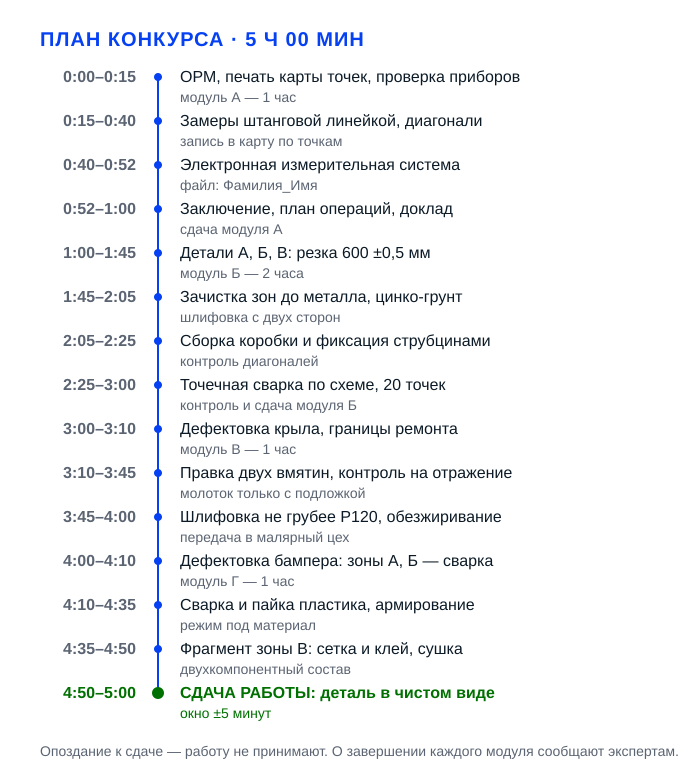
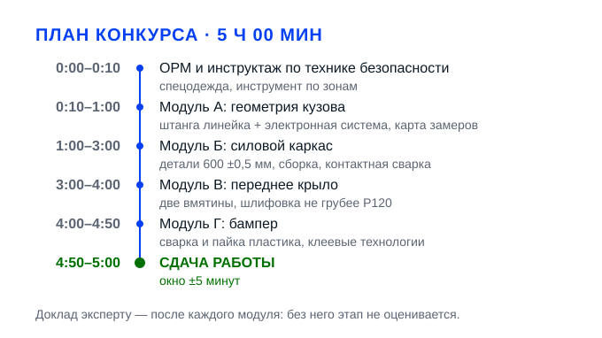
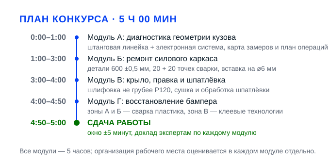

Кузовной ремонт (Р,О)
Задания ниже — официальные файлы «Абилимпикс» (источник: abilympics-russia.ru), разложенные по категориям. Решения написаны по тексту задания, регламенту и критериям оценки; в них указано, что именно проверяет эксперт.
Школьник
14–16 лет, базовый уровень заданияВыдержка из официального конкурсного задания: страницы, относящиеся к категории «Школьник» (стр. 8–13 источника).
Пошаговое решение
Конкурсное задание категории «Школьники» состоит из четырёх модулей общей длительностью пять часов: час на диагностику геометрии кузова двумя измерительными системами, два часа на частичную замену структурного элемента, час на ремонт металлической съёмной панели и час на ремонт неметаллического элемента. В каждом модуле отдельно оценивается организация рабочего места, поэтому порядок на посту важен не меньше, чем качество шва. Дальше задание расписано по шагам: что делать, каким инструментом, до какого состояния и по какому признаку проверить результат. Перед стартом запомните числовые требования задания: длина деталей 600 мм с допуском плюс-минус 0,5 мм, двадцать точек контактной сварки, шлифовка панели не грубее P120 и зоны, обведённые экспертами, которые ремонтировать нельзя. Именно на этих требованиях и теряются баллы, а не на сложных приёмах.

Задача 1. Модуль А: измерить геометрию кузова и объяснить результатМодуль А · 1 час из 5 · ОРМ, карта замеров, план операций
Первый модуль длится час и задаёт тон всей работе: по конкурсному заданию нужно распечатать карту контрольных точек, промерить кузов штанговой линейкой, записать результаты в карту, затем повторить измерение электронной измерительной системой, сохранить файл под своим именем и фамилией и доложить экспертам выводы. Оценивается не красота цифр, а порядок: организовано ли рабочее место, совпадают ли ваши замеры между двумя системами, есть ли вывод и план технологических операций. Час на модуль — это примерно двадцать минут на развёртывание поста, полчаса на два вида измерений и десять минут на карту и доклад, поэтому спешить с первого замера нельзя, а опаздывать с докладом — нельзя тем более.
Действие 1.1. Развернуть измерительный пост
Шаг 1.1.1
Организация рабочего места начинается до первого замера. Обходим кузов по периметру и освобождаем пространство шириной не меньше метра с каждой стороны: убираем козлы, вёдра, шланги. Стенд или подъёмник проверяем на устойчивость — кузов должен стоять на опорах, колёса или ложементы зафиксированы, домкрат не используется как опора. Инструмент раскладываем по зонам: штанга на стойке справа, электронная система на своей тележке, карта, планшет с зажимом, карандаш и стиральная резинка — слева, на высоте пояса. Надеваем очки и перчатки, длинные волосы убираем под головной убор.
Организация рабочего места входит в результат каждого модуля по конкурсному заданию, и это единственный критерий, который эксперт фиксирует уже в первую минуту, до всякой работы руками. Свободный подход к кузову нужен физически: со штангой вы двигаетесь вокруг автомобиля, и любой предмет на полу превращается в спотыкание с точным прибором в руках.
Пройдите вокруг кузова и мысленно проведите линию на расстоянии метра от порогов: на этой линии не должно быть ничего. Инструмент лежит так, чтобы до любого предмета вы дотягивались одной рукой, не переступая. Пол сухой, освещение включено полностью, у места водителя ничего не висит. Если что-то из этого не выполняется, вы ещё не начали модуль.
Самая частая ошибка — оставить инструмент на полу у колеса: штанга падает, наконечник гнётся, и дальше все замеры уходят в мусор, потому что прибор уже врёт. Вторая типичная ошибка — работать в перчатках на шлифовке и без перчаток у кузова, хотя кромки и стыки режут руки именно в измерительных операциях, когда вы наклоняетесь к аркам.
Эксперт обходит бокс в первые три-пять минут модуля и отмечает именно организацию: свободный подход, устойчивость кузова, наличие средств защиты, порядок на столе с документацией.
Шаг 1.1.2
Второй шаг поста — документация. Открываем карту контрольных точек для конкретной модели кузова, которая стоит на стенде, и проверяем, что версия карты совпадает с автомобилем: год выпуска, тип кузова, расположение точек. Печатаем карту на листе А3, не «уменьшая до А4» и не вписывая в поля — на распечатке должны быть видны номера точек и допуски. В шапке сразу записываем VIN, дату, номер участника, свою фамилию и имя. Рядом готовим планшет с зажимом, чтобы карта не ездила по крылу и не пачкалась.
По конкурсному заданию работа начинается именно с распечатки карты контрольных точек, и это не формальность: карта — документ, в который вы вносите замеры, и по ней эксперт сверяет, попали ли вы в допуски. Без карты результаты некуда записывать, а доклад без цифр в документе оценить невозможно, поэтому печать идёт первым шагом, а не в конце модуля.
Проверьте три вещи на распечатке: читаются номера всех контрольных точек, видны числовые допуски, и масштабная линия на листе соответствует линейке — приложите металлическую линейку к масштабной шкале и убедитесь, что сто миллиметров на бумаге это сто миллиметров. Шапка заполнена полностью, карта закреплена на планшете и не мнётся.
Типичная ошибка — взять карту от похожей модели «она почти такая же»: контрольные точки не совпадут, и вы запишете отклонения там, где их нет. Вторая — печатать карту в последний момент, когда уже начались замеры: пока принтер работает, вы теряете минуты, а потом переносите цифры из головы и путаете знаки отклонений.
Эксперт подходит и смотрит карту до начала измерений: правильная ли модель, заполнена ли шапка, есть ли на листе место для записей. Неряшливая карта сразу читается как слабая подготовка.
Шаг 1.1.3
Проверяем оба прибора до работы. У штанговой линейки осматриваем наконечники: они должны быть острыми, без выработки, посажены плотно. Берём штангу за оба конца и слегка покачиваем — люфт в телескопическом соединении и в шарнирах недопустим, потому что он превращает десятые доли миллиметра в целые миллиметры на длине замера. Проверяем фиксаторы: они должны затягиваться от руки, но держать жёстко. Электронную систему включаем, даём ей прогреться, проверяем заряд аккумулятора и кабели, а затем выполняем калибровку по эталонной стойке или контрольной базе, как требует инструкция к прибору.
Точность замера — это то, что вообще имеет смысл в этом модуле: разница между левой и правой стороной кузова измеряется миллиметрами, а допуски на элементы в следующем модуле заданы как полмиллиметра. Прибор с люфтом или некалиброванная электроника дают красивые, но неверные цифры, и эксперт это увидит при сравнении двух систем между собой. Прогрев и калибровка занимают минуты, а ошибка из-за пропущенной калибровки стоит всего модуля.
Штанга, сведённая на эталонной базе, показывает ноль, а при разведении на известное расстояние — ровно это расстояние. Электронная система после калибровки показывает нулевые отклонения на контрольной точке. Наконечники не качаются, фиксаторы держат, кабели не перекручены, индикатор заряда не в красной зоне.
Работать «на глазок» без калибровки — самая дорогая ошибка модуля: все замеры придётся переделывать, а времени на повторный цикл в часовом модуле уже нет. Вторая ошибка — оставить штангу лежать на кузове: она скатывается, наконечник мнётся, и прибор начинает давать разброс в полтора-два миллиметра.
Эксперт может попросить показать калибровку или объяснить, как вы её выполнили: важно не только то, что прибор включён, но и то, что участник понимает, зачем он это сделал.
Действие 1.2. Промерить кузов штанговой линейкой
Шаг 1.2.1
Начинаем с выбора базы. Штангу ставим наконечниками в две симметричные контрольные точки нижней части кузова — обычно это отверстия в лонжеронах или в усилителях пола, которые в карте отмечены как базовые. Штангу держим двумя руками, наконечники вводим в отверстия до упора, без перекоса: если один наконечник вошёл наполовину, замер уже неверный. Фиксатор затягиваем после того, как оба наконечника сели, а не до. Дальше идём по парам точек: передняя часть, средняя, задняя, каждый раз сравнивая левую и правую сторону.
Штанговая линейка — самый честный инструмент в этом модуле: она не зависит от электричества и показывает реальную геометрию, а не расчётную. По заданию диагностику геометрии выполняют именно ею, и результат должен быть записан в карту контрольных точек. Сравнение симметричных точек даёт ответ на главный вопрос — повело ли кузов и в какую сторону: разница в диагоналях и в расстояниях между одинаковыми точками слева и справа и есть след деформации.
Штанга сидит в точках плотно, без качания, фиксатор затянут, значение читается по шкале однозначно: вы видите и целые миллиметры, и десятые доли. Повторите замер на той же паре точек второй раз — расхождение между двумя замерами не должно превышать половины миллиметра. Если оно больше, дело в посадке наконечника, а не в кузове.
Ошибка новичка — ставить штангу на точки, которые видны и удобны, а не на те, что указаны в карте: замер получается, но к карте он не привязан, и эксперт не может его проверить. Вторая ошибка — держать штангу одной рукой и читать шкалу на весу: показание «плавает» на миллиметр-полтора, и вы записываете деформацию, которой нет.
Эксперт следит за посадкой наконечников и за тем, читает ли участник шкалу при неподвижной штанге. Именно на этом шаге видно, держал ли он инструмент в руках раньше.
Шаг 1.2.2
После базовых точек переходим к диагоналям проёмов — они дают самую наглядную картину перекоса. Меряем диагональ проёма ветрового стекла: от нижнего угла с одной стороны до верхнего противоположного, затем наоборот. То же делаем с проёмом заднего стекла и с дверными проёмами, каждый раз записывая оба значения. Разницу считаем сразу на месте, в уме или на полях карты, и помечаем знаком: плюс — сторона растянута, минус — сжата.
Диагонали — самый чувствительный индикатор перекоса: при боковом ударе они расходятся на пять-десять миллиметров, тогда как отдельные точки могут «молчать». В конкурсном задании результатом модуля названо экспертное заключение, а заключение без сравнения диагоналей неполное. Кроме того, диагонали дают вам язык для доклада: не «кузов кривой», а «проём ветрового стекла разошёлся на шесть миллиметров, сжата правая сторона».
Обе диагонали каждого проёма измерены и записаны рядом, разница посчитана и записана отдельной строкой. Норма для исправного кузова — не более двух-трёх миллиметров расхождения, всё большее требует объяснения в заключении. Проверьте, что вы мерили именно углы проёма, а не кромки накладок: молдинг снимается, а угол остаётся.
Мерить диагональ по внешним кромкам дверей или по накладкам — грубая ошибка: накладки стоят с зазорами, и разница в них не имеет отношения к геометрии. Вторая ошибка — измерить одну диагональ и «прикинуть» вторую: заключение получается без сравнения, и баллы за диагностику теряются.
Эксперт подходит к проёму и просит показать, где именно вы брали углы: по положению наконечников видно, мерили ли вы геометрию или кромки накладок. Ответ по карте он принимает как доказательство.
Шаг 1.2.3
Теперь проходим по контрольным точкам из карты последовательно, сверху вниз: точки моторного щита и брызговиков, затем стойки и пороги, затем задние лонжероны. На каждой паре записываем значение в карту напротив номера точки, а не на свободном поле — иначе через десять минут вы уже не вспомните, к чему относится цифра. Карандашом, печатными цифрами, с указанием единиц. Если значение вызывает сомнение, ставьте звёздочку и возвращайтесь к этой точке после прохода.
Карта контрольных точек — это форма отчёта, и по конкурсному заданию результаты измерений записывают именно в неё. Аккуратно заполненная карта показывает, что участник прошёл весь перечень, а не выборочные удобные места: эксперт видит количество точек и может сравнить их с полным списком модели. Кроме того, при сравнении с электронной системой вам нужны именно эти цифры, по одной на точку, иначе сверять нечего.
Все строки карты заполнены, номера точек совпадают с распечаткой, единицы указаны, пометки о сомнительных точках сделаны. Пройдите по карте глазами: не осталось ли пустых строк в середине списка, ведь именно там чаще всего пропускают точки, до которых трудно дотянуться.
Пропускать точки, к которым неудобно подлезть, — самая распространённая потеря баллов: карта выглядит заполненной, но половина списка пустая. Вторая ошибка — писать значения на клочке бумаги и «перенести потом»: к моменту переноса цифры путаются, и в карте появляются перевёрнутые значения.
Эксперт смотрит карту на полноту и на манеру записи: печатные цифры напротив номеров точек читаются как работа по документу, а столбик цифр в углу листа — как спешка.
Шаг 1.2.4
Закончив проход, возвращаемся к точкам, где отклонение вышло за допуск, и повторяем замер другим способом: меняем базу, ставим штангу с противоположной стороны, проверяем ту же пару точек дважды. Сравниваем с допуском из карты и определяем зону деформации — передняя часть, средняя, задняя. В карте обводим отклонения, которые подтвердились, и записываем величину со знаком. Если отклонение не подтвердилось, зачёркиваем аккуратно и пишем «замер повторён, норма».
Повторный замер — это защита от собственной ошибки, и он же даёт основание для вывода: неподтверждённое отклонение в заключение попадать не должно, иначе вы предложите править кузов, который в норме. По конкурсному заданию участник сообщает экспертам свои выводы, и вывод «есть деформация в передней части, семь миллиметров» звучит убедительно только тогда, когда за ним стоит повторённый замер, а не одно случайное показание.
Подтверждённые отклонения обведены и имеют величину, неподтверждённые помечены как перепроверенные. Разница между замерами одной точки не превышает половины миллиметра. Вы можете назвать зону деформации и её направление, не подглядывая в записи.
Списать любое отклонение в деформацию, не повторив замер, — путь к ложному заключению и к лишним операциям в следующем модуле. Обратная ошибка — списать реальное отклонение на «прибор врёт» и не указать его в карте: тогда план технологических операций окажется неполным.
Эксперт задаёт вопрос по конкретной точке, где вы отметили отклонение, и по ответу видно, понимаете ли вы, что означает отклонение именно в этом месте кузова.
Действие 1.3. Промерить кузов электронной системой
Шаг 1.3.1
Электронную измерительную систему разворачиваем рядом с кузовом на ровной площадке. Выставляем стойки или направляющие по инструкции, закрепляем базовые элементы на кузове в точках, указанных производителем, и выполняем привязку системы к кузову — обнуление по базовым точкам. Кабели укладываем так, чтобы за них не цепляться, разъёмы вставляем до щелчка. Если система с щупом, проверяем сам щуп: наконечник целый, шарниры без люфта. На экране выбираем ту же модель кузова, что в карте.
Электронная система меряет в трёх плоскостях и показывает отклонение сразу в миллиметрах, тогда как штанга даёт только линейные размеры. Второе измерение нужно для перекрёстной проверки первого: совпадение двух независимых методов — лучший аргумент в экспертном заключении. Привязка к базовым точкам — то же, что выбор базы у штанги: без неё координаты считаются от случайного места.
Система после привязки показывает нулевые отклонения в базовых точках и не выдаёт сообщений об ошибке калибровки. Щуп двигается плавно, без люфта и без заеданий. На экране выбрана правильная модель, единицы измерения — миллиметры. Кабели лежат свободно и не натянуты.
Начать измерение до привязки к базовым точкам — вся картина отклонений окажется смещённой, и вы получите «деформацию» по всему кузову. Вторая ошибка — тянуть кабель через проход: его задевают ногой, разъём выходит, и система теряет связь в середине прохода по точкам.
Эксперт смотрит на экран в момент привязки системы к кузову: видно, выполняете ли вы привязку осознанно или нажимаете кнопки наугад. Нулевые отклонения в базовых точках он проверяет сам.
Шаг 1.3.2
Проходим те же контрольные точки, что и штангой, в том же порядке. Наконечник щупа вводим в отверстие точки и держим до звукового или светового подтверждения — система должна «поймать» положение, а не считать его по движению. На каждой точке дожидаемся стабилизации цифры: если значение скачет, значит наконечник стоит неровно или система не видит маркер. Записываем отклонение в ту же карту, во вторую колонку или другим цветом, чтобы сразу было видно расхождение двух методов.
Второе измерение имеет смысл только тогда, когда его можно положить рядом с первым: две колонки в одной карте дают прямое сравнение, и любое расхождение больше миллиметра сразу заметно. По заданию результаты электронного измерения нужно сохранить и доложить выводы, то есть цифры должны быть не «где-то в приборе», а в документе.
Заполнены те же точки, что и при замере штангой, и расхождение между методами по каждой точке не превышает одного-двух миллиметров. Точки, где методы разошлись сильнее, отмечены отдельно — их вы перепроверите. Показания на экране стабильны, без скачков.
Гнать щуп по точкам быстро, «чтобы система успела»: она записывает положение в момент касания, и при быстром движении в карту попадают случайные цифры. Вторая ошибка — записать только отклонения, а нулевые точки не отмечать: тогда непонятно, прошли ли вы весь список.
Эксперт сравнивает вашу вторую колонку с первой: сходимость двух методов для него главный показатель качества диагностики, и расхождение больше трёх миллиметров он обсудит с участником.
Шаг 1.3.3
Сохраняем результат в системе под своим именем и фамилией, как прямо требует конкурсное задание: в поле имени файла или профиля пишем «Фамилия_Имя», без сокращений и без латиницы вперемешку с кириллицей. Проверяем, что сохранён полный протокол с датой, моделью кузова и всеми точками, а не только экран с текущим отклонением. Если система позволяет печать, распечатываем протокол и прикладываем к карте; если нет — фотографируем экран так, чтобы читались цифры и имя файла, и показываем эксперту.
Сохранение под своим именем — отдельное требование задания, и оно проверяется буквально: файл без имени участника невозможно опознать, а значит, результат второго измерения формально отсутствует. Полный протокол нужен для экспертного заключения: по нему видно, что измерение выполнено по всей карте, а не по трём показательным точкам. Это же доказательство вашей работы, если эксперт подходит с вопросами после доклада.
Файл сохранён, имя содержит фамилию и имя участника, дата и модель кузова видны. Протокол открывается и содержит все точки карты. Копия — на бумаге или фото — лежит рядом с картой замеров. Проверьте всё это до доклада, а не после.
Сохранить файл как «измерение1» или оставить системное имя — самая обидная потеря: работа сделана, а результата формально нет. Вторая ошибка — сохранить только итоговую картинку с отклонениями, без перечня точек: доказать полноту замера будет нечем.
Эксперт проверяет имя файла и наличие протокола, часто прямо на экране прибора, пока участник ещё рядом. Файл без фамилии он считает отсутствующим результатом и говорит об этом сразу.
Действие 1.4. Оформить заключение и доложить выводы
Шаг 1.4.1
Собираем всё в один документ. В карте контрольных точек сводим две колонки — штанговая линейка и электронная система — и по каждой точке считаем расхождение. Точки с подтверждённым отклонением обводим красным и выносим в отдельный список с величиной и знаком. Ниже, на свободном поле, пишем короткое резюме: сколько точек проверено, в скольких отклонение, в какой зоне кузова оно сосредоточено. Подпись, дата, номер участника — внизу листа, там, где их будет искать эксперт.
Сведённая карта — это и есть экспертное заключение, которое требуют по заданию, только в черновом виде. Пока данные лежат в двух колонках без сравнения, у вас нет вывода, а есть два набора цифр. Красное выделение подтверждённых отклонений нужно не для красоты: по нему эксперт за десять секунд понимает, что вы нашли и где, и дальше слушает доклад, а не разбирается в ваших записях.
В карте нет пустых строк, обе колонки заполнены, расхождения посчитаны по каждой точке, подтверждённые отклонения вынесены списком с величинами. Резюме содержит число проверенных точек и название зоны деформации. Подпись и дата на месте.
Сдать две колонки без сравнения — типичная ошибка: работа сделана, а вывода нет, и балл за заключение уходит. Вторая ошибка — переписать в резюме все отклонения подряд, включая спорные: заключение выглядит как черновик, и эксперт не понимает, что вы считаете главным.
Эксперт читает резюме и список отклонений: важна не длина текста, а то, что вывод сформулирован однозначно и каждая цифра в нём подкреплена строкой из карты замеров.
Шаг 1.4.2
К карте прикладываем план технологических операций — короткий перечень того, что нужно сделать с кузовом по результатам замеров. Пишем последовательно: сначала правка или вытяжка деформированной зоны на стенде, затем контроль повторным замером, затем замена или ремонт прилегающих элементов, затем антикоррозионная обработка и передача в малярный цех. Напротив каждого пункта — зона и величина, взятые из карты. Если отклонений нет, план состоит из одной строки: «геометрия в пределах допуска, правка не требуется, переход к ремонту панелей».
План операций назван в задании отдельным результатом модуля наряду с картой замеров, и это логично: диагностика нужна не сама по себе, а чтобы определить порядок ремонта. Последовательность в плане показывает понимание технологии — сначала восстановление силового каркаса, потом панели, потом окраска, потому что правка после покраски уничтожает покрытие. Кроме того, план — ваш рабочий документ на следующие четыре часа конкурса.
В плане три-пять пунктов, каждый начинается с глагола и содержит зону кузова. Порядок операций не противоречит технологии: правка до замены панелей, антикор после сварки, малярный цех последним. Все величины в плане совпадают с картой замеров.
Писать план «в общем виде»: «отрихтовать кузов, покрасить» — такой план нельзя выполнить и нельзя оценить. Вторая ошибка — поставить малярные работы до правки: после правки покрытие всё равно придётся восстанавливать, и план показывает непонимание последовательности.
Эксперт смотрит именно на порядок операций в плане: правильно выстроенная последовательность ценится выше подробных описаний отдельных действий. Малярный цех в начале плана он считает ошибкой.
Шаг 1.4.3
Доклад экспертам — короткий и точный. Подходим с картой и протоколом в руках и говорим по структуре: чем мерили, сколько точек проверили, что нашли, что предлагаем. Примерно так: «Геометрию проверил штангой и электронной системой, точек двенадцать, отклонения подтверждены в двух — правая сторона проёма, шесть и семь миллиметров, предлагаю правку на стенде с контрольным замером». Три-четыре предложения, без оправданий и без рассказов о том, как было трудно. Если эксперт задаёт вопрос, отвечаем по карте, показывая точку пальцем.
По конкурсному заданию участник сообщает свои выводы экспертам — это отдельная операция, а не вежливая формальность. Доклад проверяет понимание: если участник не может объяснить, что означают его цифры, значит, замеры выполнялись механически. Кроме того, модуль заканчивается по вашей команде: пока вы не сообщили о завершении, эксперт не фиксирует результат, а время модуля продолжает идти.
Доклад занял не больше минуты, содержит все четыре элемента — метод, объём, находка, предложение. Эксперт услышал величину отклонения и зону. Карта и протокол при этом у вас в руках, а не на столе в другом конце бокса.
Молча сдать карту и уйти — частая ошибка: формально работа есть, а требование доложить выводы не выполнено. Вторая — начать издалека, с описания погоды в боксе, и не успеть сказать главное до того, как эксперт переключится на следующего участника.
Эксперт оценивает доклад: ясность, точность цифр и способность ответить на один-два уточняющих вопроса без подглядывания в записи. Время доклада он тоже отмечает — больше двух минут не нужно.
Задача 2. Модуль Б: собрать и заварить коробчатую конструкцию порогаМодуль Б · 2 часа из 5 · три детали, сварка по схеме
Самый длинный модуль конкурса — два часа из пяти, и он же самый требовательный к точности. По заданию нужно подготовить три детали: деталь А — соединитель пола, деталь Б — усилитель порога, деталь В — наружная часть порога. Каждую отрезают по размеру 600 мм с допуском плюс-минус 0,5 мм, удаляют заусенцы, притупляют острые кромки, а заштрихованные зоны шлифуют до металла. Затем детали обезжиривают, покрывают цинкосодержащим грунтом, собирают в коробчатую конструкцию, фиксируют и варят точечной сваркой по схеме. Оценивается и геометрия собранного узла, и качество швов, и соблюдение последовательности операций, поэтому два часа здесь делятся примерно так: сорок минут на подготовку деталей, двадцать на сборку и фиксацию, сорок на сварку и двадцать на контроль.
Действие 2.1. Подготовить детали А, Б и В
Шаг 2.1.1
Разметку начинаем с базы, а не с края заготовки: у каждой детали есть технологическая кромка, и если отмерить 600 мм от неровного реза, длина уйдёт вместе с ним. Кладём деталь на верстак, прижимаем струбциной, отмеряем рулеткой с упором или штангенциркулем 600 мм от выбранной базы, ставим две риски — у верхней и нижней кромки, и соединяем их чертилкой по линейке. Линию ведём тонко и один раз: двойная разметка даёт «коридор» в миллиметр, и пила идёт по нему наугад. Возле линии пишем номер детали, чтобы А, Б и В не перепутались при сборке.
Допуск на длину в задании — плюс-минус 0,5 мм, то есть половина миллиметра. Это значит, что разметка «на глаз» не проходит в принципе: отклонение карандаша на глаз заметно больше допуска, и деталь придётся переделывать, а заготовки на конкурсе не бесконечны. Тонкая одиночная линия нужна ещё и потому, что при резке вы ведёте инструмент по риске, и любая «широкая» разметка автоматически съедает часть допуска.
На детали две совпадающие риски, соединённые ровной линией, рядом подписан номер детали. Приложите линейку к линии: отклонение от прямой не должно быть видно на просвет. Проверьте рулетку на упор — она должна начинаться от нуля, а не от крючка, иначе все шестьсот миллиметров сместятся на толщину упора.
Мерить от кромки, которая сама кривая или имеет заусенец, — ошибка, которая вылезет на контроле длины. Вторая частая ошибка — размечать сразу все три детали и резать по очереди без подписи: детали похожи, и перепутанные номера дают неправильную сборку по схеме.
Эксперт подходит в момент разметки и смотрит, от какой базы вы меряете и чем: рулетка от крючка вместо упора и разметка от кривой кромки видны ему сразу.
Шаг 2.1.2
Режем по разметке. Тонкий лист удобнее всего брать сабельной пилой с полотном по металлу или угловой шлифмашиной с отрезным кругом толщиной 1 мм — узкий рез оставляет меньше заусенца и не уводит кромку. Деталь прижимаем струбциной к верстаку так, чтобы свес был минимальным: длинный свес вибрирует, и рез уходит в сторону. Машинку держим двумя руками, круг ведём по линии, а не поперёк, не давим: от давления круг уводит. В конце реза придерживаем отрезаемый кусок рукой в перчатке, чтобы он не упал и не вырвал кромку. Очки — обязательно, искры летят в лицо.
Ровный рез — это не только красота: от него зависит, сядут ли детали в конструкцию без зазоров, а зазор в сварке напрямую влияет на проплавление. Кроме того, длина 600 мм с допуском полмиллиметра проверяется на готовой детали, и клин в полтора миллиметра по длине уже не даст уложиться в допуск. Тонкий круг и минимальный свес — самые простые способы удержать рез в допуске без специального станка.
Кромка реза ровная, без «ступеньки» и без увода в сторону, деталь не погнута и не перегрета до синевы. Отрезанный кусок ровный, а не клином. На ощупь кромка острая, но ровная — это и есть заготовка под следующую операцию.
Резать «на весу», без прижима: деталь вибрирует, круг уводит, и рез получается клином с разницей в миллиметр между верхом и низом. Вторая ошибка — давить на машинку, чтобы быстрее: круг перегревается, кромка синеет, а тонкий металл ведёт «волной».
Эксперт смотрит на средства защиты и на качество реза: заусенец и клин видны сразу, даже без линейки. Очки на лице он проверяет до включения машинки, а искры от круга летят именно в эту сторону.
Шаг 2.1.3
После резки снимаем заусенец и притупляем кромки — это прямо прописано в задании для всех трёх деталей. Заусенец убираем плоским напильником с мелкой насечкой, двигая его от себя под небольшим углом к кромке, а не поперёк: поперечное движение срывает металл и делает новую задирину. Затем снимаем фаску 0,5–1 мм по обеим сторонам кромки — наждачным лепестковым кругом или тем же напильником, до ощущения «гладко» под пальцем в перчатке. Углы и торцы зачищаем отдельно, там заусенец самый крупный.
Необработанная кромка — это порез на перчатке и на пальце при сборке, а на самом соединении — непровар: заусенец не даёт деталям сесть вплотную, между ними остаётся зазор, и точечная сварка вместо сплавления прожигает металл. Задание требует удалить заусенцы и притупить кромки именно поэтому, и это проверяется визуально и на ощупь. Заодно притупленная кромка не режет грунт и краску на соседней детали при сборке.
Проведите пальцем в перчатке вдоль всей кромки: нигде не цепляет. Затем контроль длины: 600 мм плюс-минус 0,5 мм, замер штангенциркулем в двух местах — у верхней и нижней кромки. Кромка блестящая, без тёмных заусенцев и без «бахромы».
Снять заусенец «где видно» и оставить его на углах — типичная ошибка: именно в углах он крупнее всего и именно там детали соединяются. Вторая ошибка — снять фаску слишком глубоко, до утоньшения кромки: такой металл прогорает при сварке.
Эксперт проверяет кромки пальцем в перчатке и длину штангенциркулем: 600 мм плюс-минус 0,5 мм и отсутствие заусенца — первый формальный критерий модуля, и он фиксируется до сборки.
Шаг 2.1.4
Шлифуем заштрихованные зоны до чистого металла. По заданию у детали А это зоны с двух сторон, у детали В — тоже с двух сторон, у детали Б — заштрихованные зоны, которые указаны в задании. Берём угловую шлифмашинку с лепестковым кругом зернистостью P60–P80, включаем и ведём кругом вдоль зоны, а не поперёк, лёгкими проходами без нажима. Держим машинку так, чтобы круг касался поверхности всей плоскостью: работа кромкой круга оставляет борозды. Шлифуем до исчезновения грунта и окалины, до ровного металлического блеска по всей площади зоны, включая границы — они важнее середины.
Цинкосодержащий грунт и сварка не работают по старому покрытию: под краской остаётся слой, который при нагреве даёт поры и газовые раковины в шве. Задание прямо требует отшлифовать заштрихованные зоны до металла, и это условие допуска к сварке: не зачистил — варить нельзя, соединение будет держаться на краске.
Вся заштрихованная зона ровного металлического цвета, без тёмных пятен грунта и без синевы от перегрева. Границы зоны совпадают с разметкой задания, а не «чуть больше» и не «чуть меньше». Толщина металла не уменьшена: на просвет и на ощупь нет «ям», провалов от перешлифовки.
Шлифовать только середину зоны, оставив тёмную кайму по краям, — ошибка, которая проявится при сварке: шов пойдёт по краске, появятся поры. Обратная ошибка — давить кругом на одном месте: металл утоньшается и синеет, и в этом месте сварка прожжёт деталь насквозь.
Эксперт осматривает зачищенные зоны до сборки, иногда с фонариком под углом: остатки грунта видны как матовые пятна, а синева от перегрева — как радужные полосы на металле.
Действие 2.2. Обезжирить, загрунтовать и собрать конструкцию
Шаг 2.2.1
Обезжириваем подготовленные поверхности перед грунтом. Берём обезжириватель и две чистые салфетки: первой проходим поверхность и сразу выбрасываем её — она собрала масло, второй протираем начисто и даём испариться. Движения — в одном направлении, без возврата по уже протёртому. Не касаемся зачищенных зон голыми руками: пот с пальцев даёт ту же плёнку, что и масло. Затем наносим цинкосодержащий грунт тонким ровным слоем из баллона с расстояния 20–25 см, короткими проходами в два слоя с промежутком по инструкции, покрывая зачищенные зоны и прилегающую кромку.
Цинкосодержащий грунт в задании указан не случайно: цинк работает как протектор, он защищает сварной шов и кромки от коррозии изнутри, откуда потом не подлезть. Обезжиривание перед грунтом — обязательное условие адгезии: на масляной плёнке грунт не держится и отслаивается вместе с краской через месяц. Кроме того, грунт по кромке защищает металл от окисления, пока вы собираете конструкцию, а сборка занимает не минуту.
Поверхность равномерно серая, без пропусков и без потёков. Грунт сухой на ощупь после времени сушки по инструкции на баллоне, не липнет к пальцу в перчатке. Зачищенные зоны полностью закрыты, кромки тоже. Проверьте углы и внутренние поверхности детали — там пропуски чаще всего.
Нанести грунт на непросохший обезжириватель — самый частый брак: растворитель остаётся под слоем, и грунт вспучивается пузырями. Вторая ошибка — лить толстым слоем «чтобы надёжнее»: толстый слой не сохнет, при сварке вскипает и даёт поры в шве.
Эксперт смотрит на равномерность покрытия и на жирные разводы: пятна видны под углом к свету. Пропуски в углах детали он находит первым делом, потому что там грунт не ложится чаще всего.
Шаг 2.2.2
Собираем коробчатую конструкцию по схеме из задания: деталь А — соединитель пола, деталь Б — усилитель порога, деталь В — наружная часть порога. Раскладываем детали на верстаке в том порядке, в котором они должны лечь друг на друга, и проверяем ориентацию: заштрихованные зоны должны смотреть внутрь соединения, а не наружу. Сначала ставим на место деталь А, к ней прикладываем Б, сверху накрываем В. Проверяем, что торцы деталей совпадают по плоскости: коробка должна получиться прямоугольной, без «ступеньки» на торце.
Коробчатая конструкция имитирует структурный элемент нижней части боковины кузова — порог, и её задача показать, что участник умеет собрать силовой узел в правильном порядке. Порядок деталей в задании не случаен: соединитель пола — основание, усилитель придаёт жёсткость, наружная часть закрывает узел. Перепутанные слои дают шов на поверхности, работающей на сдвиг.
Детали лежат в порядке А — Б — В, заштрихованные зоны внутри. Торцы совпадают: проведите по торцу линейкой — она должна лечь без качания. Зазоры между деталями не больше толщины металла, то есть плотно, но без натяга, из-за которого деталь выгибается «бочкой».
Собрать «как получится» без сверки со схемой — половина баллов модуля: конструкция внешне похожа, но слои не те. Вторая ошибка — силой вдавить деталь в паз: металл выгибается, и зазор в соединении получается неравномерным по длине.
Эксперт сверяет сборку со схемой до сварки: проверяет порядок слоёв и ориентацию зачищенных зон. Перепутанные местами детали А и В он видит по торцу конструкции.
Шаг 2.2.3
Фиксируем собранный пакет струбцинами или сварочными клещами, прежде чем варить. Ставим первую струбцину по центру, затем две по краям, потом добавляем промежуточные: так пакет садится ровно, без перекоса в одну сторону. Затягиваем понемногу, крест-накрест, проверяя после каждой затяжки, не ушла ли деталь. Затем проверяем геометрию: диагонали коробки должны быть равны, торец ровный, длина по наружной части — те же 600 мм. Поджимаем пакет так, чтобы между деталями не было видимого зазора, но металл не был выгнут.
Точечная сварка требует плотного контакта: если между листами зазор, ток идёт не в соединение, а в воздух, и вместо точки получается прожог или прилипание без проплавления. Фиксация до сварки удерживает геометрию: как только пойдёт первая точка, тепловые деформации начнут тянуть металл. Симметричные струбцины и поочерёдная затяжка — простейший способ не повести пакет.
Диагонали коробки равны с точностью до миллиметра, торец совпадает, зазоры между деталями не видны на просвет. Струбцины стоят симметрично и не мешают подводу электродов к точкам сварки. Пакет не качается на верстаке, при нажатии рукой не «играет».
Зажать пакет одной струбциной по центру и сразу начать варить — края расходятся, и шов идёт по зазору. Вторая ошибка — перетянуть струбцину: металл выгибается, между деталями появляется «пузырь», который при сварке превращается в прожог.
Эксперт проверяет диагонали и зазоры до сварки, а затем смотрит, не разошлась ли конструкция в процессе. Симметрично поставленные струбцины он отмечает как признак продуманной работы.
Действие 2.3. Выполнить точечную сварку по схеме
Шаг 2.3.1
Настраиваем аппарат контактной сварки под толщину пакета. Ставим электроды нужного диаметра, проверяем, что их торцы чистые и одинаково заточены: загрязнённый электрод даёт пятно вместо точки. Выставляем усилие сжатия и режим по таблице на аппарате или по инструкции к нему, для тонкого листа — короткий импульс. Проверяем на обрезке того же металла: варим одну точку и смотрим результат — должен быть ровный вдавленный след и ядро, а не прожог и не «прилипание». Только после контрольной точки выходим на изделие.
Режим сварки — причина половины брака в этом модуле: на слабом режиме получается соединение, которое разваливается от отвёртки, на сильном — прожог и вмятина. Задание требует выполнить точечную сварку по схеме, и первое условие — стабильный, проверенный режим, а не «на глаз по звуку». Контрольная точка на обрезке занимает минуту и показывает, что аппарат настроен именно под этот металл.
На обрезке получается точка с ядром: след круглый, вдавленный, металл вокруг не прожжён. При попытке разъединить обрезок точка держит, а не отлетает. Электроды чистые, без нагара и без налипшего металла. Усилие сжатия ощущается рукой: пакет сжат плотно, электроды не «прыгают».
Варить сразу на изделии, «проверив на глаз» — самая дорогая спешка: испорченную точку на готовой детали уже не переварить. Вторая ошибка — работать грязными электродами: налипший металл меняет сопротивление, и точки идут с пропусками.
Эксперт может подойти в момент настройки аппарата: ему важно увидеть, что режим проверен на обрезке, а не подобран на первом касании изделия. Контрольную точку он иногда просит показать.
Шаг 2.3.2
Размечаем точки сварки по схеме задания: наносим риски маркером по металлу или чертилкой с шагом, указанным в схеме, отступая от кромки на полтора-два диаметра электрода, чтобы не вырвать кромку. Точки ставим симметрично относительно середины детали: сначала две фиксирующие по краям, затем средняя, затем остальные, двигаясь от середины к краям или через одну. Такой порядок не даёт теплу собраться в одном месте. Считаем точки вслух или отмечаем на схеме карандашом, чтобы не сбиться.
Схема сварки — не рекомендация: количество и расположение точек определяют прочность узла, а в описании модуля фигурируют двадцать точек одноточечной двусторонней контактной сварки. Пропущенная или лишняя точка читается как невыполненная операция. Порядок от середины к краям нужен потому, что металл при нагреве расширяется: при сварке от края пакет уводит винтом.
Риски нанесены по всей длине с равным шагом, их количество совпадает со схемой. Первые точки стоят симметрично, пакет после них не разошёлся. Расстояние от точки до кромки одинаковое по всей детали — проверьте линейкой в двух-трёх местах.
Варить подряд от края к краю — конструкцию ведёт, и зазор на другом конце растёт. Вторая ошибка — ставить точки слишком близко к кромке: металл вырывает, и вместо соединения получается рваная дыра. И то и другое эксперт видит по шву, а не по вашим объяснениям.
Эксперт сверяет число и расположение точек со схемой: это делается визуально и быстро, поэтому пропуск или лишняя точка видны сразу. Шаг между точками он выборочно проверяет линейкой.
Шаг 2.3.3
Варим точки по разметке. Электроды ставим строго перпендикулярно поверхности, сжимаем пакет до упора и только потом даём импульс: касание без сжатия — это не сварка, а искра. Держим электроды сжатыми до полного остывания точки, секунду-две после импульса, потому что если разжать сразу, металл «дёрнется» и ядро треснет. Переходим к следующей точке, не отрывая второй электрод далеко от поверхности. По завершении проходим все точки ещё раз глазами, проверяем, не осталось ли пропущенных рисок.
Двусторонняя контактная сварка работает только при плотном сжатии: ток проходит через место контакта, металл плавится в ядре, и после остывания получается литое соединение. Выдержка после импульса — половина успеха: разжатые раньше времени электроды оставляют точку с внутренней трещиной, которая не видна снаружи, но не держит нагрузку. Последовательность и перпендикулярность важны для равномерного проплавления по всей длине шва.
Следы точек круглые, одинакового размера, слегка вдавленные, без прожогов и без синевы вокруг. Количество совпадает со схемой. Попробуйте провернуть пакет рукой: он не должен «играть» относительно точек. С обратной стороны виден ровный вдавленный след — признак сквозного проплавления.
Разжимать электроды сразу после импульса — точки трескаются изнутри, и узел разваливается при первом нагружении. Вторая ошибка — варить по одному месту дважды, «чтобы надёжнее»: двойной импульс прожжёт металл и оставит вмятину.
Эксперт осматривает точки с обеих сторон и иногда проверяет одну точку на отрыв на образце: качество проплавления — ключевой критерий модуля, и по нему он задаёт вопросы о режиме сварки.
Действие 2.4. Проверить узел и сдать модуль
Шаг 2.4.1
После сварки конструкция остывает, и только потом её трогаем: горячий пакет ведёт при любом механическом воздействии. Пока остывает, готовим контроль: линейка, штангенциркуль, фонарик, ветошь. Затем осматриваем каждую точку — нет ли прожогов, трещин вокруг ядра, синевы, налипшего металла. Следы электродов, если они остались, зачищаем лепестковым кругом зернистостью P80, не задевая сам шов. Заусенцы и брызги снимаем, кромки снова проверяем на ощупь.
Качество выполненных работ — прямо названный критерий модуля Б в конкурсном задании, и оценивается оно именно по швам: ровные точки без прожогов читаются как владение методом, а «сито» из прожжённых дыр — как спешка. Зачистка следов электродов нужна ещё и потому, что в реальном кузове на эти места ложится герметик и грунт, и любая необработанная вмятина под ними превращается в очаг коррозии.
Каждая точка целая: круглый след, без трещин по краю, без прожога и без наплыва металла. Синевы вокруг точек нет. Кромки гладкие, брызг на поверхности нет. Проведите рукой в перчатке по шву: ничего не цепляет и не колется.
Оставить брызги и следы электродов «это же не влияет» — ошибка: по внешнему виду шва эксперт судит о всей работе, а брызги часто скрывают прожоги. Вторая ошибка — зачищать шов кругом с нажимом: снимается верхний слой металла, и точка истончается.
Эксперт осматривает узел в сборе, с обеих сторон, при хорошем свете: именно здесь видно, варили ли по режиму или «как получилось», и нет ли прожогов под слоем брызг.
Шаг 2.4.2
Контролируем геометрию готового узла. Измеряем длину наружной части — 600 мм плюс-минус 0,5 мм, штангенциркулем в двух точках. Проверяем прямоугольность по диагоналям коробки: если они разошлись больше чем на миллиметр, узел повело сваркой. Прикладываем линейку к торцу и к боковой грани: щупа быть не должно. Ставим узел на ровную плиту — качания нет. Результаты записываем и показываем эксперту.
Сварка всегда немного тянет металл, и контроль после неё — единственный способ узнать, уложились ли вы в допуск. Задание требует выполнить частичную замену структурного элемента по технологической карте, а карта заканчивается контролем размеров: узел с перекосом в три миллиметра на место не встанет. Записанные цифры показывают, что участник проверял результат.
Длина 600 мм плюс-минус 0,5 мм в обеих точках замера, диагонали равны, торец ровный, узел не качается на плите. Все значения записаны. Если диагонали разошлись, вы фиксируете это честно и объясняете, чем вызвано.
Не проверять геометрию после сварки — типичная ошибка: узел с перекосом сдаётся как готовый, и балл за качество теряется вместе с баллом за контроль. Вторая ошибка — подправлять размер силой, изгибая узел: точки трескаются, и конструкция теряет прочность.
Эксперт выборочно перемеряет узел своим инструментом: расхождение с вашими цифрами сразу показывает, записывали ли вы реальные значения, а не желаемые.
Шаг 2.4.3
Завершаем модуль по правилам задания: сообщаем экспертам о завершении операций и приводим рабочее место в порядок. Узел кладём на отведённое место или оставляем на верстаке так, чтобы он был доступен для осмотра и не мешал проходу. Инструмент возвращаем на места, струбцины снимаем и вешаем, обрезки и окалину сметаем в контейнер, сварочный аппарат выключаем, электроды снимаем, кабели сматываем. Остатки грунта и салфетки убираем, пол подметаем.
Организация рабочего места входит в результат модуля наряду с самой конструкцией, и сдача работы — это тоже операция, которую эксперт фиксирует. Порядок после сварки важен по двум причинам: он оценивается, и он же обеспечивает безопасность — брошенные на полу обрезки тонкого металла режут ноги, а горячий аппарат с электродами представляет опасность для следующего участника. Кроме того, по убранному месту видно, доведена ли работа до конца.
Инструмент на местах, верстак свободен, обрезки и окалину убраны, аппарат выключен, кабели смотаны. Эксперт уведомлён: вы сказали, что модуль завершён. Узел лежит так, что к нему можно подойти со всех сторон.
Уйти, оставив обрезки и включённый аппарат, — потеря баллов за организацию и нарушение безопасности. Вторая ошибка — не сообщить о завершении: эксперт может не заметить, что работа готова, и модуль формально не будет закрыт.
Эксперт фиксирует время и состояние рабочего места: порядок на верстаке и выключенный аппарат — простые, но заметные признаки того, что модуль доведён до конца.
Задача 3. Модуль В: отремонтировать две вмятины на переднем крылеМодуль В · 1 час из 5 · панель крыла, шлифовка не грубее P120
Модуль на час: деталь А — переднее крыло автомобиля, которое устанавливают на стойку или площадку для ремонта. По заданию нужно определить область ремонта, причём зоны, обведённые экспертами, ремонтировать нельзя, затем восстановить повреждённую поверхность — на панель наносят две вмятины — и отшлифовать зону ремонта так, чтобы зернистость была не грубее P120. Здесь оценивается не только результат, но и путь к нему: правильный выбор метода под каждую вмятину, работа без растяжения металла, аккуратная шлифовка без прожогов и сохранение заводских рёбер жёсткости. Час на модуль — это примерно десять минут на дефектовку и подготовку, тридцать пять на правку и пятнадцать на шлифовку и сдачу.
Действие 3.1. Определить границы и способ ремонта
Шаг 3.1.1
Первым делом осматриваем панель и находим отметки экспертов. Границы области ремонта обведены маркером по краске, и именно внутри этих границ разрешено работать. Обходим крыло, встаём так, чтобы свет скользил вдоль поверхности — при боковом свете видны и обе вмятины, и границы обводки. Находим обе вмятины, определяем их размер, глубину и место: одна обычно ближе к центру панели, вторая у ребра или у кромки. Границы обводки переносим мысленно на панель и запоминаем: всё, что за линией, не трогаем.
В задании прямо сказано определить область ремонта и не ремонтировать зоны, обведённые экспертами. Это проверка дисциплины: в реальном ремонте мастер работает по согласованной зоне, потому что за её пределами начинается чужая работа — окрашенная деталь, заводское покрытие, зона, которую нельзя тревожить.
Вы можете показать обе вмятины и провести пальцем по границе обводки, не заглядывая в записи. На панели видны обе отметки, размеры вмятин вы называете в сантиметрах. Ни одна из ваших будущих операций не выходит за линию обводки.
Начать «шлифовать всё крыло, чтобы наверняка» — самая частая ошибка модуля: выход за обводку читается как невыполнение условия задания, а снятое заводское покрытие уже не восстановить на конкурсе. Вторая ошибка — не заметить вторую вмятину и отремонтировать только очевидную.
Эксперт проверяет, что границы обводки не нарушены: следы шлифовки и правки за линией видны по снятому покрытию, а не только по вашим словам. Иногда он обводит зоны иначе, чем вы ожидали.
Шаг 3.1.2
Для каждой вмятины выбираем свой метод. Если вмятина пологая и доступ с обратной стороны есть, её вытягивают или выдавливают изнутри. Если металл растянут и вмятина с резким переходом, работают рихтовочным молотком с подложкой: подложку ставят с обратной стороны в низшую точку, а удары наносят по периферии, по границе вмятины, а не по её центру. Если доступа сзади нет, вмятину тянут обратным молотком, крючком через технологические отверстия или присоской. Проверяем доступ: снимаем или отводим обшивку, смотрим, не мешает ли усилитель.
Метод выбирается под характер повреждения, и это прямо относится к критерию «правильность технологических операций». Удар по центру вмятины растягивает металл ещё сильнее, и вместо ровной панели получается «хлопун» с бугром. Работа по периферии стягивает металл обратно к первоначальной форме. Вмятины разного характера требуют разного инструмента, и задание специально даёт две вмятины, чтобы участник показал не один приём, а понимание.
Для каждой вмятины вы можете назвать метод и объяснить, почему выбран именно он. Инструмент подобран под метод и лежит рядом. Доступ с обратной стороны проверен: вы знаете, где проходит усилитель и куда можно подлезть, не снимая панель.
Рихтовать обе вмятины одним и тем же молотком «на глаз» — типичная потеря баллов: одна вмятина выправится, вторая превратится в растянутый бугор. Вторая ошибка — начинать с инструмента, не проверив доступ: половина времени уходит на поиск подхода к панели.
Эксперт слушает объяснение выбора метода: вопрос «почему здесь крючок, а здесь подложка» задаётся почти всегда, и правильный ответ он ценит выше скорости работы.
Шаг 3.1.3
Готовим рабочее место и инструмент под правку. Панель закрепляем на стойке или площадке так, чтобы она не «играла» от удара: люфт съедает силу удара и сбивает точность. Проверяем освещение и ставим лампу так, чтобы свет шёл вдоль панели под небольшим углом — тогда рельеф читается как тени. Раскладываем рихтовочный молоток с шаровым и плоским бойком, подложки двух-трёх профилей, крючок, присоску, обезжириватель и ветошь. Надеваем очки и перчатки: при правке металл брызгает окалиной изнутри панели.
Устойчивое крепление панели — условие точной правки: при люфте вы не контролируете силу удара, а на тонком металле крыла разница между «выправил» и «растянул» измеряется одним лишним ударом. Боковой свет эксперт считает признаком профессионального подхода: без него мелкий рельеф просто не виден, и участник работает вслепую. Средства защиты здесь не ритуал: окалина с внутренней стороны панели летит в лицо именно при ударах снизу.
Панель не качается при нажатии рукой, стойка устойчива. Лампа стоит так, что тени от вмятин видны, а не размыты. Инструмент в пределах руки, ничего не лежит на полу под ногами. Очки на месте. Заодно уберите с панели всё, что на ней лежит.
Работать, держа панель второй рукой или положив её на колени, — ошибка, которая и портит геометрию, и опасна. Вторая ошибка — свет сверху: тени не читаются, и участник «не видит» остаточную вмятину, пока эксперт не покажет её пальцем.
Эксперт обходит пост и смотрит, закреплена ли панель и как организован свет — это первые признаки того, работал ли участник с панелями раньше. Очки и перчатки он проверяет до первого удара.
Действие 3.2. Выправить обе вмятины
Шаг 3.2.1
Начинаем с более пологой вмятины — она задаёт тон и позволяет «почувствовать» металл. Если есть доступ сзади, выдавливаем её ладонью или специальной лопаткой изнутри, двигаясь от края вмятины к центру мелкими шагами: нажали, отпустили, сдвинулись на сантиметр, снова нажали. Если доступа нет, работаем присоской или крючком через технологическое отверстие: крючок заводим за металл, тянем на себя короткими движениями с усилием, которое вы контролируете, а не рывком. После каждого прохода смотрим панель на свет.
Правило простое: металл возвращают туда, откуда он ушёл, постепенно и малыми порциями. Крупное усилие за один приём перетягивает металл — появляется бугор, который придётся убирать обратными ударами, и время модуля уходит. Мелкие шаги с контролем на свет позволяют остановиться точно в тот момент, когда поверхность стала ровной, а не «примерно ровной».
После прохода вмятина уменьшилась, но её граница ещё читается на свету. Панель не «щёлкает» при нажатии — хлопка, который говорит о растянутом металле, нет. Крючок не оставил вмятин и задиров с внутренней стороны.
Тянуть крючком рывками на полную силу — металл вытягивается в конус, и вместо вмятины получается бугор с острым следом от крючка. Вторая ошибка — давить на центр вмятины ладонью со всей силой: центр прогибается внутрь, и вмятина становится глубже.
Эксперт смотрит на характер движений: мелкие контролируемые шаги с осмотром панели на свет он отличает от силовой правки сразу, и по этому признаку видит уровень подготовки участника.
Шаг 3.2.2
Вмятину с резким переходом правим молотком и подложкой. Подложку ставим с обратной стороны панели, точно под точкой удара, и держим плотно прижатой: между подложкой и металлом не должно быть зазора. Удары наносим шаровым бойком по периферии вмятины, по кольцу, двигаясь по кругу и постепенно сужая его к центру. Сила удара — средняя, кисть расслаблена, работает предплечье. Каждый удар — с подложкой под ним, иначе металл прогибается и тянется.
Подложка работает как наковальня: металл оказывается между молотком и подложкой, и удар не прогибает панель, а выглаживает её. Удары по периферии стягивают растянутый металл к центру, возвращая панели жёсткость. Это классическая техника правки, и именно её отсутствие видно на конкурсе: панель после ударов «в воздух» становится мягкой, хлопает под ладонью и уже не держит форму.
После серии ударов поверхность выглаживается, граница вмятины исчезает, панель на ощупь упругая. При нажатии ладонью нет хлопка и «масла» — металл держит форму. Следы молотка мелкие и равномерные, без глубоких вмятин от бойка.
Бить молотком без подложки — самая грубая ошибка: металл тянется, панель «садится» и перестаёт держать форму. Вторая ошибка — бить по центру: вмятина выворачивается в бугор, а вокруг появляется кольцо новой деформации.
Эксперт наблюдает за техникой: наличие подложки под каждым ударом — главный признак правильной работы, а звук удара «в воздух» он слышит из другого конца бокса.
Шаг 3.2.3
Вторую вмятину правим тем же способом, что и первую, но с учётом её расположения: если она у ребра жёсткости или у кромки, удары наносим с особой осторожностью, не задевая ребро, потому что ребро держит форму панели и его деформация сразу видна. После основной правки проходим панель «на отражение»: ставим лампу так, чтобы на поверхности отражалась ровная полоса света, и смотрим, как она изгибается. Полоса должна идти плавно, без изломов и ряби.
Контроль по отражению — самый чувствительный способ найти остаточную деформацию: гладкая панель отражает световую полосу как зеркало, а любая неровность ломает её контур. Именно так проверяют результат мастера, и это же соответствует критерию «качество выполненных работ»: панель должна быть не «почти ровной», а готовой под шлифовку и грунт. Ребро жёсткости важно сохранить, потому что оно отвечает за жёсткость крыла и за линию стыка с капотом.
Отражённая полоса идёт по панели плавно, без резких изломов. Ребро жёсткости ровное, без заломов. На ощупь поверхность гладкая, переходы к неповреждённым участкам плавные. Обе вмятины не читаются ни глазом, ни ладонью.
Оставить на панели «рябь» и считать работу законченной — ошибка, которая проявится после грунта: каждая мелкая неровность под краской становится заметной. Вторая ошибка — выгладить вмятину, завалив ребро жёсткости: панель теряет форму, и стык с капотом перестаёт совпадать.
Эксперт смотрит панель на отражение, а не только «в лоб»: это стандартный приём приёмки кузовных работ, и по излому световой полосы он находит остаточную неровность за секунды.
Действие 3.3. Отшлифовать зону ремонта и сдать модуль
Шаг 3.3.1
Шлифуем зону ремонта, соблюдая требование задания: поверхность шлифовать не грубее P120. Начинаем с крупных участков, где нужно снять остатки покрытия и выровнять переходы, — здесь допустим P80, но финишным проходом всё равно выходим на P120. Работаем эксцентриковой машинкой с мягкой подошвой, без сильного нажима, круговыми движениями с перекрытием в половину пятна. У кромок и у ребра жёсткости проходим вручную шлифовальной бумагой на бруске. Пыль убираем пылесосом или влажной ветошью, а не сдуваем.
Зернистость не грубее P120 — прямое требование задания, и оно проверяется по следам шлифовки: слишком грубый абразив оставляет риски, которые не перекрываются грунтом. Ровные перекрывающиеся проходы дают равномерную шероховатость, а именно она нужна для адгезии. Мягкая подошва и отсутствие нажима — способ не сделать яму на тонком металле крыла.
Поверхность матовая, равномерная, без блеска старого покрытия и без глубоких рисок. Переходы к неповреждённой зоне плавные, «ступеньки» нет. Риски от абразива мелкие и однородные: посмотрите на панель под углом к свету — грубых борозд быть не должно. Кромка ремонта не выходит за обводку экспертов.
Шлифовать до блеска металла «чтобы красиво» — ошибка: снимается слишком много, металл утоньшается, а грунт потом не держится. Обратная ошибка — оставить на панели островки старого лака: под новым покрытием они дадут «свидетелей» и отслоение.
Эксперт осматривает поверхность под углом и проводит по ней пальцем: однородность шероховатости и отсутствие глубоких рисок — критерий подготовки под окраску. Зернистость он уточняет вопросом.
Шаг 3.3.2
После шлифовки панель обязательно очищаем: пылесосом убираем пыль из стыков и с внутренней стороны, затем протираем зону ремонта обезжиривателем двумя салфетками — первой снимаем грязь, второй обезжириваем начисто. Даём испариться полностью. Затем осматриваем зону при боковом свете: если видны остаточные мелкие вмятины, их выправляем сейчас, пока металл чистый, а не после грунта. Только после этого панель готова к передаче в малярный цех.
Обезжиривание перед передачей в малярный цех — обязательная операция, без неё грунт и краска лягут с дефектами, а претензия будет к кузовному ремонту. Пыль от шлифовки в стыках и в фальцах при покраске поднимается воздухом и садится на мокрый слой — получаются «песчинки» по всей детали. Осмотр после шлифовки нужен потому, что именно шлифовка проявляет остаточный рельеф: пока панель была в пыли, мелкие неровности не читались.
Поверхность сухая, без разводов и без пыли в углах и фальцах. При боковом свете рельеф ровный. Внутренняя сторона панели очищена от пыли. Пальцы в перчатке не оставляют следов на поверхности, а салфетка после протирки остаётся чистой.
Протереть панель одной салфеткой «по-быстрому» — плёнка масла остаётся, и это классическая причина отслоения грунта. Вторая ошибка — обезжирить, а потом потрогать панель голой рукой: всё, что сделано, сведено на нет.
Эксперт смотрит зону ремонта перед передачей в малярный цех: чистота, отсутствие пыли в фальцах и обезжиренная поверхность проверяются прямо на месте и без приборов.
Шаг 3.3.3
Сдаём модуль по правилам: сообщаем экспертам о завершении, показываем панель, называем выполненные операции и их результат. Панель оставляем на стойке в том положении, в котором её удобно осматривать со всех сторон. Инструмент убираем на места, обрезки и использованную шлифовальную бумагу — в контейнер, пыль с верстака и с пола сметаем, машинку отключаем и сматываем кабель. Подложки и молотки кладём так, чтобы они не лежали на панели.
Модуль закрывается докладом: пока вы не сообщили о завершении, эксперт не фиксирует результат, а время продолжает идти. Короткий отчёт по операциям — часть оценки коммуникации и понимания: участник должен уметь сказать, что он сделал и почему именно так. Уборка после шлифовки — это ещё и безопасность: абразивная пыль скользит по полу, а оставленная включённой машинка с кругом представляет опасность для следующего участника.
Эксперт уведомлён, панель доступна для осмотра, инструмент на местах, пыль убрана, машинка выключена. Ваш доклад содержит перечень операций и результат: обе вмятины устранены, шлифовка выполнена не грубее P120, зона ремонта не вышла за обводку.
Уйти, не сказав о завершении, — формально незакрытый модуль. Вторая ошибка — оставить пыль и обрезки на верстаке: это нарушение организации рабочего места, которое оценивается в каждом модуле. Обе мелочи стоят баллов, а времени занимают минуту.
Эксперт фиксирует завершение модуля и оценивает итоговое состояние поста: панель, инструмент, чистота. Убранная пыль и выключенная машинка засчитываются как часть организации рабочего места.
Задача 4. Модуль Г: восстановить бампер сваркой, пайкой и клеемМодуль Г · 1 час из 5 · зоны А и Б — сварка, зона В — клеевые технологии
Последний модуль длится час и проверяет работу с неметаллическими панелями. По заданию нужно восстановить бампер, используя разные способы ремонта: в зонах А и Б — сварка пластика, в зоне В — восстановление утраченного фрагмента, для которого применяют клеевые технологии. Порядок работы задан алгоритмом: определить места повреждений и способы их устранения, отремонтировать участки и утраченный фрагмент сваркой и пайкой полимеров, восстановить фрагмент клеевыми технологиями, предоставить деталь к осмотру в чистом виде, убрать рабочее место и сдать работу. Оценивается и выбор метода под каждый участок, и аккуратность шва, и сохранённая форма детали.
Действие 4.1. Провести дефектовку и распределить зоны
Шаг 4.1.1
Бампер закрепляем на стойке или укладываем на подставку внутренней стороной к себе и начинаем осмотр. Идём по детали последовательно, от одного края к другому, и находим все повреждения: трещины, разрывы, отсутствующий фрагмент, потёртости. Каждое повреждение соотносим с зонами из задания: зона ремонта А и зона Б — это участки под сварку пластика, зона В — место, где утрачен фрагмент и его нужно восстанавливать. Отмечаем границы маркером по внутренней стороне, чтобы не путаться в процессе. Считаем и называем вслух: две трещины, один утраченный фрагмент.
Дефектовка — первый пункт алгоритма в задании, и от неё зависит вся дальнейшая работа: если перепутать зоны, трещину начнут восстанавливать клеем, а утраченный фрагмент — сваривать, и результат будет неверным по методу, даже если внешне аккуратным. Разные зоны в задании даны специально, чтобы участник показал владение тремя разными технологиями: сваркой, пайкой и склейкой.
Вы можете перечислить все повреждения и назвать зону для каждого, не подглядывая в задание. Границы размечены маркером на внутренней стороне. Ни одно повреждение не осталось неучтённым: проверьте кромки креплений и нижнюю часть детали, там трещины прячутся под грязью.
Начать ремонт с первого найденного повреждения, не осмотрев деталь целиком, — классическая ошибка: вторую трещину находят уже после сварки первой и тратят остаток часа. Вторая ошибка — ремонтировать зону, которая в задании отведена под другой метод.
Эксперт подходит на этапе дефектовки и слушает, как вы распределяете зоны: это первое, что показывает понимание модуля. Неучтённое повреждение он находит при финальном осмотре детали.
Шаг 4.1.2
Определяем материал детали, потому что от него зависят и пруток, и температура, и клей. Смотрим маркировку на внутренней стороне бампера — обычно это выдавленные буквы PP, PP+EPDM, PA, ABS или PC. Если маркировки нет, проверяем пробой на незаметном участке: капля горячего прутка или нагретый щуп показывают, плавится ли материал и как. Подбираем расходники: для полипропилена — пруток PP и соответствующая температура фена, для ABS — свой пруток и своя температура, для клеевого ремонта — двухкомпонентный состав, предназначенный именно для этих пластиков, плюс армирующая сетка.
Сварка пластика работает только при совпадении материала прутка и детали: чужой пруток даёт шов, который отслаивается при первом изгибе, хотя внешне выглядит нормально. Температура тоже зависит от материала: слишком низкая не сплавляет кромки, слишком высокая прожигает тонкую панель. Клеевые составы для полиолефинов требуют специальной подготовки поверхности и праймера, и универсальный клей здесь просто не держится.
Маркировка найдена и названа, либо проведена проба, и вы можете объяснить, почему выбрали именно этот пруток и этот клей. Расходники подобраны под материал: на упаковке прутка и клея указан тип пластика. Тестовая сварка на обрезке того же материала прошла: шов держится.
Варить «универсальным» прутком, потому что он лежал в наборе, — ошибка, которая проявляется позже: шов трескается по границе сплавления. Вторая ошибка — клеить полипропилен обычным клеем без праймера: соединение отходит уже при сборке детали.
Эксперт спрашивает, из чего деталь и почему выбран этот материал шва: вопрос задаётся почти на каждом конкурсе, и ответ по маркировке на внутренней стороне он считает единственно правильным.
Шаг 4.1.3
Готовим деталь и пост. Бампер моем с мылом или обезжириваем по всей площади ремонта, затем сушим: вода в трещине при нагреве вскипает и выталкивает расплав. Закрепляем деталь на стойке так, чтобы трещины были доступны с обеих сторон и не «играли» при нагреве. Раскладываем инструмент: термофен со сварочным прутком и насадкой, паяльник или термостамеску, ролик для прикатки, скобы или армирующую сетку, двухкомпонентный клей, шпатели, шлифовальный блок с бумагой P120–P240, ветошь. Проверяем вентиляцию: при сварке пластика выделяется дым, работать в закрытом боксе без вытяжки нельзя.
Чистая и сухая поверхность — условие прочного шва: на жирной плёнке расплав не схватывается с материалом, а лежит сверху. Закрепление детали нужно потому, что при нагреве пластик размягчается, и трещина под собственным весом расходится шире, а после остывания остаётся перекос. Вентиляция и защита — требование техники безопасности, которое по заданию соблюдается постоянно, во всех модулях.
Бампер чистый и сухой, обезжирен по площади ремонта. Деталь не качается на стойке, трещины доступны. Фен выходит на рабочую температуру и держит её, пруток и насадка под рукой, клей и сетка подготовлены. Вытяжка включена или бокс проветривается.
Мыть деталь и начинать сварку с мокрой поверхности — расплав идёт пузырями, шов получается пористым. Вторая ошибка — работать без вытяжки и без очков: дым от пластика раздражает глаза, и уже через десять минут работать становится трудно.
Эксперт смотрит на подготовку детали и на средства защиты: чистота поверхности проверяется пальцем в перчатке, а включённая вытяжка видна и слышна сразу.
Действие 4.2. Заварить и спаять пластик в зонах А и Б
Шаг 4.2.1
Трещины перед сваркой разделываем: по всей длине трещины снимают фаску с обеих сторон под углом примерно 60 градусов, чтобы получилась V-образная канавка. Делаем это шабером, ножом или термостамеской, аккуратно, не проваливаясь насквозь. На концах трещины сверлим отверстия диаметром 3–4 мм — они останавливают дальнейшее расхождение. Кромки обезжириваем и просушиваем. Если трещина идёт по ребру или по креплению, разделку делаем шире, чтобы расплава хватило на всю глубину.
Разделка кромок — обязательное условие сварки пластика: без фаски пруток ложится сверху и держится только на поверхности, а нагрузка идёт по толщине детали. V-образная канавка даёт доступ тепла в глубину и позволяет расплаву соединить материал по всему сечению. Засверленные концы трещины — приём, без которого трещина продолжает расти от вершины, и через неделю ремонт приходится делать заново.
По всей длине трещины идёт равномерная V-образная канавка, на концах — два отверстия. Кромки чистые, без стружки и пыли. Толщина детали в зоне разделки не провалена насквозь: проверьте на просвет, отверстий быть не должно.
Варить трещину без разделки, «прогрев сверху» — шов отходит при изгибе, потому что соединены только верхние слои. Вторая ошибка — не засверливать концы: трещина продолжает идти, и ремонт расходится по живому.
Эксперт осматривает разделку до сварки: равномерность фаски и засверленные концы трещины показывают, знаком ли участник с технологией. Ширину канавки он проверяет на двух-трёх участках.
Шаг 4.2.2
Варим пластик термофеном со сварочным прутком. Выставляем температуру под материал детали, ждём выхода на режим и прогреваем начало канавки: фен держим под углом около 45 градусов, сопло в 5–10 мм от поверхности, движение маятниковое, чтобы не прожигать точку. Когда материал кромок заблестел и размягчился, вводим конец прутка в канавку и прижимаем его роликом, продвигаясь вдоль трещины с постоянной скоростью. Пруток должен плавиться вместе с кромками, а не ложиться поверх.
Это классическая сварка горячим воздухом: пруток и кромки плавятся одновременно и образуют однородный шов, близкий по прочности к основному материалу. Скорость и температура связаны: при быстром движении пластик не успевает прогреться и пруток ложится с холодным стыком, при медленном деталь ведёт и появляется прожог. Прикатка роликом уплотняет расплав и выдавливает воздух.
Шов ровный, по всей длине, без раковин и без отслоений по кромке. При нажатии пальцем шов не «играет» относительно детали. Пруток израсходован по длине трещины с запасом, а не с пропусками. Деталь в зоне шва не покороблена и не перегрета до глянцевого блеска.
Вести фен слишком быстро — пруток ложится холодным, шов отслаивается. Слишком медленно — прожиг и коробление. Третья ошибка — греть деталь, держа сопло в упор: поток воздуха выдувает расплав из канавки и оставляет пустоту.
Эксперт смотрит на скорость и на характер шва: сплошной валик без пропусков и раковин он считает признаком владения методом, а наложение прутка поверх трещины видит по кромке.
Шаг 4.2.3
Вторую трещину в зоне Б варим тем же способом, но с усилением: после сварки укладываем по шву армирующую скобу из того же материала или металлическую скобу с последующей заделкой, прогреваем её и утапливаем в размягчённый пластик, сверху привариваем полоску прутка. Скобу ставим поперёк трещины, а не вдоль, и не ближе пяти миллиметров от кромки детали. Если трещина на ребре жёсткости, второй проход делаем с внутренней стороны детали.
Зона Б в задании — место, где сварки недостаточно: там трещина работает на изгиб, и без армирования шов разойдётся. Скоба, утопленная в пластик, берёт нагрузку на себя и распределяет её по целому материалу. Поперечная ориентация скобы — принципиальный момент: продольная не мешает трещине раскрываться. Внутренний проход нужен потому, что снаружи шов шлифуется, и часть его толщины снимается.
Скоба утоплена в пластик, сверху закрыта расплавом, кромки не топорщатся. При попытке согнуть деталь в зоне ремонта трещина не раскрывается. С внутренней стороны виден сплошной валик. Деталь сохранила форму, без «горба» в месте усиления.
Положить скобу поверх шва и прикрыть прутком — она не работает, а торчит и мешает посадке детали. Вторая ошибка — поставить скобу слишком близко к кромке: пластик в этом месте тонкий, и скоба вырывается вместе с куском панели.
Эксперт проверяет усиление изнутри: наличие армирования в зоне Б видно и на просвет, и на ощупь. Скобу, лежащую поверх шва, он отмечает как невыполненное усиление.
Шаг 4.2.4
Зачищаем сварные швы. Срезаем излишки прутка термостамеской или ножом, держа лезвие под небольшим углом и не заглубляясь в тело детали, затем шлифуем шов блоком с бумагой P120, переходя на P240 у перехода к целому пластику. Работаем без нажима: пластик от нагрева шлифовкой размягчается и «мажется». После шлифовки проверяем шов на просвет и на изгиб, обезжириваем зону и осматриваем поверхность на отражение — стык должен быть плавным, без ступеньки.
Зачистка нужна не только для вида: выступающий валик мешает посадке детали на кузов и читается как небрежность. Плавный переход к целому пластику важен и технологически — на резком перепаде при изгибе появляется концентрация напряжений, и трещина возвращается рядом со швом. Зернистость P120 с переходом на P240 соответствует подготовке под дальнейшую отделку и не перегревает пластик.
Шов не выступает над поверхностью, переход плавный, ступеньки нет. На просвет нет раковин и непроваров. При лёгком изгибе детали шов не трещит. Поверхность вокруг обезжирена и не имеет глубоких рисок от абразива.
Срезать валик ножом с заглублением — в шве появляется канавка, и прочность падает. Вторая ошибка — шлифовать машинкой на высоких оборотах: пластик плавится от трения, и поверхность идёт волной. Оба дефекта видны на отражение сразу после зачистки шва.
Эксперт осматривает швы после зачистки: ровный переход и отсутствие раковин — основные признаки качественного ремонта, а след ножа с заглублением он находит по канавке вдоль шва.
Действие 4.3. Восстановить утраченный фрагмент в зоне В
Шаг 4.3.1
В зоне В не хватает куска детали, и его нужно воссоздать. Сначала готовим кромки выреза: выравниваем их, снимаем фаску по периметру, зачищаем до чистого пластика и обезжириваем. Затем изготавливаем армирующий каркас: вырезаем сетку по форме утраченного участка с запасом по краям 10–15 мм, примеряем её с внутренней стороны и подгибаем по рельефу детали. Если фрагмент большой, дополнительно ставим перемычки из того же пластика, чтобы форма держалась до полимеризации клея.
Клеевые технологии в задании указаны именно для утраченного фрагмента, потому что сваривать нечего — нет второй кромки. Армирующий каркас берёт на себя нагрузку, которую в целой детали держал материал: без сетки клей даёт хрупкий слой, который трескается при первом же изгибе. Фаска по периметру увеличивает площадь склеивания и убирает ступеньку на переходе к целому пластику.
Кромки выреза ровные, с фаской, чистые и обезжиренные. Сетка вырезана по форме и лежит по рельефу без натяжения. Вы можете показать, где будет проходить граница нового фрагмента, и она совпадает с линией детали. Каркас не выходит за габарит детали наружу.
Клеить прямо на грязные кромки — соединение отходит по границе. Вторая ошибка — сетка меньшего размера, чем утраченный участок: клей остаётся без армирования и ломается по краю. Соединение отходит по краю, и деталь приходится переделывать заново.
Эксперт осматривает подготовку зоны В: размер сетки и обработка кромок показывают, понимаете ли вы, зачем нужна клеевая технология. Сетку меньше утраченного участка он видит сразу.
Шаг 4.3.2
Замешиваем двухкомпонентный клей строго по инструкции: соотношение компонентов выдерживаем по весу или по меткам на упаковке, перемешиваем до однородного цвета без полос. Наносим первый слой на кромки и на сетку, укладываем сетку в зону и прижимаем, затем наносим второй слой, заполняя утраченный объём. Форму задаём шпателем, ориентируясь на рельеф соседних участков и на линию детали: клей должен встать чуть выше поверхности, потому что при шлифовке слой снимется. Работаем быстро: жизнеспособность состава ограничена.
Клеевой состав для пластика работает как конструкционный: он держит нагрузку только при точном соотношении компонентов, потому что полимеризация идёт по химической реакции. Нарушение пропорции — и слой остаётся липким или становится хрупким. Заполнение объёма с небольшим превышением над поверхностью — приём, который компенсирует усадку и последующую шлифовку, иначе после выравнивания в зоне В появится вмятина.
Клей замешан однородно, без полос и комков. Сетка полностью закрыта составом, пузырей нет. Поверхность фрагмента повторяет рельеф детали, выступает над ней не более чем на один-два миллиметра. Кромки перехода закрыты составом.
Смешать «на глаз» — состав не полимеризуется полностью, и фрагмент остаётся мягким. Вторая ошибка — нанести один тонкий слой поверх сетки: сетка остаётся видимой, а шлифовка снимает клей до неё. Пузыри и непроклей обнаруживаются уже на шлифовке, когда время кончилось.
Эксперт смотрит, как готовится состав: однородность и соблюдение пропорций видны по цвету и консистенции прямо в ёмкости. Комки и полосы он считает нарушением инструкции к клею.
Шаг 4.3.3
Даём составу набрать прочность по времени, указанному в инструкции, и только потом шлифуем: пока клей не полимеризовался, шлифовка его «засаливает» и вырывает из шва. Шлифуем блоком с бумагой P120, затем P240, контролируя форму на отражение и на ощупь: поверхность должна повторять линию детали, без горба и без провала. Проверяем посадку: прикладываем деталь к кузову или к соседнему элементу и смотрим зазор по кромке. После шлифовки обезжириваем и очищаем от пыли.
Сушка до шлифовки — обязательный этап: недополимеризованный клей при шлифовке нагревается, мажется и теряет прочность, а восстановить слой уже нельзя — придётся срезать и начинать заново, а времени в часовом модуле на это нет. Контроль формы по отражению нужен потому, что зона В находится на видимой части бампера: любой горб или провал после покраски станет очевидным.
Шлифованная поверхность ровная, повторяет рельеф, переход к целому пластику плавный. При посадке детали зазор по кромке равномерный. На отражение нет изломов. Клей не липнет к пальцу, при нажатии не продавливается.
Шлифовать недосушенный клей — слой «засаливается», появляются борозды и раковины. Вторая ошибка — стачивать фрагмент «в ноль» с целым пластиком: в зоне ремонта получается провал, который под краской читается как вмятина.
Эксперт прикладывает деталь к кузову и проверяет зазоры: восстановленный фрагмент не должен нарушать линию бампера. Горб или провал в зоне В он находит на отражение.
Действие 4.4. Сдать деталь в чистом виде и убрать место
Шаг 4.4.1
По заданию деталь предоставляют к осмотру в чистом виде, поэтому финальная операция — мойка. Смываем шлифовальную пыль и остатки пасты тёплой водой с мягким моющим средством, проходим щёткой по стыкам и по кромкам, где пыль забивается, затем ополаскиваем и вытираем насухо микрофиброй. Внутреннюю сторону тоже очищаем: эксперт осматривает ремонт с обеих сторон. Сварочные швы и клеевой фрагмент не трём абразивом, только мягкой губкой. Деталь закрепляем на стойке для осмотра.
Требование предоставить деталь в чистом виде записано в алгоритме модуля, и это не придирка: на грязной панели не видно ни качества шва, ни ровности поверхности, и эксперт оценивает то, что видит. Пыль от шлифовки пластика цепляется за кромки и остаётся в порах, поэтому просто протереть поверхность недостаточно — нужна вода и щётка. Чистая деталь ещё и показывает уважение к работе: её видно целиком, а не фрагментами.
Деталь чистая снаружи и изнутри, вода не оставляет разводов, в стыках и на кромках нет серой пыли. Швы и восстановленный фрагмент видны и доступны для осмотра. Деталь закреплена устойчиво и не падает при касании.
Протереть деталь сухой ветошью и считать, что этого достаточно: пыль остаётся в порах и на кромках, и эксперт видит серый налёт именно там, где нужно оценивать шов. Вторая ошибка — тереть шов абразивной стороной губки: свежий ремонт повреждается.
Эксперт осматривает деталь в сборе и с обеих сторон: чистота — условие осмотра, и она проверяется первой. Серый налёт в стыках он воспринимает как незавершённую уборку.
Шаг 4.4.2
Перед сдачей проверяем крепления и посадку: все клипсы на месте, ушки креплений целые, трещин вокруг них нет, геометрия кромок совпадает с линией кузова. Если какое-то ушко было повреждено, оно должно быть восстановлено, потому что бампер с оборванным креплением на кузов не встанет. Проверяем, что ремонт не изменил габарит: прикладываем деталь к кузову, смотрим зазоры по кромкам и по стыку с крылом. Затем сообщаем экспертам о завершении модуля и коротко называем, что сделано в каждой зоне.
Геометрия и крепления — то, что в реальном ремонте определяет, можно ли ставить деталь на автомобиль: даже идеально заваренная трещина не поможет, если бампер не садится на место. Доклад о завершении закрывает модуль: по заданию участник сообщает экспертам о завершении работ, и только после этого фиксируется результат. Короткое перечисление зон и методов показывает, что работа велась осознанно, а не «как получилось».
Все клипсы и ушки на месте, зазоры при посадке равномерные, линия детали совпадает с кузовом. Вы называете по зонам: в А и Б сварка пластика с армированием, в В восстановление фрагмента клеевой технологией. Эксперт уведомлён о завершении.
Сдать деталь, не проверив крепления, — ошибка, которую эксперт находит сразу: оборванное ушко видно при примерке. Вторая — не сообщить о завершении: модуль формально остаётся незакрытым. Такой бампер не встанет на кузов, и ремонт придётся повторять.
Эксперт примеряет или осматривает посадку детали и слушает доклад по зонам: так проверяется и результат, и понимание технологии. Оборванное ушко крепления он находит при примерке.
Студент
учащиеся колледжей и техникумовВыдержка из официального конкурсного задания: страницы, относящиеся к категории «Студент» (стр. 8–9, 13–16 источника).
Пошаговое решение
Конкурсное задание категории «Студенты» состоит из четырёх модулей и пяти часов работы: диагностика геометрии кузова штангой линейкой и электронной измерительной системой, частичная замена структурного элемента — коробчатой конструкции порога с контактной сваркой, ремонт переднего крыла с двумя вмятинами и восстановление бампера сваркой, пайкой и клеем. Порядок жёсткий: сначала замер и карта контрольных точек, потом силовой каркас, потом съёмные панели. Каждый модуль закрывается докладом эксперту, и без этого доклада этап не оценивается вообще, даже если работа сделана. Внутри модулей ценится не скорость, а попадание в размеры: 600 мм с допуском ±0,5 мм на деталях каркаса, шлифовка не грубее P120, работа только в обведённых зонах и сохранённый файл замеров под своим именем. Ниже разобрано по шагам, что именно брать в руки, в каком порядке, как проверить результат и на чём чаще всего теряют баллы.

Задача 1. Модуль А. Диагностировать геометрию кузова штангой линейкой и электронной системойМодуль А · 1 час · диагностика + карта замеров + план операций
Первый модуль задаёт тон всему конкурсу: за час нужно успеть развернуть измерительный пост, снять геометрию кузова сначала штангой линейкой, потом электронной системой, записать цифры в карту контрольных точек, распечатать её и доложить экспертам вывод о состоянии кузова. Оценивают не красоту замера, а полноту карты, сходимость двух систем и способность объяснить словами, где кузов ушёл из допуска и какие операции из этого вытекают. Поэтому половина времени уходит на подготовку и оформление, а не на сам замер.
Действие 1.1. Развернуть измерительный пост и получить карту точек
Шаг 1.1.1
Надеваем комбинезон с длинным рукавом, ботинки с закрытым носком на нескользящей подошве, очки и перчатки для черновых операций. Волосы убираем под головной убор, рукава застёгиваем у кисти, чтобы манжета не легла на наконечник штанги и не сбила отсчёт. Инструмент раскладываем по зонам: измерительный — на отдельный стол рядом с кузовом, силовой и сварочный — у второго поста, чтобы никто не переносил штангу через кабели. Перед автомобилем оставляем полосу не меньше метра: по ней будем ходить с линейкой от точки к точке.
Организация рабочего места входит в результат каждого модуля, и эксперт фиксирует её дважды — на входе и на сдаче. Кроме баллов есть прямая практическая логика: штанга длиной под два метра в захламлённом боксе цепляет за стойки и стеллажи, наконечники бьются о металл, и погрешность замера сразу вырастает на миллиметры, которых потом не хватит для вывода. Чистая зона защищает и от травмы: под подъёмником стружка и обрезки.
Проверяем тремя взглядами: на полу нет масляных пятен, стружки и обрезков; у каждого инструмента своё место и оно подписано; к кабелям измерительной системы нет прохода. Пройдите вдоль кузова от переда до зада — если приходится переступать через что-то, зона не готова.
Частая ошибка — работать в толстовке под комбинезоном и в открытой обуви: жарко, но при падении штанги на ногу это уже травма, а не баллы. Вторая — оставить измерительный стол в проходе: электронную систему заденут, и калибровка, которую вы делали пять минут, обнулится.
Эксперт заходит в бокс в первые пять минут и отмечает, разложен ли инструмент по зонам и надет ли комплект спецодежды. Второй раз он смотрит зону на сдаче модуля — по беспорядку видно, работал участник по плану или метался между постами.
Шаг 1.1.2
Берём телескопическую штангу линейку, выдвигаем до рабочей длины и проверяем её до первого замера: наконечники целые и не сработаны, замок фиксирует колено без люфта, шкала читается, нуль на нониусе совпадает. Протираем наконечники и штангу чистой ветошью — слой пыли и антикора на конусе добавляет до половины миллиметра к результату. Проверяем инструмент по контрольному кольцу или калибру, который лежит на посту, и записываем фактическое показание калибра в карту.
Карта контрольных точек принимается только вместе со сходимостью замеров, и если штанга врёт на полмиллиметра, все двенадцать точек уедут одинаково — а эксперт это увидит по разнице с электронной системой. Проверка по калибру занимает две минуты и снимает главный риск модуля: доказать потом, что расхождение дал инструмент, а не участник, невозможно.
Смотрим на три признака: калибр показывает номинал с точностью до 0,5 мм, замок не двигается при нажатии на выдвинутое колено, наконечники без забоин и блеска от износа. Если калибр «плывёт» — меняем штангу сразу, не начиная замер.
Ошибка новичка — начать мерить с ходу, «штанга же новая». Сработанный конус садится в отверстие глубже, и все диагонали выходят короче номинала на 1–2 мм: вы запишете «геометрия нарушена» там, где кузов целый, и потеряете баллы и за вывод, и за карту.
Эксперт может попросить показать калибровку в любой момент модуля. Отдельно оценивается, записано ли фактическое показание калибра в карту — это признак, что участник понимает, зачем проверял.
Шаг 1.1.3
Открываем на посту печать карты контрольных точек, выбираем модель кузова именно того автомобиля, который стоит перед вами, и выводим лист на печать. В шапке пишем фамилию и имя, номер рабочего места и время начала замера. Карту кладём на планшет с зажимом, а не на крыло: лист, положенный на панель, сдвигается от каждого касания, и цифры потом не совпадают с точками. Рядом кладём карандаш — ручка смазывается о смазку и пачкает уже записанные строки.
В результате модуля прямо указано: распечатать карту замеров, внести результаты и составить экспертное заключение. Карта — это единственный документ, по которому эксперт проверяет вашу работу, и лист без фамилии или с чужим набором точек считается несданным. Печать занимает полторы минуты, а восстановить потерянный лист в середине модуля уже нечем — принтер один на всю площадку и к нему очередь.
Сверяем четыре вещи на листе: модель и VIN совпадают с автомобилем, число точек на схеме равно числу строк в таблице (обычно двенадцать-шестнадцать), в шапке есть ваши фамилия и имя, номиналы и допуски пропечатаны полностью, без обрезанных цифр.
Самая дорогая ошибка — распечатать карту от соседней модели: набор контрольных точек другой, и все ваши замеры окажутся не к чему привязать. Вторая — печатать в самом конце модуля, когда принтер занят: остаётесь без документа на руках.
Эксперт проверяет карту на сдаче модуля и смотрит, совпадает ли число заполненных строк с числом точек. Пустые строки при заполненной половине он считает невыполненным замером, а не «не успел».
Действие 1.2. Снять геометрию кузова штангой линейкой
Шаг 1.2.1
Идём по карте сверху вниз и находим на кузове каждую контрольную точку: это отверстия в лонжеронах, брызговиках и усилителе пола, обведённые на схеме. Отверстия очищаем от антикора и грязи щёткой по металлу и продуваем воздухом — конус штанги должен сесть в чистое отверстие, а не в слой мастики. Отмечаем найденные точки маркером на кузове рядом с отверстием, но не внутри: метка в отверстии собьёт посадку конуса. Порядок обхода записываем на карте — так вы не пропустите точку в спешке.
Замер без привязки к конкретному отверстию — это цифра без смысла: штанга показывает расстояние между двумя конусами, и если один сел мимо отверстия, диагональ уйдёт на сантиметры. Именно по этой части модуля видно, умеет участник читать карту контрольных точек или просто тычет линейкой в кузов. Пропущенная точка — минус балл за полноту карты и за экспертное заключение.
Проверяем так: обойдите кузов с картой в руке и убедитесь, что каждая точка найдена и помечена, отверстия чистые до металла, метки стоят рядом, а не в зеве. Число найденных точек должно совпасть с числом строк в таблице — сверяйте по счёту, а не по памяти.
Типичная ошибка — искать точки по памяти, «как на предыдущем автомобиле»: у другой модели часть отверстий смещена, и вы замерите не то расстояние. Вторая — ковырять отверстие шилом и разбить его: посадка конуса станет свободной, и замер уйдёт на 1–2 мм в любую сторону.
Эксперт подходит к кузову и просит показать две-три точки из карты — по тому, как быстро и точно участник их находит, он понимает, читал ли тот схему вообще.
Шаг 1.2.2
Ставим конусы штанги в первую пару отверстий, выдвигаем колено до упора и фиксируем замок, покачиваем штангу вокруг оси на 15–20 градусов, чтобы конусы самоцентрировались, и снимаем показание по нониусу до 0,5 мм. Каждую диагональ меряем дважды — прямой и обратный проход, — и в карту пишем среднее. Держим штангу за середину трубы, не за головку: нажатие на головку смещает конус в отверстии и даёт те самые полмиллиметра, из-за которых потом спорят о допуске.
Сходимость двух проходов и есть доказательство качества замера: если прямой и обратный дают одно и то же, значит конусы сели правильно и люфта нет. Оценивают именно достоверность цифр — карта с красивыми, но невоспроизводимыми числами не принимается, а расхождение с электронной системой больше допуска тянет за собой минус за весь блок диагностики.
Разница между прямым и обратным проходом не больше 1 мм — это норма. Если больше, ищем причину: люфт замка, грязь в отверстии, перекос штанги. Показание записываем с половинным делением, а не округляем «на глазок» до целого.
Ошибка — мерить одной рукой, держа второй телефон или карту: штанга перекашивается, и конус входит в отверстие под углом. Вторая — записывать первое же показание, не перемеряв: именно второй проход ловит и люфт, и случайную ошибку чтения шкалы.
Эксперт наблюдает за постановкой конусов и за тем, перемеряет ли участник. Один замер на точку он считает слабым доказательством и снижает балл за достоверность диагностики.
Шаг 1.2.3
Заносим цифры в карту построчно: номер точки, номинал из карты, фактическое значение, отклонение со знаком плюс или минус. Отклонение считаем сразу в уме и записываем отдельной колонкой, чтобы потом не пересчитывать двенадцать строк под взглядом эксперта. Точки, где отклонение вышло за допуск, обводим кружком и подчёркиваем — по ним будет вывод. Записи делаем карандашом, аккуратно, печатными цифрами: карту читает человек, а не вы.
Экспертное заключение строится на отклонениях, а не на абсолютных числах: номинал у каждой модели свой, и «1284 мм» само по себе ничего не говорит, пока не сравнено с картой. За эту колонку даются баллы и за полноту, и за правильность вывода — именно здесь видно, понимает участник геометрию кузова или просто переписывает шкалу.
Проверьте арифметику по трём строкам выборочно: номинал минус факт должно дать записанное отклонение. Убедитесь, что знак стоит у каждого числа, а допуск (±) из карты перенесён в заголовок колонки. Строк заполнено столько же, сколько точек в схеме.
Частая ошибка — писать только фактические размеры, оставляя колонку отклонений пустой: эксперт не обязан считать за вас, и часть баллов за заключение уходит. Вторая — путать знак: минус вместо плюса разворачивает весь вывод и приводит к неверному плану операций.
Эксперт берёт карту и сверяет две-три строки с тем, что показывает штанга на кузове. Расхождение между записью и фактическим замером он трактует как подгонку цифр.
Шаг 1.2.4
Формулируем вывод в двух-трёх фразах и говорим его эксперту голосом, показывая на карту: «диагональ проёма с правой стороны короче номинала на 6 мм при допуске ±3, остальные точки в норме, значит есть затяжка проёма и требуется правка на стенде». Называем не только факт, но и вероятную причину и следующую операцию. Если все точки в допуске, так и говорим — «геометрия в норме, силовой каркас не требует правки», это тоже полноценный вывод.
В результате модуля отдельно прописано: сообщить свои выводы экспертам. Оценивают именно способность перевести миллиметры в решение о ремонте — это ключевой навык диагностики. Молча отдать карту значит потерять баллы за заключение, даже если все цифры верны.
Проверьте свой вывод на непротиворечивость: названная вами деформация должна объяснять все точки, вышедшие за допуск, а не одну из трёх. Если объяснения нет, честно скажите, что данные противоречивы и нужен повторный замер — это сильнее, чем выдуманная причина.
Ошибка — перечислять цифры вместо вывода: эксперт слышит «шесть точек, одна короче», а что с этим делать — не слышит. Вторая — объявить «всё в норме» при отклонении на границе допуска, не уточнив, что значение на пределе.
Эксперт слушает доклад и может задать один уточняющий вопрос — например, какая операция следует из названного отклонения. Ответ «не знаю, это решает мастер» обнуляет балл за вывод.
Действие 1.3. Пройти тот же кузов электронной измерительной системой
Шаг 1.3.1
Развешиваем электронную систему на кузов по схеме производителя: три-четыре магнитно-вакуумных адаптера на ровные площадки порогов и лонжеронов, центральный блок на стойке, кабели с запасом и без натяга. Каждый адаптер ставим на чистый металл и фиксируем вакуумом до щелчка, проверяя посадку ладонью. Затем запускаем калибровку в меню системы и ждём подтверждения — до неё любое измерение считается черновым. Кабели укладываем так, чтобы они не пересекали рабочую зону и не легли на сварочный кабель.
Система даёт ту же геометрию, что и штанга, но только при правильной установке: сдвинутый на пять миллиметров адаптер уводит весь массив точек, и вы получите «аварию» на ровном кузове. Калибровка — формальное требование производителя и одновременно условие допуска результатов к оценке: без неё система может отказаться сохранять файл под вашим именем.
Признаки нормальной установки: все индикаторы адаптеров зелёные, система показывает ноль отклонений на базовой раме, ни один кабель не натянут. Покачайте блок рукой — показания не должны «прыгать» больше чем на 0,3 мм.
Кладут адаптер на антикор или на сварной шов — вакуум не держит, адаптер съезжает в процессе, и все замеры уходят. Вторая ошибка — пропустить калибровку «потом»: система не сохранит результат, и вы останетесь без файла к сдаче модуля.
Эксперт проверяет установку до начала замера и смотрит на индикаторы. Сдвинутый или незакалиброванный пост он помечает как нарушение технологии и снимает баллы за организацию.
Шаг 1.3.2
В меню выбираем марку, модель и год кузова точно по табличке, а не «похожий». Дальше система сама подсказывает, какие точки мерить: проходим их по порядку, поднося щуп к контрольному отверстию до касания и выдерживая паузу до звукового подтверждения. На каждую точку — два касания, чтобы отсеять случайный контакт. Держим щуп перпендикулярно плоскости панели: наклон больше 20 градусов система ловит как ошибку позиционирования.
Электронная система измеряет не отдельные диагонали, а сразу массив точек в трёх координатах, и это второй, независимый способ подтвердить вывод по штанге. Совпадение двух систем — самый сильный аргумент в экспертном заключении, а расхождение показывает, что одна из методик применена с ошибкой. Баллы за этот блок дают именно за корректный проход по всем точкам.
После прохода по всем точкам на экране должно быть столько же отметок, сколько строк в карте, и ни одной красной метки «нет сигнала». Смотрим на разброс: точки одной стороны не должны отличаться от номинала в разные стороны больше чем на 1–2 мм.
Ошибка — мерить точки в произвольном порядке и терять часть: система отмечает пропуски, но время уже ушло. Вторая — касаться щупом края отверстия, а не центра: показание уходит, и электроника показывает деформацию, которой нет.
Эксперт смотрит на экран в момент замера и проверяет, все ли точки пройдены. Замер «по диагоналям, как штангой» он не засчитывает — методика системы другая.
Шаг 1.3.3
Сохраняем результат строго под своим именем и фамилией — так, как они записаны в задании: например, «Иван_Петров». Файл кладём в папку своего рабочего места, а не на рабочий стол, и дублируем экспорт в PDF, если система это позволяет. Сразу после сохранения открываем файл обратно и убеждаемся, что в нём именно ваш замер, а не чужой или тестовый. Распечатанную карту с электронными значениями подкалываем к бумажной карте штанги.
Требование «сохранить результаты под своим именем_фамилией» прописано в задании буквально: файл без имени или с именем соседа эксперт не найдёт и блок зачтён не будет. Это самая обидная потеря баллов на конкурсе, потому что сама работа сделана, а предъявить нечего. Экспорт в PDF страхует от того, что файл проекта не откроется на другом компьютере.
Проверяем четыре вещи: имя файла совпадает с вашими фамилией и именем, дата и время соответствуют текущему модулю, в отчёте видны все точки, файл открывается с чужого рабочего места. Если в системе есть кнопка «печать отчёта», нажимаем и подписываем лист.
Типичная ошибка — сохранить под именем по умолчанию вроде «measurement_01»: файл есть, но привязать его к участнику эксперт не может. Вторая — сохранить только проект без отчёта, и на другом компьютере он не открывается.
Эксперт ищет ваш файл по имени в папке площадки. Не найден — баллы за электронную диагностику не начисляются, даже если он видел замер своими глазами.
Шаг 1.3.4
Сравниваем два массива: значения со штанги и значения системы по одним и тем же точкам. Расхождение до 2 мм объясняем погрешностью методик и не комментируем, больше — ищем причину в посадке конусов или в калибровке. Затем докладываем эксперту итог: где геометрия в норме, где вышла за допуск, какая операция требуется — правка на стенде, замена элемента или ремонт без правки. Заканчиваем фразой о плане технологических операций, потому что он входит в результат модуля.
Сравнение двух систем — это то, что отличает диагностику от формального замера, и именно за него даются баллы в блоке «экспертное заключение». План технологических операций, названный вслух и записанный, закрывает результат модуля целиком: диагностика, карта, заключение и план. Без него модуль выглядит недоделанным.
Проверьте, что по каждой точке с отклонением названа операция, а не общее «нужно рихтовать». Сверьте: количество операций в плане равно количеству зон с отклонениями. Убедитесь, что план записан на карте, а не только произнесён.
Ошибка — объявить одну систему «главной» и проигнорировать расхождение: если штанга и электроника разошлись на 8 мм, значит одна из методик применена неверно, и вывод по ней недостоверен. Вторая — назвать операцию, которая не следует из замеров.
Эксперт слушает сравнение и проверяет, назван ли план операций. Отсутствие плана он трактует как незакрытый результат модуля и снимает соответствующую часть баллов.
Задача 2. Модуль Б. Собрать и приварить коробчатую конструкцию порогаМодуль Б · 2 часа · частичная замена структурного элемента
Самый длинный модуль конкурса и самый «силовой»: из трёх полос металла нужно сделать коробчатую конструкцию, которая имитирует структурные элементы нижней части боковины — соединитель пола, усилитель порога и наружную часть порога. Сначала детали режутся в размер 600 мм с допуском ±0,5 мм, зачищаются до металла и грунтуются, потом собираются по схеме, фиксируются и обвариваются двусторонней контактной сваркой. Здесь оценивают не скорость, а точность размера, чистоту кромок, порядок операций и качество каждой точки: одна прожжённая или «висящая» точка стоит дороже, чем пять минут сэкономленного времени.
Действие 2.1. Подготовить детали А, Б и В к сборке
Шаг 2.1.1
Берём три заготовки и размечаем каждую на 600 мм: от кромки откладываем рулеткой или штангенциркулем риску, проводим её чертилкой по линейке, а не на глаз, и накерниваем начало реза. Режем гидравлическими или высечными ножницами, а не болгаркой: абразивный рез греет кромку и оставляет грат, который потом тяжело убрать, а тонкий металл ведёт волной. После реза перемеряем каждую деталь в двух местах — по краям и в середине — и записываем фактические размеры на самой детали маркером: А, Б, В и цифры.
Допуск 600 ±0,5 мм задан в задании, и это не формальность: из трёх деталей собирается коробка, и если одна ушла на 3 мм, конструкция встанет с перекосом, а шов не сойдётся с контрольными точками схемы. Баллы за геометрию снимаются сразу, а исправить перекошенную коробку после сварки можно только вырезанием шва — времени на это в модуле нет.
Норма — 599,5–600,5 мм по всей длине, кромка ровная, без волны больше 1 мм и без завала угла. Проверьте угольником: рез должен идти под 90 градусов к боковой кромке, иначе коробка не встанет в прямоугольник. Обе кромки каждой детали промеряем отдельно.
Разметить «на глаз» и получить 604 мм — дальше деталь либо не входит в схему, либо торчит за габарит коробки. Вторая ошибка — резать болгаркой: кромка перегревается, металл теряет свойства, а грат приходится снимать дольше, чем длился бы аккуратный рез ножницами.
Эксперт подходит на этапе подготовки и выборочно перемеряет детали штангенциркулем. Он же смотрит на маркировку: деталь без подписи А, Б или В в сборке легко перепутать.
Шаг 2.1.2
Снимаем заусенцы с обеих кромок каждой детали: проходим напильником с мелкой насечкой или шабером под углом 30–40 градусов, снимая фаску 0,3–0,5 мм, и притупляем острые углы на торцах. Движение — от себя, по кромке, чтобы не сорвать напильник вниз и не порезать руку. После напильника проходим кромку наждачным полотном P80–P120. Проверяем кромку пальцем в перчатке: она должна быть гладкой, без «пилы» и без заусенца, цепляющего ткань.
Заусенец — это концентратор напряжения и одновременно помеха сварке: под контактом электрода он не даёт плотного прилегания, и точка получается слабой или с выплеском. Кроме того, острые кромки прямо опасны: скорость руки при шлифовке высокая, и порез снимает участника с модуля надолго. В критериях это отдельный пункт — «заусенцы удалить, острые кромки притупить».
Проверка простая: проведите по кромке куском ветоши — ткань не должна цепляться и рваться. Осмотрите кромку на свет под углом: бликов от заусенцев быть не должно, фаска должна быть равномерной по всей длине, без пропусков у торцов.
Часто снимают заусенец только с лицевой стороны, оставляя обратную, — именно она потом мешает деталям лечь вплотную. Вторая ошибка — снять слишком много и «завалить» кромку: стык получается с зазором, и контактная сварка не схватывает металл.
Эксперт проверяет кромки на ощупь в перчатке и визуально, до грунтования. Пропущенный заусенец на одной детали он отмечает как нарушение технологии подготовки.
Шаг 2.1.3
Шлифуем заштрихованные на схеме зоны до чистого металла: на детали А — с двух сторон, на детали Б — с одной, на детали В — с двух, как показано штриховкой в задании. Работаем эксцентриковой машинкой с зерном не грубее P120 или вручную тем же зерном, водя кругом вдоль кромки, а не поперёк: поперечные риски потом дают «ёлочку» под грунтом. Границу зачистки делаем плавной, с отступом 10–15 мм от зоны сварки, чтобы не истончить металл в самом нагруженном месте.
Грунт, краска и окалина в зоне сварки — это прослойка, из-за которой контактная сварка не проплавляет металл: ток идёт по краске, ядро не образуется, точка «висит». Требование «не грубее P120» тоже не случайно: крупное зерно снимает слишком много металла, и толщина листа в зоне шва уходит ниже допустимой. За чистоту зон дают баллы в блоке подготовки.
Зона должна быть однородно светлой, без тёмных островков краски и без зеркальных пятен перегрева. Проведите по ней белой салфеткой — на ней не должно остаться серой пыли и налогов краски. Замерьте толщиномером, если он есть на посту: просадка не больше 0,1 мм.
Шлифуют «пятнами», оставляя краску по краям зоны, — при сварке именно эти островки дают непровар. Обратная ошибка — тереть до синевы и до утоньшения: металл под электродом продавливается, и точка прожжённая.
Эксперт осматривает зачищенные зоны до грунтования и сравнивает их границы со штриховкой на схеме. Несовпадение зон он считает невыполненной операцией подготовки.
Шаг 2.1.4
Раскладываем детали на столе в порядке сборки: А — соединитель пола снизу, Б — усилитель порога внутри, В — наружная часть порога снаружи. Подписываем маркером не только буквы, но и стрелкой направление к переду кузова. Затем поднимаем руку и сообщаем экспертам, что операции подготовки завершены: задание требует докладывать о завершении каждого этапа, и это не формальность, а точка промежуточного контроля. Пока эксперт не подошёл, детали не двигаем и не начинаем грунтовать.
Промежуточный доклад прописан в задании отдельным пунктом после подготовки деталей, и эксперт приходит именно на него: он должен увидеть размер, кромки и зачистку до того, как они закроются грунтом и сборкой. Если этап не предъявлен, часть баллов за подготовку теряется безвозвратно — после сборки доказать чистоту зоны невозможно.
Перед докладом пройдите по трём пунктам: длина каждой детали в допуске 600 ±0,5 мм, кромки гладкие, заштрихованные зоны светлые до металла. Все три детали лежат подписанными и разложены в порядке сборки — это тоже проверяется.
Ошибка — «докладывать потом, вместе со сваркой»: эксперт занят на других постах, подойдёт через десять минут, и вы либо теряете время, либо начинаете сборку без контроля. Вторая — доложить и сразу начать грунтовать, не дав эксперту посмотреть детали.
Эксперт на этом докладе фиксирует размеры, состояние кромок и зон зачистки. Это единственный момент, когда подготовка оценивается в чистом виде. Отдельно он отмечает, подписаны ли детали и лежат ли они в порядке сборки: по этому видно, готова ли работа к следующей операции.
Действие 2.2. Обезжирить, загрунтовать и собрать конструкцию по схеме
Шаг 2.2.1
Обезжириваем подготовленные поверхности обезжиривателем на основе изопропилового спирта: наносим на салфетку, а не льём на металл, и протираем в одном направлении, меняя салфетку после каждой детали. Заходим и в зону сварки, и на 20 мм вокруг неё: пыль от шлифовки и остатки масла от рук одинаково мешают и грунту, и току. Даём испариться 3–5 минут, не вытирая насухо и не обдувая сжатым воздухом из грязного шланга — в нём конденсат и масло.
Обезжиривание — первый пункт алгоритма сборки в задании, и он определяет адгезию грунта: на жирной поверхности цинкосодержащий грунт собирается в капли и не держится, а под электродом масляная плёнка даёт газовый пузырь и выплеск. Пропуск этого шага почти всегда виден на готовой конструкции — отслаивающиеся пятна грунта вокруг точек.
Проверяем так: на салфетке после прохода не остаётся серого следа, поверхность на ощупь не скользит, вода в тесте растекается пятном, а не собирается каплей. Время испарения выдержано — поверхность не «мокрая» и не холодная.
Протирают зону сварки после грунтования, снимая грунт вместе с обезжиривателем, — и получают непровар по всей линии точек. Вторая ошибка — дуть на металл сжатым воздухом из общего шланга: вместе с пылью туда летит масляный туман от пневмоинструмента.
Эксперт проверяет, есть ли на посту обезжириватель и чистые салфетки, и смотрит, не обезжиривается ли металл «тряпкой из кармана». За это снимают баллы по технологии.
Шаг 2.2.2
Наносим цинкосодержащий грунт тонким слоем на зоны, которые будут закрыты при сборке: кистью-флейцем или аэрозолем с расстояния 20–25 см, одним проходом, без подтёков. Толщина — 20–30 мкм, то есть слой должен просвечивать, а не лежать «шубой». Даём высохнуть по инструкции на баллоне — обычно 10–15 минут при комнатной температуре — и только потом переворачиваем деталь. Зоны, где будет сварка, оставляем без грунта, закрыв их малярным скотчем по разметке схемы.
Цинкосодержащий грунт защищает внутренние полости коробки, куда после сварки не добраться ни краской, ни антикором: именно там начинается коррозия, и через два года ремонт приходится делать заново. Задание прямо требует нанести его перед сборкой — после сборки внутренние поверхности уже недоступны. Закрытые зоны сварки оставляют чистыми, потому что цинк в контакте даёт шунт и точку не проварит.
Слой должен быть равномерным, без пропусков и без потёков; при нажатии пальцем через 10 минут грунт не липнет. Границы скотча совпадают с границами зон сварки на схеме — проверьте по линейке, отступ не больше 1–2 мм.
Кладут грунт «пожирнее, чтобы лучше защищало» — под ним металл не прогревается, и точка выходит слабой. Вторая ошибка — загрунтовать зоны сварки целиком: контактная сварка по грунту не работает, точки придётся срезать и переваривать, а время модуля уже ушло.
Эксперт смотрит толщину и равномерность слоя и наличие скотча по зонам сварки. Сплошной грунт по всей детали он считает ошибкой технологии. Для проверки он может попросить показать баллон: грунт должен быть именно цинкосодержащим, а не обычным акриловым.
Шаг 2.2.3
Собираем коробку по схеме: деталь А снизу, деталь Б внутрь, деталь В снаружи, кромки совмещаем по рискам и выравниваем по угольнику. Фиксируем струбцинами с мягкими губками или саморезами по контрольным отверстиям, начиная от середины и уходя к краям, — так конструкция не «гуляет». Проверяем зазоры в стыках щупом: допустимо 0–0,5 мм, всё, что больше, подтягиваем струбциной или подправляем киянкой через деревянную проставку. Перед сваркой ещё раз обмеряем коробку по диагоналям.
Сборка и фиксация — отдельный пункт задания перед сваркой, и от неё зависит, лягут ли точки точно по схеме. Зазор больше 0,5 мм контактная сварка не проваривает: электрод сжимает металл, но ядро не образуется, и точка остаётся «на весу». Перекошенная коробка ещё и не совпадёт с контрольными размерами, за которые дают баллы за геометрию.
Диагонали коробки должны отличаться не больше чем на 1 мм, зазоры по стыкам — до 0,5 мм, кромки выставлены заподлицо с отклонением до 1 мм. Струбцины затянуты равномерно, без вмятин от губок, конструкция не пружинит при нажатии.
Затягивают одну струбцину до упора, а вторую «как получится» — коробку ведёт винтом, и диагонали расходятся на 3–4 мм. Вторая ошибка — фиксировать саморезами без контроля кромок: деталь В садится с уступом, и шов идёт не по схеме.
Эксперт проверяет сборку до сварки: диагонали, зазоры, совпадение с рисунком схемы. Собирать «сразу на сварку» без фиксации он считает нарушением последовательности.
Шаг 2.2.4
Ставим коробку на ровную плиту или на стол и проверяем плоскость: прикладываем слесарную линейку к каждой грани и смотрим на просвет, затем меряем диагонали рулеткой с двух сторон. Результаты записываем на самой детали: две диагонали, три-четыре контрольных размера. Если диагонали разошлись или грань «пропеллером», ослабляем струбцины, выправляем киянкой через проставку и фиксируем заново — до сварки это две минуты, после сварки уже полчаса.
Геометрия конструкции — самостоятельный критерий модуля: по заданию коробка имитирует структурные элементы кузова, а структурный элемент с перекосом не встанет на автомобиль. Замер до сварки даёт вам шанс исправить перекос бесплатно, а замер после — только зафиксировать потерю баллов. Кроме того, зафиксированные цифры пригодятся в докладе эксперту.
Просвет под линейкой не больше 0,5 мм на длине 300 мм, разница диагоналей — до 1 мм, все четыре угла прямые по угольнику. Размеры коробки по наружным граням совпадают с контрольными на схеме с точностью до 1 мм.
Обойтись без проверки плоскости, потому что «собирали по угольнику»: угольник ловит угол в одной плоскости и не видит пропеллер. Вторая ошибка — мерить диагонали по разным граням и сравнивать несравнимое, получая ложное расхождение.
Эксперт может попросить показать записанные размеры. Их отсутствие он трактует как отсутствие контроля геометрии, даже если коробка ровная. Если размеры записаны на детали, он сверяет их с фактическими и смотрит, когда они сняты — до сварки или уже после.
Действие 2.3. Выполнить точечную контактную сварку и предъявить шов
Шаг 2.3.1
Настраиваем аппарат двусторонней контактной сварки под толщину пакета: выставляем ток и время импульса по таблице на аппарате для суммы двух-трёх листов, усилие сжатия электродов — до плотного контакта без продавливания, вылет и шаг электродов подбираем так, чтобы точки по схеме не наезжали друг на друга. Обязательно варим пробный образец из тех же обрезков: две точки, затем разрываем его и смотрим диаметр ядра. Только после этого идём на деталь.
Режим контактной сварки — единственное, что определяет, будет ли точка держать: слабый ток даёт «висячую» точку, сильный — прожог и вмятину. Пробный образец на обрезках занимает две минуты и защищает от того, чтобы испортить сразу двадцать точек на готовой конструкции. Оценивается именно качество шва, а не его наличие.
На пробном образце ядро должно быть диаметром 4–6 мм, разрыв — с вырывом металла по ядру, а не по границе. На детали после точки не должно быть чёрных ореолов вокруг и глубоких вмятин от электрода больше 0,3 мм.
Выставляют режим «по опыту» и не проверяют на образце: на тонком металле это прожог, на толстом — непровар. Вторая ошибка — не подобрать усилие: слабое сжатие даёт выплеск и брызги, сильное продавливает лист и оставляет вмятину.
Эксперт смотрит на пробный образец и на таблицу режима. Отсутствие проверки он отмечает как нарушение технологии сварки. Отдельно фиксируется, сварен ли пробный образец до первой точки на детали: варить сразу на конструкции он не разрешает.
Шаг 2.3.2
Обвариваем конструкцию по схеме одноточечной двусторонней контактной сваркой: 20 точек с одной стороны и столько же с противоположной, как задано в легенде. Идём от середины к краям парами — точка сверху, точка снизу, — чтобы нагрев распределялся равномерно и коробку не повело. Шаг держим по схеме, обычно 25–30 мм, кромку не подходим ближе 8–10 мм, чтобы не прожечь. Электроды ставим строго перпендикулярно поверхности, корпус аппарата держим двумя руками: перекос рычага сминает кромку.
Количество точек и их расположение заданы схемой, и это проверяемый критерий: недостающие или смещённые точки — прямой минус за качество шва, а смещение больше 5 мм ломает силовую схему соединения. Порядок «от середины к краям» нужен потому, что металл при сварке садится: если начать с края, к противоположному краю накопится усадка и коробку выгнет дугой.
Считаем точки по факту: двадцать с каждой стороны, шаг одинаковый, все точки лежат на линии схемы. Коробка после сварки не выгнута — диагонали не изменились больше чем на 1 мм по сравнению с замером до сварки.
Начинают с угла и гонят точки в одну сторону — конструкцию ведёт винтом, и последние точки приходится ставить по зазору. Вторая ошибка — считать точки «примерно»: недобор даже трёх точек виден эксперту при подсчёте и стоит баллов.
Эксперт пересчитывает точки и смотрит на равномерность шага. Он же проверяет, не прожжены ли кромки, — прожог считается грубым дефектом шва. При подсчёте он идёт по линии шва и отмечает не только недостающие точки, но и лишние, поставленные вне схемы.
Шаг 2.3.3
Проверяем каждую точку: снаружи — по светлому ореолу и лёгкой вмятине одинакового размера, изнутри — по цвету побежалости и отсутствию брызг. Две-три точки выборочно проверяем на прочность: поддеваем зубилом у кромки и смотрим, идёт разрыв по металлу или по стыку. Обнаруженную слабую точку не «добавляем рядом», а высверливаем и ставим на её место новую по тому же режиму. Результат осмотра записываем: сколько точек, сколько дефектных, что исправлено.
Контроль шва — это отдельный критерий качества выполненных работ, и он же ваша защита в разговоре с экспертом: если вы сами нашли и переварили слабую точку, это плюс, а если её нашёл он — минус. Точка с непроваром держит нагрузку до первого удара камнем, дальше шов идёт трещиной, и вся конструкция подлежит переделке.
Все точки одинакового диаметра и цвета, без прожогов, трещин и выплесков. На контрольном образце разрыв идёт с вырывом металла. Дефектных точек после исправления — ноль, и это записано. Проверяйте каждую точку при хорошем свете и с обеих сторон: снаружи она видна как ореол, изнутри — как точка побежалости.
Ставят дополнительную точку рядом со слабой, чтобы «усилить», — металл вокруг уже отпущен, и обе точки держат хуже. Вторая ошибка — проверять прочность на готовой детали без нужды: можно вырвать точку и испортить кромку.
Эксперт осматривает шов с двух сторон и может поддеть одну точку зубилом. Он смотрит также, есть ли у участника записи о контроле. Отдельно он смотрит, есть ли у вас записи о количестве точек и исправленных дефектах, — по ним видно, велся ли контроль.
Шаг 2.3.4
Зачищаем шов от брызг и окалины: срубаем капли зубилом, проходим лепестковым кругом P80 по кромкам, не задевая ядра точек, и сдуваем пыль. Восстанавливаем покрытие: сначала цинкосодержащий грунт на зачищенные места, затем антикоррозийный состав в полости коробки через технологические отверстия. Сдаём рабочее место: инструмент на места, стружка и обрезки в контейнер, плита протёрта. Затем докладываем экспертам о завершении модуля и показываем конструкцию с записями замеров.
Задание прямо требует подготовки зоны ремонта к передаче дальше: необработанный шов и открытые полости — это коррозия в первый же сезон, а на конкурсе — минус за технологическую завершённость. Уборка места входит в организацию рабочего места, за которую баллы начисляются в каждом модуле. Доклад о завершении — обязательная точка контроля, без него модуль считается незакрытым.
На конструкции нет брызг и окалины, шов закрыт грунтом, полость обработана антикором, на столе нет инструмента и стружки. Размеры коробки соответствуют записанным до сварки с отклонением до 1 мм, все точки на месте и закрашены.
Оставляют шов без покрытия «его же не видно» — через месяц ржавчина, и весь модуль обесценивается. Вторая ошибка — красить по непросохшему грунту и сдавать деталь липкой: эксперт это фиксирует сразу. Третья, менее заметная ошибка — не сдуть пыль перед грунтованием: грунт ложится на шлифовальную грязь и отслаивается вместе с ней.
Эксперт принимает модуль по докладу и осматривает конструкцию целиком: шов, покрытие, чистоту места. Он же сверяет число точек с легендой схемы. Перед приёмкой он просит показать полость коробки: антикор должен быть виден через технологические отверстия, а не заявлен словами.
Задача 3. Модуль В. Отремонтировать переднее крыло на стойкеМодуль В · 1 час · восстановление съёмной металлической панели
Час на то, чтобы восстановить переднее крыло с двумя вмятинами, не тронув зоны, которые эксперты обвели и запретили ремонтировать. Крыло ставят на стойку или площадку, определяют область ремонта по разметке, правят металл доступными методами — рихтовкой, вытяжкой, подложкой, — затем шлифуют зону ремонта зерном не грубее P120 и предъявляют деталь. Оценивают три вещи: попали ли вы точно в свою зону, вернулась ли панель к исходной форме без растяжения металла и осталась ли поверхность готовой к грунтованию. Скорость здесь вторична — испорченное растянутое крыло уже не спасти.
Действие 3.1. Установить крыло и разметить область ремонта
Шаг 3.1.1
Ставим крыло на стойку или площадку так, как оно стоит на автомобиле: внутренней стороной к себе, кромкой крепления к брызговику вверх. Крепим двумя-тремя струбцинами через мягкие проставки, чтобы не смять кромку и не оставить следов на лицевой стороне. Проверяем, что деталь не качается: нажмите ладонью на середину — крыло должно стоять жёстко, без люфта на стойке. Под нижнюю кромку подкладываем ветошь, чтобы не поцарапать её о металл опоры.
Подвижная деталь при правке «пружинит», и удар молотка уходит не в вмятину, а в деформацию всей панели: вместо двух вмятин получаем растянутую плоскость. Жёсткая фиксация — условие точности правки, и эксперт смотрит на неё в первую очередь, потому что по установке видно, работает участник с панелью или борется с ней.
Крыло не двигается при нажатии, струбцины держат плотно и не мешают доступу к обеим вмятинам, лицевая сторона чистая, без новых царапин от опор. Кромка не подвёрнута и не смята губками. Если крыло «звенит» при нажатии, значит крепление держит только одна струбцина — проверьте каждую по очереди.
Крепят крыло за тонкую кромку без проставок — её сминает, и потом деталь не садится по зазору. Вторая ошибка — не докрутить струбцины: панель ходит, и каждый удар уводит форму, а не правит вмятину. Третья ошибка — крепить через тряпку без мягкой прокладки: ткань сбивается, и кромка ложится прямо на металл губок.
Эксперт проверяет установку в первые минуты модуля. Слабую фиксацию он оценивает как ошибку организации и предупреждает, что правка на подвижной детали не будет зачтена.
Шаг 3.1.2
Находим на панели зоны, обведённые экспертами контуром, и зоны, помеченные как «не ремонтировать»: обычно это рёбра жёсткости, кромки прилегания и участки у крепёжных отверстий. Обводим свою область ремонта маркером с отступом 15–20 мм вокруг каждой вмятины, затем закрываем запретные зоны малярным скотчем в два слоя: скотч работает как визуальный запрет и как защита от случайного касания машинкой. Обе вмятины обмеряем: глубину — штангенциркулем с упором или линейкой на просвет, диаметр — рулеткой.
Запретные зоны заданы в задании прямым текстом, и работа в них считается порчей детали, а не ремонтом: там металл двойной толщины и элементы крепления, после правки крыло перестаёт садиться по зазорам. Разметка области ремонта — первый пункт алгоритма модуля, и оценивается именно точность попадания в свою зону. Размеры вмятин нужны, чтобы потом доказать, что глубина уменьшилась.
Область обведена целиком, с запасом 15–20 мм, но без захода на скотч. Замеры записаны: две глубины и два диаметра. На панели не осталось необведённых вмятин — пройдите панель ладонью в тонкой перчатке и найдите все неровности.
Начинают править, не разметив границы, и «залезают» на ребро жёсткости — металл там неправимый, появляется хлопун. Вторая ошибка — обвести область вплотную к вмятине: при вытяжке следы выходят за контур, и часть работы оказывается вне зачётной зоны.
Эксперт сверяет вашу разметку со своими контурами. Выход за запретную зону он фиксирует как грубую ошибку и снимает баллы за соблюдение технологии. Он также смотрит, обмерены ли вмятины: без цифр «до» невозможно доказать, что глубина действительно уменьшилась.
Шаг 3.1.3
Очищаем область ремонта от грязи и старого покрытия: снимаем рыхлую краску и грунт лепестковым кругом P80 только в пределах обведённого контура, обезжириваем салфеткой с изопропиловым спиртом. С внутренней стороны крыла удаляем антикор и грязь в зоне доступа к вмятинам — иначе инструментом будете скользить по мастике. Определяем, есть ли на панели следы шпатлёвки от прежнего ремонта: простукиваем рукояткой отвёртки, звук глухой там, где слой толстый.
По краске вмятина не видна в истинной форме: слой покрытия скрадывает 0,2–0,3 мм, и вы правите «по верху», не понимая, где металл. Зачистка даёт видеть фактические границы деформации и одновременно готовит поверхность к шлифовке, которая в этом модуле обязательна. Следы старой шпатлёвки критичны: она трескается при правке и утягивает за собой новый слой.
Металл в контуре однородно светлый, без тёмных островков, поверхность обезжирена. Простукивание даёт чистый металлический звук по всей области — глухих участков со шпатлёвкой нет. Внутренняя сторона очищена в зоне доступа.
Счищают краску по всей панели «чтобы наверняка» — это лишняя работа и потеря времени, а на границе появляется ступенька, которую потом видно под грунтом. Вторая ошибка — не обезжирить: инструмент скользит, а шлифовальный круг засаливается.
Эксперт осматривает зачищенную зону и проверяет, не вышла ли она за контур. Он же отмечает, обнаружена ли старая шпатлёвка, — это признак внимательного осмотра.
Действие 3.2. Выправить обе вмятины и вернуть форму панели
Шаг 3.2.1
Оцениваем характер каждой вмятины на ощупь и на просвет: плавная пологая или с резким перегибом, есть ли натяжение по краю, где металл растянут. Плавную вмятину без растяжения правим рихтовкой — молотком с подложкой; вмятину с глубоким растянутым дном и трудным доступом — вытяжкой. Для вытяжки сверлим отверстие 6 мм в самой глубокой точке только если иначе не подобраться, в остальных случаях клеим шайбы. Решение по каждой вмятине проговариваем вслух или записываем на скотче.
Выбор метода — это то, за что дают баллы в блоке «правильность технологических операций»: рихтовка растянутой вмятины растягивает металл ещё больше, а вытяжка пологой вмятины оставляет «шишку». Неправильно выбранный метод не исправляется дальше — придётся шлифовать насквозь и всё равно отдавать деталь с дефектом.
Проверяем решение по трём признакам: край вмятины не «звенит» под пальцем, глубина не больше 8–10 мм, доступ к обратной стороне есть или его нет. Метод назван для каждой из двух вмятин отдельно, а не «один на всё крыло».
Берут самый привычный инструмент и правят всё подряд молотком — на растянутом металле появляется обратный хлопун, и панель начинает «играть». Вторая ошибка — сверлить отверстия там, где можно обойтись клеевой шайбой: лишние дырки в панели — это минус за качество.
Эксперт подходит и спрашивает, почему выбран именно этот метод для каждой вмятины. Ответ «так удобнее» он не принимает. При этом он смотрит на сами вмятины: если метод назван верно, а инструмент в руках не тот, это видно с первого удара.
Шаг 3.2.2
Плавную вмятину правим рихтовочным молотком с полированной головкой по подложке: подложку прижимаем с обратной стороны точно под точку удара, удары наносим от края вмятины к центру, частые и лёгкие, с усилием «на грани», а не наотмашь. Держим молоток так, чтобы удар шёл плоскостью головки, а не ребром: ребро оставляет вмятину-канавку, которую потом не вывести. После каждых 10–15 ударов проходим ладонью и сравниваем поверхность с соседней ровной зоной.
Правка от края к центру нужна потому, что металл вмятины находится в натяжении: если начать с центра, вы «выдавите» купол, а по краю останется кольцо. Полированная головка не тянет за собой краску и не оставляет следов. Именно качество правки определяет, можно ли дальше шлифовать зерном P120, не выходя насквозь.
Поверхность в зоне ремонта перестаёт «ловить» ладонь: при проведении рукой нет ступеньки и нет ощущения ямы. На просвет у стены или под лампой-полоской граница вмятины не читается как резкая тень. Глубина по замеру уменьшилась не меньше чем на 70%.
Бьют сильно и в центр — металл растягивается, вместо вмятины появляется выпуклость, и панель теряет форму. Вторая ошибка — работать без подложки: удары «в воздух» дают волнистость по всей плоскости крыла.
Эксперт смотрит на характер ударов: частые лёгкие с подложкой — его норма, редкие сильные без опоры он останавливает. Отдельно он проверяет, есть ли подложка под каждой точкой удара: правка «в воздух» на его глазах считается порчей панели.
Шаг 3.2.3
Глубокую вмятину вытягиваем: приклеиваем к её дну клеевую шайбу или привариваем шпильку споттером по центру и обратным молотком тянем металл короткими рывками по 2–3 мм, с паузами. Тянем не «вверх до конца», а порциями, после каждой порции контролируя форму ладонью и подстукивая край вмятины молотком с подложкой, чтобы снять натяжение. Шайбу снимаем нагревом или растворителем, шпильку скусываем бокорезами и шлифуем след.
Вытяжка возвращает металл на место, не растягивая его дополнительно, — это единственный способ убрать глубокую вмятину с растянутым дном. Тянуть сразу на всю глубину нельзя: металл переходит предел и «хлопает» в обратную сторону, после чего деталь правится только заменой. Сочетание вытяжки и подстукивания края — признак профессионального подхода, и его отмечают в критериях.
После вытяжки дно вмятины вышло до уровня соседней плоскости с отклонением до 1 мм, на металле нет «шишки» и нет кольцевого натяжения вокруг. След от шпильки или шайбы зачищен до чистого металла, без цветов побежалости.
Тянут одним движением до упора — металл рвётся или хлопает, и вместо ремонта получается пробоина. Вторая ошибка — не подстукивать край: вокруг вытянутой зоны остаётся вал, который потом не убирается шлифовкой.
Эксперт наблюдает за вытяжкой и оценивает дозировку усилия. Резкий рывок с деформацией соседней зоны он считает порчей панели. Он также смотрит, снимаете ли вы шайбу аккуратно: след от перегрева на лицевой стороне не снимается никакой шлифовкой.
Шаг 3.2.4
После правки обеих вмятин выводим плоскость: проходим зону прави́лом или длинной линейкой и находим остаточные отклонения, затем убираем их рихтовкой с подложкой и, если нужно, лёгкой вытяжкой. Контролируем форму по отражению лампы-полоски: на ровной панели линия отражается прямой, на дефекте — изломом. Допустимые отклонения — до 0,5 мм на 200 мм длины. Замеры глубины повторяем и записываем: было — стало.
Панель после правки должна быть не «примерно ровной», а готовой под грунт: шлифовка зерном P120 не убирает волну, она лишь проявляет её, и все огрехи правки вылезут после первого слоя грунта. Отражение лампы — самый чувствительный контроль: он ловит 0,2 мм, которые рука не чувствует. Записанные замеры «было — стало» — это доказательство выполненной работы.
Прави́ло прилегает без просвета больше 0,5 мм, отражение лампы прямое, обе вмятины по замеру уменьшились до 0,5–1 мм. Ладонь не находит ни ямы, ни бугра, границы ремонта не читаются. Проверьте панель на просвет и с внутренней стороны: там видны остаточные бугры, которые с лицевой стороны не читаются.
Считают работу законченной, как только вмятина «стала меньше», и уходят шлифовать — под зерном P120 видна каждая волна, и вернуться к правке уже нельзя: металл истончён. Вторая ошибка — не записывать повторный замер, и на вопрос эксперта нечем ответить.
Эксперт проверяет плоскость прави́лом и лампой до шлифовки. Он же сверяет ваши замеры «было — стало». Если замеры «было — стало» отсутствуют, он оценивает только форму, а это меньшая часть баллов за правку.
Действие 3.3. Отшлифовать зону ремонта и предъявить крыло
Шаг 3.3.1
Шлифуем зону ремонта эксцентриковой машинкой с мягкой подошвой: сначала P80 по зашпатлёванным или зачищенным местам, затем обязательно P120 — грубее P120 в этом модуле работать нельзя, это прямое требование задания. Ведём машинку плавно, без нажима, перекрывая проходы на половину круга, и не держим на одном месте дольше двух секунд. Кромки перехода к старому покрытию «сводим» на клин, а не оставляем ступенькой.
Требование «поверхности шлифовать не грубее P120» задано буквально, и нарушение видно эксперту по рискам: слишком грубое зерно оставляет борозды, которые не перекрываются грунтом, и деталь приходится перешлифовывать. Кроме того, P120 — тот предел, за которым снимается слишком много металла с уже выправленной панели, а толщина здесь критична.
Поверхность однородная, матовая, без блеска и без глубоких рисок; переход к старому покрытию плавный, ступеньки нет. Проведите пальцем в перчатке — ни одна риска не цепляет. На металле нет «просветов» до грунта-наполнителя прошлого ремонта.
Шлифуют «до блеска», чтобы «было красиво»: снимают металл до утоньшения, и под грунтом появляются пятна. Вторая ошибка — оставить ступеньку на границе ремонта: после покраски она читается как контур. Третья ошибка — шлифовать мокрой машинкой без отсоса: суспензия забивает риски, и зерно уже не видно.
Эксперт проверяет зерно на ощупь и осматривает панель под боковым светом. Риски грубее P120 он отмечает как нарушение требования задания. Он также обращает внимание, чем шлифовали: эксцентрик с мягкой подошвой допустим, болгарка с лепестковым кругом на панели — нет.
Шаг 3.3.2
Обезжириваем отшлифованную зону и наносим тонкий слой грунта-наполнителя или эпоксидного грунта на чистый металл — одним-двумя проходами, с перекрытием 30 мм на старое покрытие. С внутренней стороны крыла восстанавливаем антикоррозийное покрытие в зоне, где он был снят для доступа. Даём высохнуть по инструкции и не трогаем деталь до сдачи: отпечатки пальцев на свежем грунте — это дефект.
Зона ремонта после шлифовки остаётся открытым металлом, а по заданию её нужно подготовить к передаче дальше — в малярный цех. Открытый металл без грунта за час в цеху покрывается налётом коррозии, и адгезия финишного покрытия падает. Восстановленный антикор с внутренней стороны — это то, что отличает ремонт от косметики.
Грунт лежит ровным тонким слоем, без потёков и без «сухих» пятен, границы перехода перекрыты. Внутренняя сторона обработана антикором в зоне доступа. Поверхность сухая на ощупь, не липнет. Проверьте кромку крыла: грунт не должен затекать на кромку прилегания толстым слоем, иначе деталь не сядет по зазору.
Кладут грунт толстым слоем «с запасом» — под ним шлифовка не видна, но слой даёт усадку и трещины. Вторая ошибка — забыть про внутреннюю сторону: через сезон ржавчина выйдет на кромку. Третья частая ошибка — грунтовать по невысохшему обезжиривателю: растворитель остаётся под слоем, и грунт вздувается пузырями.
Эксперт смотрит равномерность слоя и наличие обработки с внутренней стороны. Пропуск внутренней поверхности он считает незавершённой операцией. Отдельно он смотрит на границу перехода к старому покрытию: ступенька там читается под краской как контур ремонта.
Шаг 3.3.3
Снимаем крыло со стойки, ставим на подставку лицевой стороной к эксперту, рядом кладём записи замеров и обведённый контур ремонта. Убираем рабочее место: сдуваем пыль, инструмент на место, обрезки шайб и шлифовальные круги в контейнер. Затем докладываем экспертам о завершении модуля и показываем деталь в чистом виде — так, чтобы видно было и зону ремонта, и нетронутые запретные зоны.
Доклад о завершении модуля прописан в задании отдельным пунктом, и он запускает оценку: пока вы не сказали, эксперт может уйти на другой пост и вернуться, когда время выйдет. Чистая деталь и убранное место входят в организацию рабочего места, а записи замеров и сохранённый контур — доказательство, что работа велась в своей зоне.
Крыло чистое, без пыли и следов пальцев, зона ремонта видна и не заходит на скотч, на столе нет инструмента и стружки. Записи замеров «было — стало» лежат рядом с деталью, число вмятин в отчёте — две.
Сдают деталь, не убрав место, — эксперт видит беспорядок и снимает баллы за организацию. Вторая ошибка — сдать крыло, не сказав о завершении: оценка идёт по факту доклада. Третья ошибка — уйти к другому посту, оставив деталь без присмотра: её может задеть сосед, а отвечать за это будете вы.
Эксперт принимает деталь по докладу, осматривает зону ремонта под боковым светом и проверяет, что запретные зоны не тронуты. Он также проверяет зазоры по кромке: если панель после правки «села», это сразу видно по крепёжным отверстиям.
Задача 4. Модуль Г. Восстановить бампер сваркой, пайкой и клеемМодуль Г · 1 час · ремонт неметаллической панели
Последний модуль — бампер, и здесь металла уже нет: работают с полимером. На детали обозначены три зоны повреждения, и способы для них разные: зоны А и Б ремонтируются сваркой и пайкой пластика, зона В — восстановлением утраченного фрагмента клеевыми технологиями. Нужно определить материал бампера, подобрать к нему присадку и клей, разделать и сварить трещины, восстановить недостающий кусок так, чтобы он держал форму, и предъявить деталь в чистом виде. Час короткий: считается не только результат, но и порядок операций, отсутствие подтёков и точность посадки.
Действие 4.1. Определить повреждения, материал бампера и способы ремонта
Шаг 4.1.1
Кладём бампер лицевой стороной вверх и обходим его по контуру: находим трещины, пробоины и утраченный фрагмент, сверяя с разметкой экспертов на зоны А, Б и В. Каждую трещину промеряем — длину рулеткой, раскрытие щупом или штангенциркулем, — и записываем маркером на внутренней стороне: «А — 120 мм, раскрытие 3 мм». Концы трещин отмечаем точками и просверливаем сверлом 3 мм: это останавливает рост трещины под нагрузкой. Утраченный фрагмент в зоне В обмеряем по контуру и по профилю.
Разметка зон в задании задаёт и способ ремонта: зоны А и Б — сварка пластика, зона В — восстановление элемента. Если перепутать зоны, вы либо сварите там, где нужен клей, либо наоборот, и работа не будет зачтена по технологии. Просверленные концы трещины — не формальность: без них трещина идёт дальше от шва через 20–30 мм, и это видно на приёмке.
Все повреждения обмерены и подписаны, концы трещин засверлены, контуры утраченного фрагмента обведены. На детали нет необмеренного повреждения: пройдите её с ладонью и с фонарём с внутренней стороны — трещина там видна как светлая полоса.
Начинают сразу шлифовать и варить, не засверлив концы, — трещина уходит дальше, и шов приходится переделывать на большей длине. Вторая ошибка — не обмерить зону В и потом восстанавливать фрагмент «на глаз», теряя профиль.
Эксперт сверяет вашу разметку с зонами А, Б, В на задании. Несовпадение зон — минус за правильность технологических операций, даже если шов сварен аккуратно.
Шаг 4.1.2
Определяем материал бампера по маркировке на внутренней стороне — обычно это PP+EPDM, PP-TD или ABS с штампом производителя. Если маркировки нет, делаем пробу: срезаем стружку в незаметном месте и поджигаем — полипропилен горит синеватым пламенем с запахом парафина и капает, ABS коптит и пахнет фенолом. Подбираем присадку того же материала, что и деталь, и клей, разрешённый для полипропилена, — обычный цианакрилат на PP не держит.
Сварка пластика возможна только «своим» материалом: присадка из другого полимера не сплавляется с деталью, шов отслаивается при первом изгибе. Клей для PP тоже особый — полипропилен химически инертен, и универсальные составы на нём просто не схватываются. Неверно определённый материал обнуляет весь модуль: и сварка, и склейка окажутся бесполезными, и это видно сразу.
Материал назван, марка присадки и клея совпадает с ним, проба на горение проведена на обрезке, а не на видимой части бампера. Проверьте стружку: у PP она эластичная, у ABS крошится. Если маркировка стёрта, назовите материал по пробе и покажите эксперту срезанную стружку — так видно, что проба настоящая.
Берут первую попавшуюся присадку «она похожа на пластик»: шов получается рыхлым и разваливается. Вторая ошибка — клеить PP суперклеем: схватывается мгновенно, но отваливается от нагрузки, и восстановить место уже нельзя, поверхность испорчена.
Эксперт может спросить, какой материал и почему выбрана эта присадка. Ответ по маркировке и пробе он засчитывает, ответ «сказали наставники» — нет. Он же смотрит, не пробовали ли вы материал на видимой части детали: след от среза останется на приёмке и будет заметен.
Шаг 4.1.3
Составляем план в три строки и проговариваем его эксперту: зона А — разделка, сварка горячим воздухом с присадкой PP, армирование шва; зона Б — пайка с армирующей сеткой; зона В — восстановление утраченного фрагмента послойно клеевой технологией с армирующей тканью и последующей механической обработкой. В плане указываем последовательность: сначала сварка (она требует жёсткой фиксации), потом клеевые операции (они требуют выдержки), потом общая шлифовка. Доклад занимает минуту и экономит время на переделках.
Порядок операций в модуле оценивается отдельно, и он не произвольный: клеевой шов нельзя шить сваркой, а сварной шов нельзя мочить клеем до остывания. План, названный вслух, фиксирует, что участник понимает разницу технологий, — это часть баллов за организацию и за правильность операций. Без плана работа превращается в импровизацию, и на часовом модуле это почти всегда недоделка.
В плане три зоны и три разных способа, порядок «сварка → клей → шлифовка» назван, время на выдержку клея учтено в остатке модуля (минимум 15 минут до сдачи). План записан на скотче или в карте. Если до сдачи остаётся меньше двадцати минут, честно скажите об этом эксперту и сократите объём работ, но не выдержку клея.
Начинают с клея, потому что «он долго сохнет», и в итоге варят по непросохшему — шов кипит и пузырится. Вторая ошибка — назвать один способ на все три зоны, проигнорировав разметку задания. Третья ошибка — начать шлифовать до отверждения клея: поверхность мажется, и вернуть форму уже не получится.
Эксперт слушает план в начале модуля и потом сверяет с ним фактические действия. Расхождение плана и работы он отмечает как потерю контроля. Если план не назван, он задаёт вопрос «с чего начнёте и почему» — и оценивает тогда не работу, а импровизацию.
Действие 4.2. Заварить и спаять трещины в зонах А и Б
Шаг 4.2.1
По всей длине трещины снимаем фаску с двух сторон под углом 30–45 градусов, чтобы получилась V-образная разделка с углом раскрытия 60–90 градусов и глубиной на две трети толщины детали. Работаем шабером, ножом или бормашинкой, снимая стружку, а не плавя кромку. Зачищаем 20–25 мм по обе стороны от трещины до чистого пластика, обезжириваем и просушиваем. Кромки совмещаем заподлицо и фиксируем: алюминиевыми скобами-стяжками через 15–20 мм или струбцинами через мягкие прокладки — чтобы при сварке не было уступа.
Без разделки присадка ложится поверх трещины, не проникая вглубь: такой шов держится на адгезии, а не на сплавлении, и отваливается при первом скручивании бампера. Уступ по кромке потом читается как ступенька под краской. Разделка и фиксация — это технология сварки пластика, за неё дают баллы, и эксперт смотрит разделку до того, как вы начнёте греть.
Разделка идёт по всей длине трещины, без пропусков на концах, кромки совмещены с перепадом до 0,5 мм, поверхность матовая и чистая. Скобы держат, трещина не расходится при нажатии пальцем рядом. Проверьте разделку на концах трещины особо: именно там чаще всего остаётся неразделанный участок длиной 5–10 мм.
Зачищают только с лицевой стороны, оставляя обратную неразделанной, — шов получается односторонним и ломается при изгибе. Вторая ошибка — не зафиксировать кромки: при нагреве полимер усаживается, и по трещине образуется впадина.
Эксперт осматривает разделку и фиксацию до сварки. Разделку «на половину длины» он считает нарушением и предупреждает, что шов не примут. Он также смотрит, чем сделана разделка: шабер или бормашинка допустимы, а оплавленная кромка от фена — нет.
Шаг 4.2.2
Варим сварочным феном с насадкой-лопаткой: выставляем температуру 280–300 °C для полипропилена, включаем подачу воздуха, ждём выхода на режим 2–3 минуты. Присадку прижимаем к началу трещины под углом 45 градусов и, расплавляя её струёй горячего воздуха, ведём вдоль шва с постоянной скоростью, покачивая насадкой. Движемся от середины к концам по 40–50 мм, не отрывая присадку, — так усадка распределяется и уступ не образуется.
Температура и скорость — единственные параметры, которые определяют прочность шва: холодный воздух не сплавляет материал, перегретый — деструктирует полимер, и шов становится хрупким. Ведение от середины к концам гасит усадку, из-за которой кромки трещины потом расходятся. Качество сварного шва — основной критерий этого блока.
Шов заполнен равномерно, без пор и «непроваров», валик по высоте совпадает с плоскостью детали или чуть выше. При потягивании шва пинцетом или ногтем он не отслаивается. Цвет материала шва однородный, без тёмных подпалин.
Ведут присадку слишком быстро на низкой температуре — получается «приклеенный» шов, который снимается ногтем. Вторая ошибка — держать фен на одной точке: пластик кипит, появляется прожог и усадка с впадиной.
Эксперт проверяет шов визуально и пробует на отслаивание. Он же смотрит на температуру на табло фена — режим должен соответствовать материалу. Отдельно он проверяет, не отрываете ли вы присадку в процессе: разрыв ведения даёт холодный стык, который потом не спасти.
Шаг 4.2.3
Армируем сварной шов с внутренней стороны: зачищаем его до чистого пластика, укладываем полосу присадки или армирующую сетку из того же материала и привариваем её тем же феном поперёк трещины, заходя на 20–25 мм на целый пластик с каждой стороны. В зоне Б, где трещина идёт по тонкой стенке, дополнительно пропаиваем паяльником с плоским жалом, вплавляя сетку в материал без прожога. Следим, чтобы лицевая сторона не деформировалась от прогрева: деталь держим на подставке, а не на весу.
Односторонний шов на бампере не держит нагрузку от изгиба при парковке: армирование с внутренней стороны распределяет усилие на целый материал и снимает концентрацию на кромках трещины. Именно армирование отличает ремонт от временной заклейки, и оно оценивается в критериях качества. Для зоны Б пайка с сеткой — это и есть заданный в задании способ.
Армирующая полоса лежит плоско, без пузырей и отслоений, выходит за концы трещины не меньше чем на 20 мм. После остывания при нажатии на шов с лицевой стороны нет «хруста» и расхождения кромок. Проверьте шов на изгиб аккуратно, двумя пальцами: сильное давление на свежий шов может его разорвать.
Клеят сетку на клей вместо приварки — при изгибе она отслаивается вместе с клеем. Вторая ошибка — греть внутреннюю сторону так, что лицевая «плывёт»: панель теряет форму, и это уже неисправимо. Третья ошибка — армировать только с одной стороны трещины, не заводя полосу на целый пластик: смысл армирования теряется.
Эксперт осматривает армирование с внутренней стороны и проверяет, выходит ли оно за концы трещины. Армирование «вровень с трещиной» он не засчитывает.
Шаг 4.2.4
Даём шву остыть 5–10 минут и шлифуем его: сначала лепестковым кругом P80 через переходную шайбу на низких оборотах, затем P120 вручную или эксцентриком. Ведём вдоль шва, а не поперёк, чтобы не вырвать присадку. Выводим плоскость так, чтобы вал шва не читался: контроль — ладонью и отражением лампы. Сдуваем пыль, осматриваем шов на просвет и проверяем, не осталось ли пор, которые проявятся после грунта.
Шлифовка выравнивает шов и готовит его к дальнейшей обработке, а заодно вскрывает скрытые дефекты: поры и непровары видны именно после снятия верхнего слоя. Контроль после шлифовки — последняя возможность что-то исправить, дальше деталь идёт на приёмку. Требование «не грубее P120» действует и здесь: слишком грубое зерно оставляет риски, которые не перекроются.
Поверхность шва в одной плоскости с деталью, перепад до 0,3 мм, пор и тёмных включений нет. При проведении ладонью шов не определяется как полоса. Риски — не грубее P120. Осмотрите шов и с внутренней стороны: там видно, не выступила ли присадка обратным валиком и не осталось ли непровара.
Шлифуют поперёк шва на высоких оборотах — присадка вырывается, и в шве появляются раковины. Вторая ошибка — «зашлифовать до блеска» всю панель, сняв заводскую текстуру. Третья ошибка — шлифовать без очков и респиратора: пыль от полимера вредна, и на площадке это отдельное требование безопасности.
Эксперт смотрит шов под лампой после шлифовки. Оставленные поры он считает непроваром и снижает балл за качество шва. Он простукивает шов ногтем: глухой звук говорит о полости под слоем, и такая точка считается непроваром.
Действие 4.3. Восстановить утраченный фрагмент в зоне В клеевыми технологиями
Шаг 4.3.1
Готовим поверхность под клей: снимаем заусенцы и старый клей по контуру утраты, зачищаем 30–40 мм вокруг до чистого пластика зерном P80, придавая шероховатость — на гладком полипропилене клей держится плохо. Обезжириваем, сушим, затем активируем поверхность: обрабатываем праймером для полиолефинов или коротко проходим пламенем горелки до лёгкого изменения блеска, не оплавляя кромку. Праймеру даём высохнуть по инструкции — обычно 10 минут.
Клеевые технологии для PP работают только с активацией поверхности: у полипропилена низкая поверхностная энергия, и без праймера или пламени клей ложится «на воздух». Задание прямо называет клеевые технологии способом для зоны В, и оценивают именно соблюдение технологии, а не количество налитого клея. Пропуск активации — самая частая причина, по которой восстановленный фрагмент отлетает через день.
Поверхность матовая, равномерно шероховатая, без блеска и без оплавленных кромок. Капля воды на подготовленной зоне растекается, а не собирается в сферу. Праймер высох и не липнет к пальцу. Проверьте и то, что праймер не попал на соседние участки: на целой поверхности он оставляет липкий след, который собирает пыль.
Зачищают «до блеска», полируя поверхность, — клею не за что цепляться, адгезия падает. Вторая ошибка — греть пламенем долго: кромка оплывает, и профиль детали теряется, а восстановить его клеем уже нельзя.
Эксперт проверяет подготовку до нанесения клея и смотрит, есть ли на посту праймер. Отсутствие активации он фиксирует как нарушение технологии. Он также смотрит на расход праймера: мокрая лужа вместо тонкого слоя говорит о том, что инструкцию не читали.
Шаг 4.3.2
Восстанавливаем утраченный фрагмент послойно: на подготовленную зону наносим структурный клей для пластика слоем 2–3 мм, укладываем армирующую стеклоткань или сетку, прикатываем валиком, чтобы вышли пузыри, и снова клей. Слоёв два-три, каждый следующий перекрывает предыдущий на 10–15 мм и заходит на целый пластик по контуру. Форму задаём по шаблону из картона, снятому с симметричной целой стороны бампера: подкладываем шаблон под плёнку и ведём слой по нему.
Послойное армирование даёт восстановленному участку жёсткость целой детали: один слой клея без армирования при изгибе трескается. Шаблон с противоположной стороны — единственный способ восстановить симметрию, которую эксперт проверяет на приёмке. Пузыри под слоем — это будущие раковины, и они видны после шлифовки.
Слои лежат плотно, без пузырей и наплывов, контур совпадает с шаблоном с точностью до 2 мм. На просвет в слое нет светлых полостей. Клей выдержан по инструкции — при нажатии пальцем не продавливается.
Наносят один толстый слой «чтобы быстрее» — внутри остаются воздух и непрореагировавший клей, участок проседает при шлифовке. Вторая ошибка — восстанавливать форму на глаз, без шаблона: деталь встаёт с перекосом и не совпадает с креплениями.
Эксперт сверяет контур с целой стороной бампера и смотрит на слоистость. Толстый монолитный слой он оценивает как нарушение технологии. Отдельно он проверяет, снят ли шаблон до отверждения клея: приклеенный к детали шаблон — это уже испорченная работа.
Шаг 4.3.3
Отдельно проклеиваем места, где были крепления и накладки: восстанавливаем площадку под клипсу клеевым составом с армирующей вставкой, совмещая отверстие с ответной частью на кузове. Отверстие формируем сверлом по месту после полного отверждения, а не прокалываем в сыром клее. Для накладок и молдингов используем ленточный клей-герметик и фиксируем деталь малярным скотчем на время набора прочности — обычно 30–60 минут, точное время смотрим в инструкции к составу.
Крепёжные площадки — самая нагруженная часть бампера: именно там деталь отрывается при первой же парковке, если площадка восстановлена только «на вид». Отверстие, просверленное в отвердевшем материале, держит клипсу, а проколотое в сыром клее разбивается. Накладки и молдинги входят в перечень элементов модуля Г, и их посадка оценивается наравне со швом.
Площадка восстановлена по толщине целой стороны, отверстие совпадает с ответной частью с точностью до 1 мм, клипса входит с усилием и не болтается. Накладка прилегает без зазора больше 1 мм, скотч держит до снятия.
Восстанавливают площадку без армирования — она отламывается при установке клипсы. Вторая ошибка — снять скотч раньше времени: накладка съезжает, и клей схватывается с перекосом. Третья ошибка — сверлить отверстие без поддержки с обратной стороны: клей скалывается, и площадка теряет прочность.
Эксперт проверяет посадку накладки и крепление клипсы. Расхождение отверстия с ответной частью он считает грубой ошибкой. Он проверяет отверстие пробной клипсой: если она входит слишком свободно, площадка восстановлена с тонким слоем клея.
Шаг 4.3.4
После набора прочности выводим восстановленный участок в форму: срезаем излишки клея ножом или бормашинкой, шлифуем P80, затем P120, кромки сводим к целому пластику плавно, без ступеньки. Проверяем профиль шаблоном и линейкой в нескольких сечениях, а также прикладываем бампер к кузову и смотрим зазоры по кромкам: они должны совпадать с зазорами целой стороны. Проверяем, что восстановленный участок не мешает установке решётки и фар.
Геометрия восстановленного участка — это то, по чему судят о ремонте пластика: шов может быть прочным, но если контур ушёл, бампер встанет с зазором и вся работа пойдёт в брак. Проверка по кузову обязательна, потому что шаблон даёт только плоскую проекцию, а бампер — объёмная деталь. Именно этот контроль отличает участника, понимающего сборку, от того, кто просто заклеил дыру.
Зазоры по кромкам отличаются от целой стороны не больше чем на 1,5 мм, шаблон прилегает без просвета больше 2 мм, кромка восстановленного участка без ступеньки. Бампер садится на место без усилия, крепёж совпадает.
Шлифуют до «ровной плоскости» и не проверяют по кузову — при установке выясняется, что участок выпирает и упирается в решётку. Вторая ошибка — оставить ступеньку на переходе к целому пластику: под краской она читается как трещина.
Эксперт прикладывает деталь к кузову или к шаблону и смотрит зазоры. Он же проверяет плавность перехода на ощупь. Он также смотрит, как вы держите бормашинку: на весу, без опоры рук, кромку легко «съесть» на два-три миллиметра.
Действие 4.4. Привести деталь в порядок и сдать работу
Шаг 4.4.1
Моем бампер мягким шампунем и водой, снимаем остатки клея, пасты и разметки маркером (спирт или специальный очиститель, но не ацетон — он растворяет PP). Внутреннюю сторону протираем влажной ветошью, удаляя шлифовальную пыль из полостей и рёбер. Сушим насухо микрофиброй и обдуваем сжатым воздухом с расстояния не меньше 20 см, чтобы не загнать пыль в шов. Затем осматриваем деталь целиком, как её увидит эксперт: при дневном или боковом свете, с лицевой и с внутренней стороны.
Требование задания звучит буквально: предоставить деталь к осмотру в чистом виде. Пыль и паста на шве скрывают поры, а на приёмке это читается как «не проверял». Осмотр в чистом виде — единственный шанс самому найти дефект до эксперта. Кроме того, чистота детали входит в культуру производства, за которую тоже начисляются баллы.
На поверхности нет пыли, подтёков и следов маркера, шов и восстановленный участок видны открыто. В полостях нет шлифовальной пыли. Деталь сухая, без разводов от воды. Проверьте внутренние полости на просвет: там остаётся пыль от шлифовки, и она высыпается при монтаже на кузов.
Протирают деталь растворителем «для скорости» — он матирует и подплавляет пластик, оставляя белые пятна. Вторая ошибка — мыть бампер, не сняв скотч с запретных зон: вода заходит под него и оставляет разводы.
Эксперт принимает деталь только чистой. Грязную он возвращает на домывку, и это время вычитается из модуля. Он же обращает внимание, чем вы протирали деталь: ворс от дешёвой ветоши остаётся в порах и виден под краской.
Шаг 4.4.2
Финально проверяем три вещи и записываем результат: целостность швов в зонах А и Б — нажимаем пальцем по краям трещины и смотрим, не расходится ли; прочность восстановленного фрагмента в зоне В — лёгкое нажатие и проверка на просвет; геометрию и посадку — зазоры по кромкам, совпадение крепёжных отверстий. Дополнительно смотрим, не осталось ли острых кромок и заусенцев на внутренней стороне, за которые можно порезаться при монтаже.
Самопроверка перед сдачей — это то, что отличает уверенную работу от надежды: три четверти замечаний эксперт делает именно по тем дефектам, которые участник мог найти сам за две минуты. Записанный результат проверки показывает, что контроль был, а не имитировался. Острые кромки на внутренней стороне — ещё и требование безопасности.
Швы не расходятся при нажатии, участок не продавливается, зазоры в пределах 1,5 мм, крепления совпадают. Внутренняя сторона без заусенцев, кромки притуплены. Все три пункта отмечены в записи. Запишите результат коротко, тремя строками — швы, участок, зазоры: этого достаточно, чтобы эксперт увидел, что контроль был.
Проверяют только лицевую сторону, забывая про крепления, — а на монтаже выясняется, что отверстие смещено. Вторая ошибка — давить на шов сильно, разрывая свежий ремонт своими руками. Третья ошибка — проверять деталь в перчатках с клеем: на лицевой стороне остаются отпечатки, и их уже не отмыть.
Эксперт выполняет те же проверки при приёмке и сравнивает со вашими записями. Совпадение оценок он отмечает как признак честного контроля. Он может попросить нажать на шов при вас: по вашей реакции видно, проверяли ли вы его раньше или нажимаете впервые.
Шаг 4.4.3
Убираем рабочее место: сдуваем и сметаем стружку и пыль, сматываем присадку и убираем фен на подставку до остывания, инструмент раскладываем по местам, обрезки сетки и скотч в контейнер, клей закрываем. Бампер ставим на подставку лицевой стороной к эксперту, рядом кладём шаблон, записи проверки и обмеры повреждений. Затем докладываем экспертам о завершении модуля и о готовности всей работы в целом.
Уборка места и доклад — обязательные точки задания в каждом модуле, и на категории «Студенты» они оцениваются вместе с результатом: по оставленному беспорядку видно, что участник не готов работать в цеху. Доклад важен ещё и потому, что это последний модуль: после него работа сдаётся целиком, и эксперт должен увидеть все четыре результата — карту замеров, конструкцию, крыло и бампер.
Стол чистый, инструмент на местах, фен остыл и убран, контейнер закрыт. Бампер на подставке, шаблон и записи рядом. Доклад сделан до окончания времени, а не в последнюю минуту. Проверьте также, закрыт ли клей и убрана ли присадка: открытый тюбик к утру схватывается и приходит в негодность.
Уходят, оставив стружку и открытый клей, — снимаются баллы за организацию, а разлитый активатор ещё и портит поверхность соседних деталей. Вторая ошибка — не доложить и потерять оценку модуля. Третья ошибка — оставить фен включённым на столе: это нарушение безопасности, и оно фиксируется отдельно от баллов.
Эксперт принимает модуль по докладу, осматривает деталь и место. На сдаче он сверяет все четыре результата работы между собой. Он слушает доклад: короткая фраза с перечнем четырёх результатов звучит сильнее, чем «всё готово, смотрите сами».
Специалист
работающие профессионалыВыдержка из официального конкурсного задания: страницы, относящиеся к категории «Специалист» (стр. 8–11, 16–19 источника).
Пошаговое решение
Конкурсное задание категории «Специалисты» состоит из четырёх модулей общей длительностью пять часов: час на диагностику геометрии кузова двумя измерительными системами, два часа на частичную замену структурного элемента силового каркаса, час на ремонт металлической съёмной панели со шпатлеванием и час на восстановление неметаллического бампера. Каждый модуль начинается с организации рабочего места и заканчивается докладом экспертам. От других категорий специалистов отличает шпатлёвка: после правки панели вы обязаны зашпатлевать ремонтную поверхность, высушить её, обработать и вернуть элементу первоначальную форму. Числовые требования: детали 600 мм с допуском плюс-минус 0,5 мм, по двадцать точек контактной сварки в двух соединениях, зачистка следов сварки полосой от 20 мм, отверстия под электрозаклёпки 6 мм, шлифовка не грубее P120 и запретные зоны, обведённые экспертами.

Задача 1. Модуль А: промерить геометрию кузова и выдать заключениеМодуль А · 1 час из 5 · ОРМ, карта замеров, план операций
Первый модуль длится час и задаёт темп всей работе. По заданию нужно распечатать карту контрольных точек кузова, промерить кузов штанговой линейкой, записать результаты в карту, затем повторить измерение электронной измерительной системой, сохранить файл под своим именем и фамилией и доложить экспертам выводы. Результат модуля — экспертное заключение и план технологических операций, то есть решение, что именно править и в какой последовательности. Неверно снятый размер уводит всю дальнейшую работу в сторону, а карта замеров остаётся документом, по которому вас проверяют.
Действие 1.1. Развернуть измерительный пост
Шаг 1.1.1
Начинаем с площадки, а не с прибора. Обходим автомобиль по периметру и освобождаем полосу шириной не меньше метра: убираем козлы, вёдра, шланги, канистры, сматываем пневмошланг на катушку. Кузов проверяем на устойчивость — он стоит на опорах или ложементах, а не на домкрате, колёса или подставки зафиксированы, подъёмник опущен до рабочего уровня. Освещение включаем полностью, включая переносную лампу, если под панелями сумеречно: трещину или залом на кромке в полутьме не видно, а именно там чаще всего и находится повреждение.
Организация рабочего места входит в результат каждого модуля, и это единственный пункт, который эксперт фиксирует уже в первую минуту, до всякой работы руками. Свободный подход нужен физически: со штангой вы двигаетесь вокруг кузова боком, и предмет на полу превращается в спотыкание с точным прибором в руках. Устойчивость кузова — вопрос безопасности.
Проведите мысленную линию в метре от порогов и пройдите по ней: на этой полосе не должно быть ничего. Наступите на пол у каждого колеса — он должен быть сухим и не пружинить. Покачайте кузов ладонью за арку: люфта и скрипа опор быть не должно.
Частая ошибка — оставить шланг или удлинитель поперёк прохода: штанга цепляется за него, наконечник гнётся, и все дальнейшие замеры уходят в мусор, потому что прибор уже врёт. Вторая ошибка — работать у кузова, стоящего на домкрате: он подрабатывает при нагрузке, и это прямое нарушение техники безопасности, за которое снимают баллы модуля.
Эксперт обходит пост в первые три-пять минут модуля и отмечает именно организацию: свободный подход, устойчивость кузова, освещение, наличие средств защиты.
Шаг 1.1.2
Раскладываем инструмент по зонам, чтобы не искать его на ощупь. Штанговую линейку кладём на стойку или козлы справа от кузова, собранную и выставленную по нулю. Электронную измерительную систему ставим на её тележку слева, экраном к себе, кабели укладываем петлёй, а не восьмёркой. На планшете с зажимом слева, на высоте пояса, лежат распечатанная карта контрольных точек, карандаш, стиральная резинка и технологическая карта согласованных работ. Всё, что не нужно в этом модуле — сварка, шпатлёвка, струбцины — убираем на стеллаж, чтобы не мешалось под ногами.
Порядок на столе с документацией — часть критерия организации рабочего места, и он же экономит время: на модуль отведён час, а поиск карандаша или карты съедает минуты, которых потом не хватит на повторный замер. Карта контрольных точек должна быть под рукой всё время, потому что результаты записывают сразу после каждого замера, а не по памяти в конце.
Проверьте, что до любого инструмента вы дотягиваетесь одной рукой, не переступая, и что рабочая поверхность стола свободна от посторонних предметов. На карте есть место для всех замеров, карандаш заточен, резинка лежит рядом.
Типичная ошибка — сложить карту и карандаш на крыло или на пол: карта пачкается, записи стираются, и на докладе вы не можете назвать цифры. Вторая — принести на пост лишний инструмент, который потом мешает работать штангой.
Эксперт смотрит на стол с документацией в начале модуля и ещё раз — в конце, когда вы докладываете выводы: чистая заполненная карта производит совсем другое впечатление.
Шаг 1.1.3
Надеваем средства защиты до первого движения с инструментом: защитные очки, перчатки с покрытием, при шлифовке и сварке в следующих модулях — ещё и респиратор с фильтром, а при работе с электросистемой обувь на нескользящей подошве и сухие руки. Длинные волосы убираем под головной убор, рукава застёгиваем или подворачиваем так, чтобы манжета не попадала под вращающийся инструмент. Проверяем, что розетки и удлинители целы, а корпуса приборов не имеют сколов.
Техника безопасности по заданию должна соблюдаться постоянно, во всех модулях, и оценивается отдельно от качества работы. Перчатки защищают от заусенцев и острой кромки при замерах у арок, очки — от стружки при шлифовке, респиратор — от пыли шпатлёвки и аэрозоля грунта. Пренебрежение защитой видно эксперту сразу и, кроме баллов, создаёт реальный риск травмы на конкуренции.
Осмотрите себя как со стороны: очки на месте, перчатки по размеру и не рваные, волосы убраны, обувь закрытая. Руки сухие, на полу нет лужи масла или воды, кабели не лежат в зоне, где вы будете ходить с металлическим инструментом.
Самая частая ошибка — работать в перчатках у вращающейся фрезы, когда ткань наматывается на инструмент: заготовку вырывает из рук, а кисть травмируется. Вторая — снять очки «на минуту» при шлифовке: стружка летит именно в эту минуту, и модуль для участника заканчивается в медпункте.
Эксперт по охране труда проходит пост перед стартом и фиксирует наличие очков, перчаток и респиратора, а дальше следит, не снимаете ли вы их по ходу работы.
Действие 1.2. Промерить кузов штанговой линейкой
Шаг 1.2.1
Первым делом распечатываем карту контрольных точек для того автомобиля, который стоит на посту: на ней указаны модель, год и номера точек, расстояния между которыми и являются заводскими размерами. Сверяем модель и VIN с табличкой под лобовым стеклом, чтобы не промерить кузов по карте от другой машины. Лист кладём на планшет, сверху закрепляем зажимом, шапку заполняем сразу: фамилия, имя, категория, время начала модуля.
Карта контрольных точек — официальный документ модуля, её распечатывают и заполняют по заданию, и без неё результат не считается выполненным. Заводские размеры берут именно из карты: у каждой модели своя база и своя схема точек, и подмена даёт ложный вывод о геометрии. Заполненная шапка нужна для идентификации работы.
Убедитесь, что на карте читаются все номера точек и их заводские значения, а шапка заполнена вашей рукой. Модель на карте совпадает с моделью автомобиля на посту — проверьте по табличке, а не по внешнему виду.
Ошибка новичка — взять карту, лежащую рядом на столе, не сверив модель: замеры получаются по чужой схеме, и вывод о геометрии оказывается неверным. Вторая — заполнить шапку в конце модуля: времени на это уже нет, а без подписи карта не считается сданной.
Эксперт сверяет карту с автомобилем на посту и смотрит, заполнена ли шапка до первого замера: именно в этот момент видно, готовился участник к модулю или начал «с ходу». Карту он забирает при докладе выводов и проверяет, читаются ли в ней номера точек и заводские значения.
Шаг 1.2.2
Собираем штангу под размер базы: выдвигаем штанги на нужную длину, затягиваем фиксаторы и проверяем установку на ноль по контрольному кольцу или калибру. Наконечники должны быть острыми и одинаковыми — с изношенным конусом замер уходит в стенку отверстия, а не в его центр. Дальше выбираем контрольные точки по карте: обычно это отверстия в полу, в лонжеронах и на стойках; вставляем наконечники в отверстия без нажима, держим штангу двумя руками и читаем значение по шкале с точностью до миллиметра.
Штанговая линейка даёт прямые расстояния между точками, и по ним видно, не сложился ли кузов в диагонали после удара. Калибровка и целые наконечники — условие достоверности: разница в один-два миллиметра здесь уже означает перекос. Замер без нажима нужен потому, что при усилии металл пружинит и шкала показывает цифру, которой на самом деле нет.
Сделайте два замера одной пары точек, выньте штангу и вставьте заново: расхождение не должно превышать миллиметра. Наконечники сидят в отверстиях плотно, штанга не провисает, шкала читается прямо, без наклона.
Самая частая ошибка — давить на штангу, чтобы «села ровно»: значение уменьшается на два-три миллиметра, и вы бракуете нормальный кузов. Вторая — работать наконечником, у которого смялся конус: он цепляется за кромку отверстия и даёт ложную диагональ.
Эксперт подходит к первому замеру и смотрит три вещи: проверена ли штанга на ноль, целы ли наконечники и держите ли вы инструмент без нажима. Второй раз он возвращается к этому же вопросу, когда сравнивает ваши цифры с результатами электронной системы.
Шаг 1.2.3
Проходим по карте точку за точкой в том порядке, в каком они пронумерованы, и каждое значение сразу записываем карандашом в соответствующую клетку, а не на ладонь и не в телефон. Замеряем симметричные пары — левую и правую диагонали, расстояния до передних и задних точек — и записываем оба числа рядом, чтобы расхождение было видно глазами. Если значение вызывает сомнение, повторяем замер тут же, пока штанга в руках, и в карту вносим подтверждённое число.
Симметрия диагоналей — главный признак целой геометрии: у неповреждённого кузова расхождение минимально, а перекос показывает, какая часть сложилась. Запись сразу после замера исключает путаницу: к концу модуля в памяти десятки цифр. Аккуратная карта — часть экспертного заключения, которое вы докладываете.
В карте заполнены все клетки, ни одной пустой; симметричные значения стоят рядом и отличаются незначительно; пометок «примерно» и зачёркнутых цифр нет. Пересчитайте количество заполненных строк и сравните с числом точек на карте.
Ошибка — записывать замеры по памяти в конце, когда штанга уже убрана: часть цифр путается, и заключение получается недостоверным. Вторая — оставлять в карте старые значения от предыдущего участника и дописывать свои поверх: эксперту видно, что карта не ваша.
Эксперт может подойти в любой момент модуля и попросить показать карту: заполнение по ходу работы видно по почерку и по карандашу в руке. Отдельно он отмечает, стоят ли симметричные замеры рядом, — по этому признаку сразу понятно, искали вы перекос или просто замеряли точки.
Действие 1.3. Промерить кузов электронной системой
Шаг 1.3.1
Ставим электронную измерительную систему на её штатное место, подключаем питание и прогреваем прибор две-три минуты — электроника на холоде сначала врёт. Мишени закрепляем на кузове по схеме производителя: на штатные отверстия или на зажимы, с одинаковой ориентацией, без перекоса. Затем выполняем калибровку по реперной планке или по базовой точке, как требует меню прибора, и проверяем, что система видит все мишени без потерь.
Электронная система измеряет кузов в трёх плоскостях и даёт не только расстояния, но и смещения по высоте и вбок, то есть показывает то, чего штанга не видит. Калибровка обязательна: без неё прибор выдаёт красивые, но неверные цифры, а на докладе вы сравниваете два метода. Мишени с перекосом дают ошибку в несколько миллиметров — именно столько отделяет норму от брака.
На экране все установленные мишени распознаны, ни одна не мигает и не пропадает. Калибровка пройдена, в меню отображается текущая база измерений. Покачайте мишень пальцем — система должна реагировать, значит, видит её.
Типичная ошибка — начать замер до окончания прогрева и калибровки: значения плавают, и вы либо бракуете целый кузов, либо пропускаете реальный увод. Вторая — крепить мишень на ржавую или погнутую кромку отверстия: она садится с перекосом, и ошибка уходит в результат.
Эксперт подходит к экрану в момент калибровки и смотрит, выполняется ли она вообще, по какой базе и видит ли система все мишени. Мишень, закреплённую на глазок, он замечает по перекосу и делает отметку в оценочном листе.
Шаг 1.3.2
Обходим кузов по часовой стрелке и снимаем показания по всем точкам, которые есть в карте: система сама считает расстояния и отклонения, вам остаётся следить, чтобы мишени не заслонялись и камера не сбивалась. Читаем не только абсолютные значения, но и графу отклонений — там видно, куда ушла точка относительно заводской схемы. Результаты дублируем в карту контрольных точек, чтобы оба метода были в одном документе.
Сравнение двух методов — это и есть диагностика по заданию, и расхождение между ними говорит либо об ошибке замера, либо о сложном повреждении. Графа отклонений позволяет назвать конкретное место и направление, а не «кузов поведён». Дублирование в карту нужно потому, что оценивают именно карту замеров, а не экран прибора.
Значения по контрольным точкам сходятся с результатами штанги — расхождение в пределах погрешности приборов. Отклонения по проблемным точкам направлены в ту же сторону, что вы определили штангой. В карте появились цифры обоих методов.
Ошибка — верить электронике без сравнения со штангой: при сбитой калибровке прибор уверенно показывает норму на гнутом кузове. Вторая — не записывать показания в карту, и на докладе не суметь подтвердить вывод.
Эксперт просит показать на экране точку с наибольшим отклонением и слушает объяснение. Он же сверяет ваши показания с картой контрольных точек: если в карте цифры другие, значит, замеры не дублировались, и часть баллов за диагностику теряется.
Шаг 1.3.3
Сохраняем результаты в файл строго под своим именем и фамилией — так требует задание, и это же требование эксперты проверяют при оценке. В имени файла используем латиницу или кириллицу без пробелов через подчёркивание, например ivanov_petr, и указываем категорию, если система это позволяет. После сохранения распечатываем карту замеров из системы и подкладываем её к рукописной карте контрольных точек.
Сохранение под своим именем — формальное, но обязательное требование конкурсного задания: без файла модуль считается незавершённым, даже если замеры сделаны верно. Распечатанная карта замеров — второй результат модуля по заданию, её прикладывают к заключению и по ней видно, какие точки вы снимали.
Файл лежит в указанной папке, открывается и содержит ваши замеры; имя файла соответствует вашей фамилии. Распечатка читаемая, все точки видны, дата и время сохранения актуальные, а сам лист не помят и не залит обезжиривателем.
Частая ошибка — сохранить файл под именем по умолчанию или на рабочий стол соседа: работу потом не идентифицируют, и она не учитывается. Вторая — распечатать карту до окончания замеров, с неполными данными.
Эксперт проверяет наличие файла и распечатки в конце модуля, при докладе выводов, и смотрит имя файла: сохранение под своим именем и фамилией записано в задании отдельным требованием. Распечатку с неполными данными он отмечает как незавершённую работу.
Действие 1.4. Оформить заключение и план операций
Шаг 1.4.1
Формулируем заключение коротко и по существу: геометрия кузова в норме или есть отклонение по конкретным точкам с указанием величины и направления. Называем, какие элементы затронуты — лонжерон, стойка, порог, — и в каком месте кузов «повело». Записываем это в карту под таблицей замеров, ставим дату и подпись, а затем проговариваем вывод вслух, чтобы на докладе он звучал уверенно.
Экспертное заключение — прямо названный результат модуля А по конкурсному заданию, и оно должно опираться на цифры, а не на впечатление. Конкретика важна потому, что по заключению строится план операций: если вы говорите «кузов поведён», непонятно, что править. Записанный и подписанный вывод фиксирует вашу позицию до начала правки, и позже её нельзя переписать под результат.
В заключении есть вывод в одну фразу и хотя бы одна цифра с точкой и направлением. Под ним стоит дата и подпись. Прочитайте вслух: если фраза звучит как «что-то не так», перепишите её до конкретного, пока эксперт не прочитал.
Ошибка — написать «геометрия нарушена» без точек и величин: такой вывод невозможно проверить, и он не тянет на экспертное заключение. Вторая — прятать реальное отклонение, чтобы работа выглядела проще: дальше вы правите панель, а причина остаётся.
Эксперт читает заключение и сверяет названные точки с картой замеров: совпадают ли они с теми, где действительно есть отклонение. Ему важно увидеть дату и подпись — без них заключение не считается оформленным документом модуля.
Шаг 1.4.2
Составляем план технологических операций: перечисляем по порядку, что и каким способом будете делать — правка панели, вырезка повреждённого участка, изготовление вставки, сварка, антикоррозионная обработка, шпатлевание. В плане указываем инструмент под каждую операцию и время на неё, ориентируясь на отведённые модулям два, один и один час. План пишем на том же листе или на отдельном бланке технологической карты, согласованной с экспертами.
План операций — второй документ, который требует задание, и он же ваш рабочий график: без него легко застрять на шлифовке и не дойти до бампера. Привязка инструмента к операции показывает, что вы понимаете, чем режется панель и чем срезаются точки сварки. Часть работ ограничена зонами, обведёнными на детали.
В плане не меньше пяти-шести операций, у каждой указан инструмент и примерное время, а сумма времени укладывается в остаток конкурса. План согласован с экспертом, у вас есть его подтверждение — отметка на листе или устное «согласовано» при свидетеле.
Ошибка — написать план «правка, сварка, покраска» без инструмента и времени: это не технологическая карта, а список слов, и баллы за него не дают. Вторая — не согласовать план и узнать уже в работе, что эту зону трогать нельзя.
Эксперт смотрит план при согласовании и потом проверяет, придерживаетесь ли вы заявленной последовательности. Если в плане пять операций, а в работе вы пропустили антикоррозионную обработку, это фиксируется как отклонение от собственной технологии.
Шаг 1.4.3
Докладываем выводы экспертам так, как требует задание: подходим, называем своё имя, показываем карту контрольных точек и распечатку из электронной системы и в двух-трёх фразах говорим результат — что в норме, что нет, где и на сколько. Говорим спокойно и без оправданий, держим документы так, чтобы эксперт видел цифры. После доклада уточняем, можно ли переходить к следующему модулю.
Доклад — отдельный оцениваемый момент: по заданию участник обязан сообщить выводы экспертам, и именно здесь проверяется, понимаете ли вы собственные измерения. Умение объяснить результат в двух фразах входит в критерий коммуникации и профессиональной грамотности, а эксперты получают возможность задать уточняющий вопрос. Молчаливая работа с приборами без доклада оставляет модуль незакрытым.
Эксперт подтвердил, что доклад принят, и вы получили разрешение переходить дальше. Из вашего рассказа он понял, где отклонение и какова его величина, — без повторных вопросов и без просьбы показать карту ещё раз.
Ошибка — пробормотать «всё нормально» и отойти: эксперт не получает вывода и ставит низкий балл за заключение. Вторая — начать объяснять весь ход работы вместо результата и занять чужое время, которое отведено на доклад всем участникам.
Эксперт задаёт один-два вопроса по цифрам: отвечаете уверенно — значит, замеры ваши, а не переписанные с соседнего поста. Он же отмечает, прозвучал ли в докладе результат, а не рассказ о том, как вы устали и сколько всего сделали.
Задача 2. Модуль Б: собрать каркас и заменить наружную панельМодуль Б · 2 часа из 5 · детали А, Б, В, сварка по схеме
Самый длинный модуль — два часа из пяти. Нужно подготовить три детали коробчатой конструкции, имитирующей элементы нижней части боковины кузова: деталь А — соединитель пола, деталь Б — усилитель порога, деталь В — наружная часть порога. Каждую отрезают до 600 мм с допуском плюс-минус 0,5 мм, снимают заусенцы, притупляют кромки и шлифуют заштрихованные зоны, затем конструкцию собирают и заваривают двадцатью точками двусторонней контактной сварки в каждом соединении. Во второй половине модуля вы прорезаете наружную панель, срезаете фрезой точки сварки и ставите вставку на электрозаклёпки.
Действие 2.1. Подготовить детали А, Б и В
Шаг 2.1.1
Раскладываем три заготовки на верстаке и подписываем мелом или маркером: А — соединитель пола, Б — усилитель порога, В — наружная часть порога, чтобы дальше не путать их местами. Отмеряем от кромки 600 мм рулеткой, ставим риску чертилкой под угольник и проверяем диагональ разметки: линия должна быть строго перпендикулярна кромке. Режем гильотинными ножницами или болгаркой с отрезным кругом по металлу, ведём рез по линии, не заходя в размер, и оставляем припуск на подпиловку не больше половины миллиметра.
Длина 600 мм с допуском плюс-минус 0,5 мм — первое числовое требование задания, и его проверяют линейкой при приёмке каждой детали. Перпендикулярный рез нужен потому, что детали стыкуются в коробку: скошенная кромка даёт клин в зазоре. Припуск на подпиловку оставляют, чтобы не испортить деталь одним движением круга.
Приложите штангенциркуль или металлическую линейку к обеим кромкам: 600 мм плюс-минус 0,5 мм, то есть от 599,5 до 600,5. Угольник, приложенный к кромке, не должен показывать просвета под полкой. Рез ровный, без «ступеньки» от смещения круга.
Самая частая ошибка — отрезать «на глаз по разметке» без проверки: деталь выходит 601–602 мм, и в коробку она уже не садится. Вторая — вести круг с наклоном: кромка получается скошенной, зазор в стыке гуляет, а на проверке размеров это видно сразу.
Эксперт проверяет длину каждой детали при приёмке этапа и записывает отклонение от 600 мм в оценочный лист. Заодно он смотрит на перпендикулярность реза: скошенная кромка видна по зазору в стыке при сборке.
Шаг 2.1.2
Снимаем заусенцы с обеих сторон каждой заготовки: проходим кромку напильником с крупной насечкой под углом сорок пять градусов или снимаем заусенец на шлифовальной ленте. Острые кромки притупляем — фаска не больше половины миллиметра, чтобы кромка перестала резать палец, но деталь не потеряла форму. После обработки проводим пальцем в перчатке вдоль кромки: она должна быть гладкой, без «пилы» и без заусенцев на внутренней стороне.
Заусенцы и острые кромки — прямое требование задания и одновременно вопрос техники безопасности: о такую кромку участник режет руку при сборке, а эксперт, берущий деталь в руки, тоже. Кроме того, заусенец мешает плотному прилеганию деталей друг к другу: в стыке образуется зазор, и точечная сварка прожигает металл вместо соединения.
Кромка гладкая на ощупь по всей длине, фаска равномерная, без глубоких запилов, которые уменьшают сечение. Посмотрите на кромку против света: заусенцев и блестящих «усиков» быть не должно ни с лицевой, ни с внутренней стороны.
Типичная ошибка — снять заусенец только с лицевой стороны, оставив внутреннюю острой: именно за неё цепляется перчатка при сборке. Вторая — снять фаску слишком глубоко, до утоньшения кромки: деталь в этом месте прогорает при сварке.
Эксперт проводит пальцем по кромке при приёмке этапа: это самый быстрый и самый показательный контроль. Он же смотрит, не снята ли фаска настолько глубоко, что кромка стала тоньше остального металла.
Шаг 2.1.3
Шлифуем до чистого металла заштрихованные зоны, и здесь важно не перепутать: у детали А это делается с двух сторон, у детали Б — с одной, у детали В — снова с двух. Берём эксцентриковую шлифмашину с зерном не грубее P120 или лепестковый круг, работаем плавными движениями вдоль детали, без сильного нажима, чтобы не утоньшить металл. Границу зоны шлифовки обозначаем мелом по схеме из задания, чтобы не «разъехаться» на всю деталь.
Шлифовка до металла нужна для сварки: цинковое покрытие и грунт в зоне шва дают поры и непровар, поэтому их убирают именно в заштрихованных зонах, а не по всей детали. Требование «не грубее P120» стоит в задании дважды, и это не формальность: грубая риска оставляет борозды, в которых потом скапливается влага и начинается коррозия. Разная сторона шлифовки у деталей — тоже требование схемы.
Отшлифованная зона равномерно блестит, риски мелкие и однородные, цинка и грунта на ней не осталось. Проведите ногтем поперёк рисок: они не должны цепляться. Площадь зоны совпадает с заштрихованной на схеме.
Ошибка — пройти зону грубым кругом P40 «чтобы быстрее»: металл утоняется, риски остаются глубокими, и при сварке в них появляются поры. Вторая — шлифовать всю деталь вместо заштрихованной зоны: снимаете цинк там, где он должен остаться, и деталь начинает ржаветь изнутри.
Эксперт осматривает подготовленные зоны в момент доклада о завершении этапа и смотрит на зернистость рисок и на границы шлифовки. Отдельно он проверяет, с нужной ли стороны отшлифованы детали А, Б и В по схеме задания.
Шаг 2.1.4
Укладываем подготовленные детали А, Б и В рядом в порядке сборки и проверяем всё, что требуется до сварки: длину каждой, чистоту заусенцев, отшлифованные зоны с нужной стороны. Кладём рядом схему сборки и мысленно проходим по ней, определяя, какая деталь к какой примыкает и где пройдут двадцать точек сварки. Докладываем экспертам о завершении подготовки деталей — задание требует сообщать об этом отдельно, до сборки.
Приёмка этапа экспертом — контрольная точка модуля: дальше детали уже нельзя поправить без потери времени, потому что начинается сварка. Проверка порядка сборки по схеме устраняет самую дорогую ошибку — сварку «зеркально», когда конструкция собрана с перевёрнутыми деталями. Доклад обязателен по тексту задания и оценивается в критерии организации работы.
Все три детали подписаны, размеры в допуске, кромки притуплены, заштрихованные зоны отшлифованы до металла. Эксперт подошёл и подтвердил этап — до этого сборку не начинаем, иначе нарушается последовательность, заданная в задании.
Частая ошибка — молча начать сварку, не показав подготовленные детали: эксперт фиксирует нарушение последовательности, и часть баллов за этап теряется. Вторая — перепутать детали местами при укладке, а потом собирать конструкцию не по схеме.
Эксперт подходит на доклад, осматривает детали и делает отметку о приёмке этапа в своём листе. Дальше он сравнивает собранную конструкцию со схемой: перевёрнутые детали видны по расположению фланцев.
Действие 2.2. Обезжирить, загрунтовать и собрать конструкцию
Шаг 2.2.1
Обезжириваем детали в зонах сварки и по всей поверхности, которую закрывает соседняя деталь: протираем безворсовой салфеткой, смоченной обезжиривателем, в одном направлении, меняя салфетку по мере загрязнения. Обрабатываем и внутренние полости, куда потом не добраться: антикоррозионная защита изнутри делается именно на этом этапе. После протирки даём поверхности высохнуть двадцать-тридцать секунд, не вытираем насухо грязной тряпкой.
На жирной поверхности цинкосодержащий грунт не держится, а сварка даёт поры и разбрызгивание: масло вскипает в зоне дуги. Задание прямо требует обезжирить поверхность перед грунтом и сборкой, и это требование проверяется по качеству шва. Внутренние полости закрытой коробчатой конструкции после сборки недоступны, поэтому защита изнутри — единственный шанс на долговечность узла.
Салфетка после протирки остаётся чистой, без серых следов. Поверхность на ощупь не скользит под пальцем, разводов и ворса нет. Капля воды на обезжиренном металле не собирается в бусину, а растекается — это простой признак чистоты.
Ошибка — протереть деталь один раз и той же салфеткой пройти все три: грязь переносится с детали на деталь, и обезжиривание превращается в размазывание масла. Вторая — обезжирить только лицевую сторону, а внутренние фланцы оставить: сварка идёт именно по ним.
Эксперт смотрит на подготовку поверхности перед грунтом и на то, меняется ли салфетка по ходу работы. Разводы и серый след на салфетке для него — признак того, что обезжиривание сделано формально, и балл за подготовку снижается.
Шаг 2.2.2
Наносим цинкосодержащий грунт на поверхности, которые после сборки окажутся закрытыми: внутренние стороны фланцев, стыки, полости коробки. Работаем кистью или распылителем тонким равномерным слоем, не заходя на отшлифованные под сварку зоны — там грунт помешает соединению. Даём слою подсохнуть по инструкции на баллоне, обычно десять-пятнадцать минут при комнатной температуре, и не ускоряем процесс феном в упор.
Цинкосодержащий грунт — это защита сварного соединения изнутри: цинк работает как протектор и тормозит коррозию в том месте, где сварка разрушила заводское покрытие. Задание требует нанести его до сборки, потому что после сборки к внутренним фланцам не подобраться. Слой на зонах сварки недопустим: цинк при нагреве даёт поры и ядовитый дым, а шов получается непрочным.
Грунт лежит тонким ровным слоем, серо-цинкового цвета, без пропусков и без потёков. Зоны, отшлифованные под сварку, остались чистым металлом. Слой подсох «до отлипа» — при касании пальцем не остаётся следа.
Типичная ошибка — залить грунтом всё, включая зоны сварки «для надёжности»: шов получается с порами, и эксперт это видит по шлаковой дорожке. Вторая — наносить грунт толстым слоем и сразу собирать: невысохший грунт выдавливается в зазор, соединение проваливается.
Эксперт проверяет, нанесён ли цинкосодержащий грунт на внутренние фланцы до сборки: после сборки это уже невозможно, и он смотрит именно на этот момент. Грунт на зонах сварки он отмечает как ошибку подготовки.
Шаг 2.2.3
Собираем детали в коробчатую конструкцию по схеме: сначала А с Б, затем сверху В, совмещая кромки так, чтобы нахлёст был равномерным по всей длине, без клина на одном конце. Фиксируем струбцинами или зажимами через каждые сто-сто двадцать миллиметров, начиная от середины и уходя к концам, чтобы не «поймать» волну. Проверяем геометрию угольником и линейкой: диагонали и высота сечения должны совпадать с исходными.
Фиксация до сварки — условие ровной коробки: если детали держит только рука, при первой точке металл стягивается, зазор уходит, и конструкцию ведёт винтом. Зажимы от середины к краям ставят потому, что металл тянется к зажиму. Схема сборки задана в задании, и отступать от неё нельзя.
Приложите угольник в двух-трёх местах: зазора между полкой и линейкой быть не должно. Проверьте диагонали коробки — они равны в пределах миллиметра. Нахлёст одинаков по всей длине, концы деталей совпадают.
Ошибка — зажать конструкцию с одного конца и начать варить: второй конец расходится веером, зазор увеличивается до двух-трёх миллиметров. Вторая — собрать детали не по схеме, зеркально: конструкция внешне похожа, но не соответствует заданию.
Эксперт осматривает собранный и зафиксированный узел до сварки: соответствие схеме, равномерность зазоров, порядок зажимов. Если конструкция собрана с клином на одном конце, он предупреждает, что после сварки её поведёт.
Действие 2.3. Заварить конструкцию по схеме
Шаг 2.3.1
Настраиваем контактную сварочную машину под толщину металла: выставляем усилие сжатия электродов и время импульса по таблице на корпусе машины, зачищаем наконечники электродов до металла и проверяем их соосность. Делаем пробную сварку на обрезках тех же деталей и смотрим результат: ядро должно быть круглым, без выплеска и без вмятин. Только после пробы варим конструкцию.
Двадцать точек в каждом из двух соединений — то есть сорок точек по схеме задания, и каждая должна быть с полноценным ядром. Настройка по таблице обязательна: слабый импульс даёт «прилипание» без проплава, сильный прожигает металл и оставляет вмятину, которая потом читается как дефект. Пробная сварка на обрезках — единственный способ увидеть режим до того, как испорчена деталь.
На пробном образце ядро round, диаметр около пяти-шести миллиметров, вокруг него нет синего ореола и выплеска. Электроды чистые, без нагара, прижим ровный. Вмятины от электрода на лицевой стороне неглубокие.
Ошибка — варить на режиме «как в прошлый раз», не проверив толщину металла: тонкая деталь прожигается первой же точкой. Вторая — работать грязными электродами: сопротивление растёт, ядро не образуется, и точки держатся на честном слове.
Эксперт смотрит на пробную сварку и на настройки машины, а затем проверяет несколько точек на самой конструкции. Пробный образец он может попросить показать отдельно: по нему видно, настраивали вы режим или надеялись на опыт.
Шаг 2.3.2
Варим по разметке: наносим мелом места точек согласно схеме задания, по двадцать штук в каждом соединении, с равным шагом. Начинаем от середины и идём к краям парами — точка слева, точка справа, — чтобы тепло распределялось равномерно и металл не тянуло в одну сторону. Между точками даём металлу остыть пару секунд, не варим подряд одну за другой в одном месте.
Равномерный шаг и симметричный порядок — требование схемы и одновременно способ избежать деформации: сорок точек на тонком металле дают заметную усадку, и при последовательной сварке от одного края коробку выгибает дугой. Разметка мелом нужна, чтобы количество и расположение точек соответствовало исходной детали, как требует задание.
Пересчитайте точки на каждом соединении: их ровно двадцать и двадцать, шаг одинаковый, следы ровные и без выплеска. Приложите линейку к линии точек — она должна быть прямой, без дуги; проверьте диагонали коробки после остывания.
Ошибка — «налепить» лишние точки для надёжности: схема фиксирует их количество, и превышение читается как несоответствие технологии. Вторая — варить от одного края к другому: коробку ведёт винтом, и после сварки диагонали расходятся.
Эксперт пересчитывает точки и смотрит на равномерность шага, а также на то, не перегрет ли металл в одном месте. Порядок сварки от середины к краям он тоже отмечает: он показывает, понимаете ли вы, как усадка ведёт тонкий металл.
Шаг 2.3.3
После сварки осматриваем каждое соединение: точка должна быть с ровным потемнением вокруг, без прожога, без трещин и без «прилипания» верхней детали к электроду. Проверяем прочность выборочно: берём деталь двумя руками и пробуем развести стык — он не должен поддаваться. Если точка вырвалась с кусочком металла, значит, ядро было неполным, и её нужно переварить рядом, а не поверх.
Проверка после сварки — единственный момент, когда дефект ещё можно исправить: дальше узел уходит на антикоррозионную обработку и в оценку. Вырванная точка с характерной «пуговицей» — признак недопроплава, и участок, заваренный поверх, всё равно не держит нагрузку. Задание оценивает именно качество выполненных работ и правильность технологических операций.
Все сорок точек целые, без прожогов; выборочная проверка на разведение не даёт люфта; на лицевой стороне нет глубоких вмятин от электрода. Коробка стоит ровно, не «пропеллером»: положите её на плиту и посмотрите на просвет у углов.
Частая ошибка — заваривать дефектную точку сверху, не зачистив: получается бугор и пустота внутри. Вторая — оставить прожог «он маленький»: под ним нет металла, и именно там начнётся трещина при первой нагрузке на узел.
Эксперт осматривает сварные соединения и может попросить показать точку, которую вы считаете самой слабой. Вырванная «пуговица» или прожог на лицевой стороне для него — прямой признак недопроплава и нарушения режима.
Действие 2.4. Частично заменить наружную панель
Шаг 2.4.1
Размечаем места разрезов А и В по схеме задания: отмеряем от базовой кромки, ставим риски чертилкой, соединяем их линией и проверяем симметрию относительно оси панели. Прорезаем панель (1) по разметке тонким отрезным кругом или пневматическим резцом, начиная от технологического отверстия и ведя рез к краю, чтобы не «закусило» диск в закрытом контуре. Режем только наружную панель, не задевая усилитель под ней.
Разрезы А и В задают границы заменяемого фрагмента, и их положение определяет, попадёт ли ремонтная вставка в штатные места крепления. Рез от отверстия, а не с края, — приём, который не даёт диску заклинить и вырвать инструмент из рук. Контроль глубины реза критичен: задетый усилитель — это повреждение силового элемента, которое в задании прямо запрещено.
Линии резов совпадают с разметкой, кромки ровные, без ступенек. Под панелью усилитель целый, без пропилов и царапин от круга. Симметрия разрезов относительно оси сохраняется — проверьте рулеткой от базовой кромки.
Ошибка — прорезать панель насквозь вместе с усилителем: конструкция теряет прочность, и это грубое нарушение технологии. Вторая — вести рез по замкнутому контуру без технологического выхода: диск зажимает, панель рвёт, кромка получается рваной.
Эксперт осматривает линии резов и проверяет, не повреждены ли внутренние элементы под панелью. Пропил на усилителе он фиксирует как повреждение силового элемента, а это уже вопрос не баллов, а соответствия технологии.
Шаг 2.4.2
Срезаем фрезой точки сварки в заштрихованной области Б на толщину панели (1): ставим фрезу точно в центр точки, держим инструмент перпендикулярно поверхности и снимаем металл до появления кольца усилителя. Работаем на средних оборотах, без сильного нажима, по одной точке, очищая фрезу от стружки. Когда все точки срезаны, снимаем повреждённую панель, поддевая её шпателем у кромки, без рывка и без отвода в сторону.
Срезать точки сварки нужно ровно на толщину панели: если снять больше, останется дыра в усилителе под установку вставки; если меньше — панель не отойдёт и её придётся отрывать, деформируя посадку. Снятие панели без рывка сохраняет привалочные плоскости, которые по заданию повреждать нельзя. Стружка под фрезой мешает видеть границу металла, поэтому её убирают по ходу.
Все точки срезаны, кольца усилителя видны и не пропилены насквозь. Панель снялась без сопротивления, привалочные плоскости ровные, без задиров. Под панелью нет остатков сварки, мешающих посадке вставки.
Самая частая ошибка — давить фрезой и прорезать усилитель: остаётся сквозное отверстие, которое нечем закрыть. Вторая — отрывать панель силой, не срезав последнюю точку: кромка усилителя вытягивается, и вставка садится с зазором.
Эксперт смотрит на состояние усилителя после снятия панели: целые кольца без пропилов — признак аккуратной работы с фрезой. Задиры на привалочных плоскостях он отмечает отдельно, потому что задание запрещает их повреждать.
Шаг 2.4.3
Зачищаем следы точечной сварки на усилителе полосой шириной не менее 20 мм, не допуская утоньшения металла: работаем лепестковым кругом зернистостью не грубее P120, плоской стороной, без врезания в металл. Затем отшлифовываем поверхности соединения в заштрихованной области Д до чистого металла и очищаем от заусенцев поверхность в зоне реза. После шлифовки обезжириваем зону и продуваем сжатым воздухом.
Полоса зачистки не менее 20 мм — числовое требование задания, и она нужна для контакта при сварке: узкая полоса не даёт места для электрозаклёпки и оставляет окалину рядом со швом. Утоньшение металла недопустимо, этот участок несёт нагрузку. Заусенцы в зоне реза мешают плотному прилеганию вставки.
Ширина зачищенной полосы проверяется линейкой: не меньше 20 мм по всей длине соединения. Металл блестит, окалины и цинка нет, на просвет утоньшений и «синюшных» пятен от перегрева не видно, заусенцев в зоне реза нет.
Ошибка — зачистить полосу шириной в сантиметр «чтобы хватило»: электрозаклёпка садится у самой кромки, и шов получается с краевым прожогом. Вторая — снять металл до утоньшения грубым кругом: в этом месте появится трещина при первой же нагрузке.
Эксперт измеряет ширину зачищенной полосы и осматривает металл на утоньшение — это одна из контрольных точек модуля. Полоса уже 20 мм или «синюшное» пятно от перегрева означают потерю баллов за подготовку соединения.
Шаг 2.4.4
Готовим ремонтную вставку (3): подгоняем её по размерам выреза панели, оставляя стыковой зазор, равный толщине металла, но не превышающий суммарной толщины двух металлов. Размечаем и просверливаем или пробиваем отверстия под пробочный шов MAG диаметром 6 мм — количество и расположение как на исходной детали, — затем удаляем заусенцы в отверстиях с обеих сторон и шлифуем поверхности соединения в заштрихованной области И не грубее P120. Внутренние стороны фланцев обрабатываем цинконаполненной краской-грунтом.
Зазор — самый тонкий момент модуля: широкий не заполняется швом и даёт прожог, узкий не позволяет металлу расшириться и ведёт к деформации. Отверстия диаметром 6 мм — требование задания, их количество должно совпадать с исходной деталью. Цинконаполненный грунт на фланцах защищает соединение изнутри.
Зазор по периметру одинаков и не превышает толщины двух металлов — проверьте щупом или визуально по просвету. Отверстия ровные, без заусенцев с обеих сторон, их число совпадает со схемой. Фланцы покрыты грунтом, зоны под сварку остались чистым металлом.
Ошибка — вырезать вставку «по месту» с зазором в три-четыре миллиметра: шов не заполняет стык, и после зачистки остаётся канавка. Вторая — просверлить отверстия меньше шести миллиметров: электрозаклёпка не проплавляет металл на всю глубину.
Эксперт проверяет зазор щупом и пересчитывает отверстия, сравнивая их расположение со схемой исходной детали. Количество электрозаклёпок — прямое требование задания, и любое расхождение он фиксирует как несоответствие технологии.
Действие 2.5. Приварить вставку, защитить узел и сдать модуль
Шаг 2.5.1
Ставим вставку на место, фиксируем струбцинами по фланцам и проверяем зазор ещё раз, уже на конструкции. Варим пробочным швом через отверстия: дугу зажигаем на кромке отверстия, спиралью заполняем его и выводим кратер на вставку, не прожигая нижний лист. Затем провариваем стык по периметру короткими швами вразбежку, по два-три сантиметра, давая металлу остыть между участками.
Пробочный шов через отверстие — это заводская технология соединения наружной панели с усилителем, и он держит нагрузку только при полном проплавлении обоих листов. Короткие швы вразбежку нужны для компенсации усадки: сплошной шов по периметру стягивает тонкую панель «домиком». Задание оценивает правильность технологических операций, и порядок наложения швов входит в эту оценку.
Все отверстия заполнены ровными валиками, кратеры выведены, прожогов нет. Стык проварен по всему периметру, привалочные плоскости не повреждены. Панель не «хлопает» при нажатии ладонью и не звенит после остывания.
Ошибка — варить сплошным швом от угла до угла: панель ведёт волной, и зазор расходится на противоположном конце. Вторая — зажечь дугу на самом отверстии и прожечь оба листа: остаётся дыра, которую видно после зачистки.
Эксперт осматривает швы до зачистки: по ним видно, заполнены ли отверстия полностью и нет ли прожогов. Сплошной шов по периметру он сразу читает как ошибку, из-за которой панель повело волной, и проверяет зазор после остывания.
Шаг 2.5.2
Зачищаем швы заподлицо: снимаем валики лепестковым кругом P80, затем проходим P120, не перегревая металл и не утоньшая панель. Проверяем геометрию узла — прикладываем линейку или шаблон к плоскости, диагонали коробки должны остаться равными. Затем наносим антикоррозионную защиту на сварные швы и внутрь полостей: цинконаполненный грунт или аэрозольный антикор через технологические отверстия.
Зачистка заподлицо нужна, чтобы поверхность панели вернулась к первоначальной форме, а не осталась с бугром: по этому признаку оценивают качество работы и геометрию. Антикоррозионная обработка обязательна, потому что сварка разрушила заводское покрытие: без неё узел ржавеет изнутри в первый же сезон. Контроль диагоналей после сварки показывает, не повело ли конструкцию от нагрева.
Швы не прощупываются пальцем, плоскость ровная, диагонали равны в пределах миллиметра. Грунт лёг на все швы и в полости, подтёков на лицевой стороне нет. Металл не «синюшный» от перегрева — цвет остался естественным.
Ошибка — шлифовать шов до появления тёмных пятен металла: панель утоньшена, и на ней останется вмятина. Вторая — не обработать швы антикором: внешне работа чистая, но через месяц по шву идёт ржавчина, а на конкурсе это видно уже по цвету.
Эксперт проверяет плоскость на ощупь и осматривает швы после зачистки: бугры и раковины читаются сразу. Он же смотрит, обработаны ли швы и полости антикоррозионным составом, — без этого узел не принимается как готовый.
Шаг 2.5.3
Убираем пост под модуль: стружку и окалину сметаем щёткой в совок, инструмент раскладываем по местам, струбцины складываем в ящик, обрезки металла — в контейнер для металлолома, а не в общий мусор. Протираем верстак, проверяем, что пол не скользкий от масла. Затем докладываем экспертам о завершении модуля и показываем собранную конструкцию и заменённый фрагмент панели.
Уборка — часть критерия организации рабочего места, который по заданию оценивается в каждом модуле. Металлическая стружка на полу опаснее, чем кажется: она налипает на подошву и превращает следующее движение в падение. Доклад о завершении модуля обязателен по тексту задания, и он же фиксирует время окончания работы.
Пост чистый, стружка убрана, инструмент на местах, обрезки в контейнере. Эксперт принял доклад и осмотрел узел до того, как вы начали убирать инструмент дальше. Пройдите по полу ладонью: металлической пыли быть не должно.
Ошибка — уйти в следующий модуль, оставив на полу стружку и обрезки: баллы за организацию снимаются автоматически. Вторая — не доложить о завершении и начать следующий модуль без приёмки этапа: эксперт может не увидеть готовый узел вообще.
Эксперт проходит по посту в конце модуля и проверяет чистоту, а также фиксирует время вашего доклада. Стружка на полу и инструмент, брошенный на верстаке, снижают оценку за организацию рабочего места именно в этом модуле.
Задача 3. Модуль В: выправить крыло, зашпатлевать и вернуть формуМодуль В · 1 час из 5 · панель крыла, шпатлёвка, P120
Модуль длится час и состоит из двух частей: сначала правка металлической съёмной панели — переднего крыла, которое ставят на стойку, — а затем работа со шпатлёвкой. Именно шпатлевание отличает категорию «Специалисты»: по заданию участник обязан зашпатлевать поверхность кузовного элемента, высушить шпатлёвку, обработать её и придать ремонтной поверхности первоначальную форму. Порядок жёсткий: сначала металл выправлен и отшлифован не грубее P120, только потом наносится шпатлёвка. Зоны, обведённые экспертами, ремонтировать нельзя с первой минуты.
Действие 3.1. Установить панель и определить границы ремонта
Шаг 3.1.1
Ставим крыло на ремонтную стойку или площадку и фиксируем его так, чтобы панель не прогибалась под нажимом: крепление за штатные отверстия, подложки под кромки, зажимы не затянуты до деформации. Проверяем, что панель стоит устойчиво и можно обойти её с двух сторон. Сразу обводим мелом зоны, которые эксперты отметили как запретные для ремонта, и проверяем, что ваша разметка совпадает с их границами.
Фиксация на стойке — условие точной правки: панель, которая играет под молотком, не даёт понять, где металл выправлен, а где прогнулся от нажима. Запретные зоны заданы экспертами и означают участки, которые нельзя трогать по технологии, — обычно это кромки с заводским покрытием. Нарушение границ — грубая ошибка модуля.
Покачайте панель рукой: люфта нет, зажимы держат, но не сминают кромку. Обведённые экспертами зоны перенесены на панель и видны вам в процессе работы. Стойка стоит на полу устойчиво, без качания, и обойти панель можно с двух сторон.
Ошибка — зажать панель за тонкую кромку: она сминается под зажимом, и вы правите дефект, которого не было. Вторая — работать «рядом» с запретной зоной, заходя на неё шлифовальным кругом: границу видно только по разметке.
Эксперт проверяет, перенесены ли запретные зоны на панель до начала правки, и смотрит на устойчивость крепления. Заход шлифовальным кругом на обведённый участок он фиксирует как нарушение границ ремонта, а не как мелкую небрежность.
Шаг 3.1.2
Осматриваем повреждения: обводим каждую вмятину мелом, определяем её глубину на просвет по отражению лампы и характер — плавная вмятина или с заломом на кромке. Решаем по каждой зоне, чем работать: плавную вмятину вытягиваем обратным молотком или споттером, вмятину с натяжением металла рихтуем молотком с подложкой, глубокую с заломом сначала вытягиваем, потом выглаживаем. Решение проговариваем эксперту до первого удара.
Способ правки выбирают по характеру деформации: вытяжка возвращает форму без растяжения металла, а рихтовка с подложкой снимает натяжение, но утоньшает металл. Ошибка в выборе приводит к тому, что панель начинает «хлопать», и вернуть её без толстой шпатлёвки уже нельзя. Доклад о способе входит в оценку.
На панели видны границы каждой вмятины, вы можете назвать их количество и глубину примерно в миллиметрах. Для каждой зоны назван инструмент. Отражение лампы на поверхности показывает искажение формы — по нему и контролируют результат.
Частая ошибка — сразу бить молотком по плавной вмятине: металл растягивается, и вместо вмятины появляется выпуклость. Вторая — браться за вытяжку там, где кромка уже заломлена: споттер вырывает металл вместе с заломом.
Эксперт подходит на этап дефектовки и слушает, как вы обосновываете выбор способа правки для каждой вмятины. Ответ «буду тянуть всё» без разделения на плавные вмятины и заломы показывает, что дефектовка формальная.
Шаг 3.1.3
Готовим поверхность к правке и шпатлеванию: снимаем с зоны ремонта лак и грунт до металла, обходя запретные участки, и проходим границу шлифовки с плавным переходом. Работаем зерном не грубее P120 — требование задания повторяется для всех поверхностей. После шлифовки обезжириваем зону безворсовой салфеткой и просушиваем, не касаясь поверхности пальцами: жир с рук не даёт шпатлёвке сцепиться с металлом.
Шлифовка до металла нужна, чтобы шпатлёвка легла на чистую поверхность, а не на отслаивающийся лак: под старым покрытием остаётся влага, и ремонт вспучивается. Требование «не грубее P120» защищает от глубоких рисок, в которых остаются воздух и раковины. Обезжиривание обязательно перед любым нанесением.
Зона ремонта матовая, равномерно серая, риски мелкие и однородные, границы плавные. Проведите салфеткой: она остаётся белой. На поверхности нет блестящих участков старого лака внутри зоны — это главный признак, что подготовка доведена до конца.
Ошибка — шлифовать «пятнами», оставляя островки лака внутри зоны ремонта: шпатлёвка держится за металл, а вокруг лака образуется кольцевая трещина. Вторая — трогать поверхность руками после обезжиривания: жир возвращается, и адгезии нет.
Эксперт осматривает подготовленную поверхность перед шпатлеванием: однородность матовости и чистоту зоны. Островки старого лака внутри зоны ремонта он отмечает сразу — именно по ним потом идёт кольцевая трещина.
Действие 3.2. Выправить вмятины
Шаг 3.2.1
Начинаем с вытяжки: зачищаем металл в центре вмятины до блеска, привариваем шайбу или ставим споттер на режим «звёздочка», затем тянем обратным молотком короткими ударами по кольцу, двигаясь от центра вмятины к краям по спирали. Тянем понемногу и часто проверяем форму ладонью и по отражению лампы, а не одним сильным рывком, после которого металл выходит выше плоскости.
Вытяжка возвращает форму без утоньшения металла — в отличие от рихтовки, где металл растягивается под ударами. Движение по спирали от центра даёт равномерный подъём: если тянуть сначала края, вмятина превращается в «лунку» с острым перегибом. Частая проверка формы нужна потому, что металл после вытяжки пружинит и «перелетает» плоскость на один-два миллиметра.
Отражение лампы на панели стало ровным, без резкого искажения в центре. Ладонь не чувствует ступеньки на месте вмятины. Шайбы или точки споттера сняты и зачищены заподлицо, металл в этих местах не перегрет и не посинел.
Ошибка — тянуть одним сильным рывком: металл выходит бугром выше плоскости, и его приходится осаживать, теряя время. Вторая — оставить следы споттера незачищенными: под шпатлёвкой они дают бугры и ржавчину.
Эксперт смотрит на момент вытяжки: тянете ли вы короткими движениями и проверяете ли форму после каждого подхода. Сильный рывок с выходом металла выше плоскости он отмечает как ошибку, которая требует осаживания и съедает время модуля.
Шаг 3.2.2
Выглаживаем поверхность после вытяжки: рихтуем молотком с резиновой или деревянной подложкой, держа подложку с обратной стороны панели строго напротив удара. Удары наносим частые и лёгкие, по площади, а не в одну точку, и ведём от краёв к центру, снимая остаточное натяжение металла. Кромки и радиусы обрабатываем отдельно, киянкой с меньшей площадью, не растягивая сам радиус.
Выглаживание снимает внутреннее напряжение, из-за которого панель «хлопает» при нажатии и звенит. Подложка строго напротив удара нужна, чтобы металл не выгибался в обратную сторону: без неё вы правите одну вмятину и создаёте соседнюю. Радиусы правят отдельно потому, что на кромке металл наклёпан и легко трескается.
Панель не «хлопает» и не звенит при нажатии ладонью, при отпускании слышен глухой звук. На поверхности нет волн, видимых по отражению. Приложенная линейка или шаблон не показывает просвета больше одного миллиметра.
Самая частая ошибка — бить молотком без подложки: металл тянется, появляется выпуклость, и дальше без толстого слоя шпатлёвки не обойтись. Вторая — «доводить» радиус сильными ударами: кромка трескается по наклёпу.
Эксперт слушает, как ведёт себя панель при нажатии: хлопок и звон читаются как перетянутый металл. Он же смотрит, держите ли вы подложку строго напротив удара, — без этого правка превращается в перенос вмятины с места на место.
Шаг 3.2.3
Контролируем форму по всей панели: прикладываем профильную линейку или шаблон в нескольких направлениях — вдоль и поперёк, — и смотрим просвет. Светим лампой вдоль поверхности под острым углом: искажения отражения показывают остаточные вмятины, которые на глаз не видны. Если просвет больше полутора-двух миллиметров, возвращаемся к правке, пока металл не встанет в форму, и только потом шлифуем зону ремонта зерном P120.
Контроль по шаблону и по отражению — два независимых способа увидеть одно и то же искажение, и они дополняют друг друга: шаблон показывает величину, отражение — границу. Если оставить остаточную вмятину глубже двух миллиметров, её придётся закрывать толстым слоем шпатлёвки, а такая заплатка со временем трескается. Шлифовка P120 перед шпатлеванием обязательна по заданию.
Просвет между линейкой и панелью не больше полутора-двух миллиметров по всей зоне. Отражение лампы ровное, без «ступенек». Поверхность матовая, риски однородные, пыль снята перед нанесением шпатлёвки.
Ошибка — выдать желаемое за результат и перейти к шпатлёвке с вмятиной в три миллиметра: слой шпатлёвки усаживается и просаживается «блюдцем». Вторая — шлифовать панель грубым зерном, оставляя глубокие борозды, которые видны после грунта.
Эксперт просит показать панель на просвет лампой: ровное отражение для него самый убедительный аргумент качества правки. Просвет под шаблоном больше двух миллиметров он отмечает как остаточную деформацию, которую придётся закрывать шпатлёвкой.
Действие 3.3. Зашпатлевать ремонтную поверхность
Шаг 3.3.1
Готовим шпатлёвку строго по инструкции: выдавливаем пасту на чистую гладкую подложку, добавляем отвердитель в указанной пропорции — обычно от двух до трёх процентов по объёму — и перемешиваем шпателем до однородного цвета без полос, соскребая массу с подложки и снова собирая её в комок. Работаем быстро: жизнеспособность смеси при комнатной температуре пятнадцать-двадцать минут, и в жару она сокращается.
Пропорция отвердителя прямо влияет на результат: при недостатке шпатлёвка не встаёт и липнет, при избытке схватывается за три-четыре минуты и становится хрупкой, с трещинами по слою. Полосы от непромеса дают мягкие и твёрдые участки, которые при шлифовке образуют ступеньки. Задание оценивает качество поверхности, а не только факт нанесения, поэтому химия здесь так же важна, как техника.
Цвет смеси однородный, без светлых и тёмных полос; масса держит форму на шпателе и не тянется за ним. На ощупь через пять минут после смешивания состав начинает теплеть — значит, реакция идёт и пропорция соблюдена.
Ошибка — сыпать отвердитель «на глаз», большой горкой: смесь встаёт комками, и наносить её уже нельзя. Вторая — мешать в грязной таре, где остатки старой шпатлёвки: в новой смеси появляются твёрдые вкрапления, которые царапают панель при шлифовке.
Эксперт смотрит, как вы смешиваете шпатлёвку: однородность цвета и соблюдение пропорции отвердителя видны в первые полминуты. Смесь с полосами или с избытком отвердителя он отмечает как нарушение технологии приготовления.
Шаг 3.3.2
Наносим первый слой шпатлёвки тонко, «прижимая» её к металлу: берём немного массы на шпатель, ставим его под углом тридцать-сорок градусов к поверхности и ведём с нажимом, снимая излишек обратно на шпатель. Заполняем только зону ремонта, захватывая по краям два-три сантиметра подготовленной поверхности, чтобы получился плавный переход. Не пытаемся закрыть всю глубину вмятины одним слоем.
Первый тонкий слой обеспечивает адгезию: он заполняет риски от P120 и цепляется за металл, а второй слой ложится уже на него, а не на голый металл. Толстый слой за один проход даёт пузыри и усадку, потому что реакция идёт с выделением тепла и воздуха внутри массы. Захват краёв нужен, чтобы переход был плавным, а не обрывом, — по границе толстого слоя потом идёт трещина.
Слой полупрозрачный, металл сквозь него читается, пузырей и раковин нет. Края сходят на нет плавно, без ступеньки. Шпатель шёл по поверхности ровно, без «прыжков», а на обратной стороне шпателя не осталось сухих комков.
Ошибка — намазать сразу толстым слоем «чтобы закрыть вмятину»: внутри остаются воздушные полости, и после шлифовки открываются раковины. Вторая — оставить резкую границу слоя: на ней образуется видимый вал, который придётся срезать шлифовкой, теряя форму.
Эксперт осматривает первый слой до его полного высыхания: толщина и переходы видны сразу. Толстый слой, наложенный за один проход, он читает по пузырям и по неровной границе, а не по цвету.
Шаг 3.3.3
Второй слой наносим после того, как первый перестал липнуть, — обычно через десять-пятнадцать минут — и распределяем его шире первого, перекрывая переход на три-четыре сантиметра. Ведём шпателем в одном направлении длинными движениями, затем снимаем излишек поперёк, формируя небольшой запас над плоскостью панели. Общая толщина шпатлёвки в зоне ремонта не должна превышать двух-трёх миллиметров: всё, что толще, придётся срезать шлифовкой.
Шпатлёвка не заменяет металл, а выравнивает его: три миллиметра — практический предел для прочного покрытия, дальше слой работает на отрыв. Перекрытие перехода нужно, чтобы граница слоя не совпала с границей первого прохода: именно по таким совпадениям и появляются трещины. Поперечное снятие излишка даёт ровную плоскость ещё до шлифовки и экономит время обработки.
Шпатлёвка лежит ровно, бугров и впадин на глаз нет, переходы плавные. Толщина в самой глубокой точке не больше трёх миллиметров — проверьте по краю слоя или контрольным проколом шилом в незаметном месте.
Ошибка — наносить второй слой на липкий первый: слои не сцепляются, и при шлифовке верхний отслаивается пластиной. Вторая — набрать четыре-пять миллиметров «для запаса»: шлифовать придётся долго, а слой всё равно останется слабым местом.
Эксперт смотрит на толщину шпатлёвки и на плавность переходов, а также на то, не вышли ли вы за границы зоны ремонта. Слой толще трёх миллиметров для него — слабое место, которое просядет и треснет, поэтому балл за качество поверхности снижается.
Действие 3.4. Высушить, обработать и сдать панель
Шаг 3.4.1
Сушим шпатлёвку при температуре, указанной на банке, — обычно двадцать-тридцать минут при двадцати градусах, — не ускоряя процесс инфракрасной лампой в упор и не направляя на слой поток горячего воздуха с полуметра. Лампу держим на расстоянии не меньше полуметра и двигаем, чтобы нагрев был равномерным. Готовность проверяем ногтем на краю слоя: шпатлёвка не должна продавливаться и не должна крошиться под ногтем.
Недосушенная шпатлёвка забивает абразив: круг садится за десять секунд, а слой шлифуется «резиной», то есть тянется, а не срезается. Пересушенная на жаре — становится хрупкой и скалывается по краям. Задание требует осуществлять сушку как отдельную операцию, и её результат виден на обработке: правильно высушенный слой шлифуется мелкой стружкой, а не мажется.
Ноготь оставляет на поверхности едва заметный след, но не вдавливается. Слой не липнет к пальцу и не пахнет растворителем. На изломе у края нет крошащихся частиц, цвет равномерный по всей площади — от края к центру он не темнеет.
Ошибка — сушить феном в упор: сверху образуется корка, внутри масса остаётся сырой, и при шлифовке корка проламывается, открывая липкую середину. Вторая — начинать шлифовку «пока мягкая, легче пойдёт»: круг мгновенно забивается, и поверхность превращается в волны.
Эксперт проверяет готовность слоя ногтем или нажатием и смотрит, каким способом вы сушите. Фен в упор и инфракрасная лампа с близкого расстояния означают корку сверху и сырую середину, и он обязательно проверит слой после шлифовки.
Шаг 3.4.2
Обрабатываем шпатлёвку в три перехода: сначала снимаем основной излишек зерном P80 на твёрдой подложке, выводим плоскость, затем переходим на P120 и убираем риски от грубого круга, а в конце проходим P240 по всей зоне и по границе перехода. Шлифуем с водой или «на сухую», но обязательно с блоком: без блока пальцы продавливают поверхность и создают волны. Движения — перекрёстные, по диагонали в двух направлениях.
Три перехода зерна — последовательность, а не рекомендация: P80 снимает толщину, P120 выводит плоскость, P240 готовит поверхность под грунт. Пропуск промежуточного зерна оставляет глубокие риски, которые проступают после грунта. Блок распределяет усилие по площади, поэтому шпатлёвка снимается ровно, а не ямами под пальцами.
Поверхность на ощупь гладкая, без ступенек на переходе к лаку. При взгляде вдоль панели под лампой отражение ровное. Проведите тыльной стороной ладони: она чувствует неровности лучше пальцев, особенно на переходе к неотшлифованной зоне.
Самая частая ошибка — шлифовать только пальцами без блока: появляются «блюдца», которые видно после грунта, и работу приходится переделывать. Вторая — остановиться на P80: риски не закрываются грунтом и читаются как царапины.
Эксперт проводит ладонью по поверхности и смотрит на переход к лаку: ступенька на границе — типичная потеря баллов. Он же проверяет, каким зерном вы закончили: остановка на P80 видна по рискам, которые не закрывает грунт.
Шаг 3.4.3
Доводим ремонтную поверхность до первоначальной формы: проверяем профиль по шаблону и по отражению, при необходимости снимаем лишнее мелким зерном локально, не задевая соседние участки. Очищаем панель от пыли сжатым воздухом и безворсовой салфеткой, обезжириваем зону ремонта и наносим тонкий слой грунта-наполнителя, если он предусмотрен технологической картой. Затем убираем пост, сдаём панель и докладываем экспертам о завершении модуля.
Придание первоначальной формы — прямое требование задания для категории «Специалисты», и оно проверяется визуально и на ощупь: поверхность должна совпадать с соседними участками панели по плоскости и радиусу. Грунт-наполнитель закрывает риски и показывает дефекты: после него любые оставшиеся неровности видны как тени. Уборка и доклад закрывают модуль по регламенту.
Профиль совпадает с шаблоном, переход к лаку плавный и невидимый на ощупь. Поверхность чистая, без пыли и подтёков. Эксперт принял доклад, пост убран, инструмент на местах, а деталь стоит так, чтобы её можно было осмотреть со всех сторон.
Ошибка — оставить шпатлёвку «с запасом» и не довести форму: на панели читается бугор, и вся правка металла под ним обесценивается. Вторая — сдать панель в пыли и с подтёками: задание требует предъявлять деталь чистой, а пыль скрывает дефекты, которые эксперт всё равно найдёт.
Эксперт осматривает панель вдоль поверхности под лампой и проводит ладонью: именно так проверяется первоначальная форма. Бугор шпатлёвки или несовпадение профиля с шаблоном он отмечает как незавершённое придание формы.
Задача 4. Модуль Г: восстановить бампер сваркой, пайкой и клеемМодуль Г · 1 час из 5 · зоны А и Б — сварка, зона В — клей
Последний модуль длится час и проверяет работу с неметаллическими панелями. По заданию нужно восстановить бампер разными способами: в зонах А и Б — сварка пластика, в зоне В — восстановление утраченного фрагмента клеевыми технологиями, причём сварка и пайка полимеров должны применяться там, где это предусмотрено технологией. Алгоритм задан прямо: определить места повреждений и способы их устранения, отремонтировать участки сваркой и пайкой, затем клеем, предъявить деталь в чистом виде, убрать место и сдать работу.
Действие 4.1. Определить повреждения и способ ремонта
Шаг 4.1.1
Осматриваем бампер и размечаем зоны по заданию: зона А и зона Б — трещины и разрывы, которые ремонтируют сваркой пластика, зона В — утраченный фрагмент, который восстанавливают клеевыми технологиями. Определяем материал по маркировке на внутренней стороне детали — чаще всего это полипропилен PP или ABS, — потому что от материала зависит и температура сварки, и выбор прутка, и тип клея. Отмечаем мелом границы каждой зоны и направление трещин, включая продолжение под кромкой.
Материал определяет технологию: полипропилен варят при 250–280 градусах прутком того же состава, ABS — при более низкой, а склеить PP обычным клеем нельзя без праймера. Задание требует применять способы из технической документации, и разметка зон А, Б и В — условие правильного распределения работ. Трещина почти всегда продолжается под кромкой.
На детали видны все три зоны, отмеченные мелом, и маркировка материала прочитана. Длина каждой трещины измерена, продолжения под кромками найдены и отмечены. Вы можете назвать материал и температуру сварки для него.
Ошибка — варить полипропилен прутком ABS «на глаз»: шов не сплавляется, а лежит сверху и отваливается пластиной. Вторая — ремонтировать только видимую часть трещины: под кромкой остаётся концентратор, и через день трещина выходит снова.
Эксперт подходит на этап дефектовки и проверяет, определён ли материал детали и размечены ли зоны А, Б и В по заданию. Пруток и температура, названные не по материалу, для него — признак того, что технология выбрана наугад.
Шаг 4.1.2
Готовим поверхность: моем деталь с моющим средством, снимаем грязь и остатки заводского герметика, затем обезжириваем зоны ремонта с обеих сторон. По концам трещин сверлим отверстия диаметром три-четыре миллиметра, чтобы остановить её рост, а саму трещину разделываем V-образно под углом около шестидесяти градусов на две трети толщины стенки. Кромки разделки зачищаем наждаком P120, снимая заусенцы и глянец.
Отверстия по концам трещины снимают концентрацию напряжений — без них трещина продолжает идти под швом. V-образная разделка нужна, чтобы расплавленный пруток проник на всю глубину стенки, а не лежал на поверхности. Глянец и грязь не дают адгезии: полимер сваривается только по чистому материалу. Объём разделки — это и есть залог прочного шва, который оценивают в модуле.
Разделка ровная, без обугленных или оплавленных кромок, стенка не прорезана насквозь. Отверстия по концам трещины есть, трещина дальше них не идёт. Поверхность матовая, обезжиренная, без ворса от тряпки.
Ошибка — разделывать трещину на всю толщину: стенка теряет жёсткость, и шов проваливается внутрь детали. Вторая — не сверлить стоп-отверстия: трещина выходит за пределы ремонта в первую же неделю, и вся работа по зоне идёт насмарку.
Эксперт осматривает разделку: ровные кромки и стоп-отверстия видны сразу, как и прорезанная насквозь стенка. Отсутствие стоп-отверстий он отмечает отдельно, потому что трещина выйдет за пределы ремонта.
Действие 4.2. Заварить и запаять пластик в зонах А и Б
Шаг 4.2.1
Стягиваем кромки трещины так, чтобы они совпали по плоскости: фиксируем деталь на подкладке, при необходимости ставим алюминиевые скобы-скрепки поперёк трещины с шагом пятнадцать-двадцать миллиметров, утапливая их в тело детали. Настраиваем фен для сварки пластика на рабочую температуру материала — для полипропилена это 250–280 градусов — и проверяем поток на обрезке. Прогреваем разделку до появления лёгкого глянца, не доводя до оплавления кромок.
Совпадение кромок по плоскости — условие, чтобы после ремонта бампер не «повело» волной. Скобы держат трещину, пока идёт сварка, а температура из диапазона для материала нужна потому, что при недогреве пруток не сплавляется, а при перегреве шов становится хрупким. Режим здесь — главная проверяемая величина модуля.
Кромки трещины совпали, ступеньки по плоскости нет. Скобы утоплены и не выступают выше поверхности. На обрезке пруток плавится и прилипает к материалу, а не скатывается каплей, — это и есть проверка температуры.
Ошибка — варить на максимальной температуре «чтобы наверняка»: пластик вокруг шва идёт пузырями и теряет прочность. Вторая — стянуть трещину с перекосом: после сварки на детали остаётся ступенька, которую шлифовкой не убрать.
Эксперт смотрит на настройку фена и на пробную сварку, а также на то, совмещены ли кромки до нагрева. Перекос кромок он фиксирует как ошибку, которую шлифовкой уже не исправить, — на детали останется ступенька.
Шаг 4.2.2
Варим шов: ведём пруток и сопло фена одновременно вдоль разделки под углом около сорока пяти градусов, покачивая сопло из стороны в сторону, чтобы прогревать и пруток, и кромки. Скорость — примерно один сантиметр в секунду, без остановок в одной точке. Пруток укладываем валиком, слегка вдавливая его в разделку, и проходим шов второй раз, если после первого прохода видны раковины. Сколы по краям — примета недогрева, поэтому контролируем шов сразу.
Непрерывное движение с покачиванием даёт равномерный прогрев: если вести сопло прямо, пруток плавится, а кромки остаются холодными, и шов держится только за счёт трения. Вдавливание прутка заполняет разделку изнутри, а не накладывает валик сверху. Второй проход закрывает раковины — именно они становятся местом, откуда начинается разрушение.
Шов сплошной, без раковин и пор, валик слегка возвышается над плоскостью. При потягивании прутка в сторону он не отходит от шва. Кромки вокруг не обуглены и не оплавлены до потери формы, глянец на кромках и по всей детали сохранился полностью.
Ошибка — стоять соплом на одном месте: пластик проваливается, образуется яма, и деталь в этом месте тоньше исходной. Вторая — варить «поверх» старого шва без разделки: получается накладка, которая отслаивается кусками.
Эксперт оценивает шов визуально и может попробовать отогнуть край детали: трещина по шву сразу показывает качество сварки. Раковины и поры он ищет в первую очередь — именно с них начинается разрушение.
Шаг 4.2.3
Паяем и армируем шов с внутренней стороны: укладываем металлическую сетку или перфорированную ленту, прижимаем её разогретым прутком и закрываем сверху слоем расплава, чтобы сетка оказалась внутри пластика. После остывания шлифуем лицевую сторону заподлицо зерном P120, снимая излишек валика без утоньшения стенки. Проверяем шов на просвет и нажатием: он не должен расходиться.
Армирование сеткой переводит шов из «склейки» в композит: нагрузка распределяется по сетке, и трещина не идёт по линии раздела. Слой расплава поверх сетки защищает её от влаги и от отслаивания. Шлифовка заподлицо нужна, чтобы вернуть детали первоначальную форму — это оценивается в критерии качества поверхности.
Сетка утоплена в пластик и не выступает наружу. Шов не расходится при нажатии ладонью. Лицевая поверхность ровная, без ступеньки, риски от P120 однородные, пыль снята перед предъявлением детали. Дополнительно посмотрите деталь на свет снизу: тёмных полос сетки сквозь тело пластика быть не должно.
Ошибка — положить сетку на поверхность и прикрыть тонким слоем: она отслаивается вместе с ремонтом. Вторая — шлифовать шов до появления тёмных участков: стенка утоньшена, и деталь ломается рядом со швом.
Эксперт осматривает шов с обеих сторон детали: армирование изнутри он оценивает как правильную технологическую операцию, а не как «лишнюю работу». Сетка, лежащая на поверхности под тонким слоем, для него — дефект.
Действие 4.3. Восстановить утраченный фрагмент в зоне В
Шаг 4.3.1
Готовим зону В к восстановлению утраченного фрагмента: вырезаем из донорского пластика того же материала заплату по форме утраты с перекрытием двадцать-тридцать миллиметров, придаём ей нужный изгиб нагревом, зачищаем и обезжириваем посадочное место и заплату. По контуру посадки сверлим отверстия под армирующие скобы. Если утрата сквозная, с внутренней стороны ставим подложку из сетки, чтобы клей не проваливался в пустоту.
Клеевые технологии в зоне В заданы потому, что здесь утрачен объём, а не просто трещина: сваркой такой участок не восстановить без донора, а клей с армированием держит форму и нагрузку. Перекрытие в двадцать-тридцать миллиметров — площадь, на которую распределяется нагрузка. Подложка из сетки нужна, чтобы клей заполнил утрату, а не ушёл внутрь бампера.
Заплата повторяет профиль детали без натяжения и без зазора по кромке. Посадочное место матовое и обезжиренное, скобы установлены с шагом пятнадцать-двадцать миллиметров. Подложка держится и не проваливается.
Ошибка — вырезать заплату из первого попавшегося пластика, например из ABS при полипропиленовом бампере: клей не даёт адгезии к чужому материалу, и заплата отходит. Вторая — оставить большой зазор по контуру, который клей не заполнит.
Эксперт проверяет совпадение материала заплаты и детали, а также плотность посадки по контуру. Заплата из ABS на полипропиленовом бампере для него — ошибка выбора материала, и клеевой шов он сразу относит к несостоятельным.
Шаг 4.3.2
Наносим клей по инструкции: сначала праймер-активатор на обе склеиваемые поверхности, выдерживаем указанное время, затем наносим клей двумя валиками — на деталь и на заплату — и соединяем с небольшим сдвигом для равномерного распределения. Прижимаем струбцинами или магнитами с прокладкой, следя, чтобы не выдавить клей за контур. Излишек снимаем сразу, не давая ему схватиться.
Праймер обязателен для полиолефинов: без активатора клей просто не сцепляется с поверхностью и отслаивается плёнкой. Два валика дают одинаковый слой на обеих сторонах, а сдвиг помогает вытеснить воздух из-под заплаты. Фиксация без зазора нужна, чтобы клеевая линия была тонкой — тонкий слой прочнее толстого. Снятый сразу излишек не портит внешний вид детали.
Клей по контуру выступил равномерно, пустот под заплатой нет. Прокладки под струбцинами не оставили вмятин. Заплата стоит в одной плоскости с деталью, без ступеньки, а излишек клея снят до того, как он схватился.
Ошибка — нанести клей без праймера, «он же универсальный»: через сутки заплата отходит по всему контуру. Вторая — зажать струбциной напрямую: остаётся вмятина, и её приходится выводить шпатлёвкой, теряя время.
Эксперт смотрит на последовательность нанесения: праймер, выдержка, клей — и на равномерность клеевой линии. Работа без активатора видна по тому, что клей ложится плёнкой и не впитывается в поверхность.
Шаг 4.3.3
Выдерживаем деталь под нагрузкой столько, сколько требует инструкция к клею, — обычно от тридцати минут до нескольких часов в зависимости от состава, и в условиях конкурса время выбирают по самому быстрому разрешённому режиму. Не проверяем шов на прочность раньше времени и не ускоряем нагревом. После выдержки снимаем струбцины, шлифуем переход заподлицо и проверяем форму зоны на просвет.
Клей набирает прочность постепенно, и ранняя проверка на отрыв разрушает ещё не сформировавшуюся связь — именно так теряют уже готовый ремонт. Нагрев сверху делает слой пористым. Шлифовка после выдержки нужна, чтобы зона В не отличалась от остальной детали формой, а не только цветом.
Заплата держится при нажатии, шов не «играет». Переход к основной поверхности плавный, без ступеньки и без волны. При взгляде вдоль детали отражение ровное — по нему и видно, что форма восстановлена, а не просто закрыта заплатой.
Ошибка — дёрнуть заплату через пять минут «проверить»: клей рвётся по линии контакта, и второй раз он уже не держит. Вторая — снять струбцины раньше указанного времени и начать шлифовку: заплата сдвигается под кругом.
Эксперт проверяет время выдержки по вашим действиям и осматривает зону В на просвет. Раннюю проверку на отрыв он отмечает как ошибку технологии: клей, не набравший прочность, разрушается именно в этот момент.
Действие 4.4. Предъявить деталь и убрать рабочее место
Шаг 4.4.1
Приводим деталь в порядок перед осмотром: снимаем пыль и остатки клея, промываем бампер с моющим средством, обезжириваем отремонтированные зоны, при необходимости наносим грунт для пластика на зашлифованные участки. Проверяем все три зоны по очереди: А и Б — шов, армирование, отсутствие раковин; В — плотность посадки заплаты и ровность перехода. Затем предъявляем деталь экспертам в чистом виде, как прямо требует задание.
Осмотр проводят по чистому пластику: пыль, разводы и остатки клея скрывают раковины и ступеньки, а эксперт всё равно найдёт их, только впечатление от работы будет испорчено. Требование предъявлять деталь в чистом виде записано в алгоритме задания отдельным пунктом, и оно оценивается. Проверка по зонам по отдельности не даёт забыть ни одну из них.
Деталь чистая и сухая, все три зоны осмотрены, грунт на зашлифованных участках лежит ровно. Вы можете показать каждый шов и назвать, чем он выполнен. Эксперт принял деталь к осмотру, а не отправил доделывать.
Ошибка — предъявить деталь с разводами и стружкой: часть дефектов остаётся незамеченной вами, но не экспертом. Вторая — показать только лицевую сторону, забыв про армирование изнутри, которое как раз и оценивают.
Эксперт осматривает деталь в чистых перчатках при хорошем свете и отмечает каждую зону отдельно. Разводы, стружка и остатки клея для него — не косметика, а признак того, что деталь не готовили к предъявлению.
Шаг 4.4.2
Убираем рабочее место по алгоритму задания: обрезки пластика и прутка — в контейнер, стружку сметаем, инструмент раскладываем по местам, фен остужаем и убираем на стойку, струбцины складываем в ящик, верстак протираем. Проверяем, что на полу нет обрезков и масляных пятен. После уборки докладываем экспертам о завершении модуля и всего конкурсного задания, называя время.
Алгоритм задания заканчивается уборкой рабочего места и сдачей готовой работы, и это не формальность: организация рабочего места оценивается в каждом модуле. Обрезки пластика на полу скользят под подошвой, а горячий фен, убранный на стойку сразу, — прямой риск пожара. Доклад о завершении фиксирует окончание работы и снимает вопросы о том, что вы не успели.
Пост чистый, инструмент на местах, фен остыл и убран, обрезки в контейнере, пол сухой. Эксперт принял доклад, деталь сдана. Ваши вещи и документы собраны, карта и распечатки сдают вместе с готовой работой в конце конкурса.
Ошибка — оставить обрезки и стружку «до конца конкурса»: баллы за организацию снимаются, а на полу их не видно только вам. Вторая — уйти без доклада: работа формально не сдана, и время её окончания определят по своим часам.
Эксперт проходит по посту после доклада и фиксирует чистоту и порядок как завершающий пункт оценки. Обрезки пластика на полу и горячий фен на стойке он отмечает и как нарушение организации, и как нарушение требований безопасности.